§001 Politics：本周政治原题：Politics：本周政治 · 板块：The world this week · 栏目：本周
美国与伊朗同意于2月6日在阿曼举行会谈。唐纳德·特朗普表示，伊朗必须采取多项措施以避免军事行动：就其核计划达成协议、停止杀害抗议者、停止向代理人武装民兵组织提供武器。伊朗最高领袖阿里·哈梅内伊称，如果美国攻击伊朗，将引发地区战争。美国在中东的军事部署持续升级，其军方击落了一架声称“正以挑衅方式接近”阿布拉姆斯号航母（USS Abraham Lincoln）的无人机。以色列在加沙地带停火线附近遭武装分子袭击后，对巴勒斯坦武装分子发动打击，加沙地带卫生官员称超过20人丧生。■
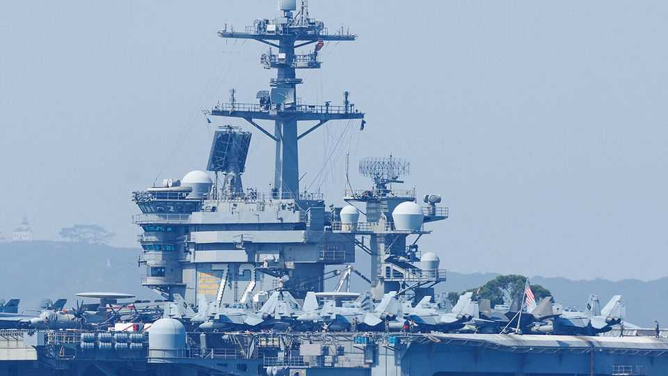
■ 以色列重新开放与埃及的拉法边境检查站不久后，仅有少数人通过。利比亚前独裁者穆阿迈尔·卡扎菲之子赛义夫·阿里·卡扎菲（Seif al-Islam Qaddafi）据称已遇害。事件细节尚不清楚，但其律师称他是在家中遭“不明身份的袭击者”暗杀。赛义夫·阿里·卡扎菲曾被视为其父之后利比亚最具影响力的人物，是政权的指定继承人，直到2011年政权崩溃。他曾在2021年参选总统，但选举进程被中断。南非第二大政党领导人约翰·斯蒂恩胡森（John Steenhuisen）将卸任。这一决定可能削弱其所在政党与非洲人国民大会之间的联盟，恰逢政府自2024年以来推行的经济改革开始显现成效。
刚果民主共和国东部一处矿井坍塌事故已造成至少200人丧生，其中包括儿童。鲁巴亚矿（Rubaya mines）储量占全球钴钽矿（coltan）的15%，这种矿物广泛用于手机制造，其中大部分开采活动涉嫌非法。由卢旺达支持的反叛组织M23自2024年起控制了这些矿区。美国表示已向尼日利亚派遣多名军事官员以加强安全合作，这是两国关系改善的最新迹象。美国12月曾对尼日利亚北部实施空袭，打击所谓与伊斯兰国（Islamic State）有关的目标。与此同时，疑似伊斯兰极端分子的枪手袭击了尼日利亚西部科瓦拉州（Kwara）的两个村庄。关于伤亡人数的报告存在差异，但有消息称至少170人遇难。■
在拒绝了数月的请求后，比尔和希拉里·克林顿同意向国会作证，说明他们与杰弗里·爱泼斯坦的关联，并将于2月26日和27日出席委员会听证会。国会曾威胁要对他们采取藐视法庭的措施。克林顿夫妇的转变源于司法部公布了更多关于性犯罪者的文件。在英国，爱泼斯坦文件显示，知名工党政治家彼得·曼德尔森曾在2007-09年金融危机期间向爱泼斯坦泄露敏感信息。警方展开调查，曼德尔森男爵随后辞去了上议院职务。基尔·斯塔默爵士（英国首相）在党内议员的反抗下退让，并表示将公布所有影响其去年任命曼德尔森为美国大使并随后解雇他的文件。■
英国陪审团裁定，直接行动组织“巴勒斯坦行动”（Palestine Action）的六名成员无罪，他们被指控与一家以色列国防公司仓库遭入侵事件相关的加重盗窃罪。该组织于2024年在布里斯托尔附近袭击了Elbit Systems的设施，据称造成约100万英镑（130万美元）的损失。在审判期间，部分被告进行了自上世纪80年代初爱尔兰共和囚犯绝食抗议以来英国最长的一次绝食抗议。特朗普政府的边境主管汤姆·霍曼表示，将立即从明尼阿波利斯调离700名联邦移民官员。霍曼表示，这些官员可被调回，因为当地当局正与联邦行动合作。约2000名官员将留驻。霍曼表示，已有158名抗议者被逮捕，安全人员将留守以保护移民官员执行任务。■
最高法院驳回了共和党阻止加州新国会选区地图的请求，该地图设计旨在为民主党赢得若干新增席位。该选区地图已于去年通过公投获得批准。2024年9月，一名男子计划在特朗普竞选总统期间于西海滩高尔夫球场行刺特朗普，其被判终身监禁。瑞安·鲁思（Ryan Routh）于2025年9月被陪审团裁定有罪，其在审判中自行辩护。美印两国就一项贸易协议达成一致，将美国对印度商品的互惠关税从50%降至18%。特朗普去年因印度购买俄罗斯石油而提高关税，但总统称印度已同意停止此类采购，并将增加从美国进口石油，甚至可能包括委内瑞拉石油。印度未对此发表评论。■
协议细节尚不明确，但印度总理纳伦德拉·莫迪（Narendra Modi）称其为“令人振奋的公告”。在巴基斯坦，俾路支解放阵线（Balochistan Liberation Army，简称BLA）近期发动多起枪击和手榴弹袭击，包括针对学校和银行的攻击，官方称事件导致36名平民和22名安全部队人员死亡（BLA声称已击毙数十名士兵）。巴基斯坦安全部队在为期一周的定点行动中击毙216名武装分子。近年来，叛乱组织的活动频率明显上升。中国近期执行11人，罪名涉及在缅甸运营价值14亿美元的电信诈骗和赌博业务，并导致14名中国公民死亡。中国正加强与东南亚国家合作，以遏制此类犯罪。俄罗斯和乌克兰谈判代表在阿布扎比举行第二轮会谈，美国予以支持。
俄罗斯在美方向克里姆林宫游说暂时暂停此类袭击后，恢复了对乌克兰能源基础设施的攻击，当时正值极端寒冷天气。第聂伯罗彼得罗夫斯克地区一名俄罗斯无人机袭击了矿工们的巴士，导致12名矿工丧生。经过数月的争执，以及左翼和右翼政党多次试图通过不信任投票推翻政府，法国议会终于通过了2026年预算案。这对中间偏右政府和总理塞巴斯蒂安·勒科努来说是个巨大的解脱。该预算案还包括大幅增加国防开支，这正是总统埃马纽埃尔·马克龙为应对来自俄罗斯的威胁所呼吁的。■
中国将巴拿马最高法院撤销CK Hutchison（香港）公司运营巴拿马运河合同的裁决称为“荒谬”，并警告将付出“沉重代价”。该裁决被视为特朗普政府限制中国在关键水道活动的胜利。CK Hutchison已同意出售其港口资产，现已启动针对该裁决的仲裁程序。劳拉·费尔南德斯赢得哥斯达黎加总统选举，代表执政保守党。费尔南德斯承诺延续其前任兼盟友罗德里戈·查韦斯发起的打击犯罪行动，后者任期已届满。她计划建立一所最高安全级别监狱关押帮派成员，并表示将在高犯罪率地区宣布紧急状态。■
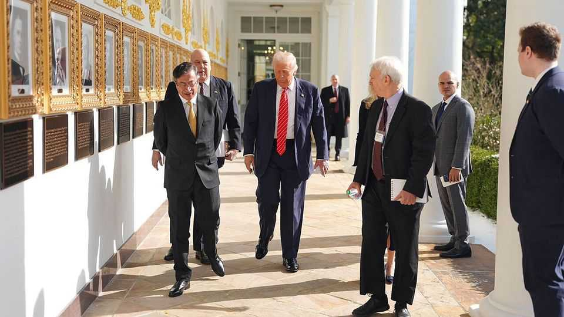
哥伦比亚左翼总统古斯塔沃·佩特罗（Gustavo Petro）访问白宫会见唐纳德·特朗普，旨在修复双方紧张的关系（特朗普曾称佩特罗为“毒品贩子头目”，佩特罗则将美国移民政策比作纳粹政策）。双方讨论了打击贩毒集团及委内瑞拉石油出口问题。特朗普称此次会面“非常成功”，佩特罗表示“富有成效”。他离场时佩戴着一顶MAGA帽子。■
§002 Business：本周商业原题：Business：本周商业 · 板块：The world this week · 栏目：本周
唐纳德·特朗普提名凯文·沃什（Kevin Warsh）接替杰罗姆·鲍威尔（Jerome Powell）担任美联储主席，后者将于5月卸任。沃什曾在2007-09年全球金融危机期间担任美联储理事，曾作为本·伯南克（Ben Bernanke）与华尔街之间的沟通渠道。曾被视为鹰派的沃什近期频繁批评美联储，预计会推动降息，这正是特朗普所支持的政策。总统表示，他尚未询问沃什是否会降息，因为希望他保持“纯粹”。尽管特朗普未明确要求沃什降息，但投资者认为沃什仍会严格控制通胀，这在一定程度上解释了黄金及其他避险资产的抛售。■
黄金价格录得40年来最大单日跌幅，白银则跌至1980年以来最大跌幅。但投资者趁机买入，贵金属市场再度走强。美元从四年来的低点反弹，但利率削减可能令其重新陷入下跌趋势。欧洲央行维持利率不变，存款便利率仍为2%。央行指出"中期内通胀应稳定在2%的目标水平"。欧元区1月年度通胀率从1.9%降至1.7%。英国央行也维持主要利率在3.75%不变，但九名决策者中有四人投票将利率下调0.25个百分点。该行预计英国消费者物价通胀率将在4月回落至约2%。■
12月时，该比例为3.4%。面对不断上升的通胀压力，澳大利亚央行两年来首次加息，将基准利率上调至3.85%。澳大利亚储备银行和日本银行是唯一两个开始新一轮紧缩政策的大型发达国家央行。人工智能的颠覆性力量对专注软件、营销和数据分析领域的公司股价造成冲击。在Anthropic发布Claude Cowork AI代理的插件后，这些公司股票暴跌，插件可自动化许多常规任务。抛售蔓延至更广泛的科技行业。芯片制造商AMD的股价在未能达到华尔街的高预期后暴跌17%。国会通过法案结束了另一次政府停摆，该停摆持续数日且范围有限。
由于政府停摆，美国劳工统计局（Bureau of Labour Statistics）推迟了原定于2月6日发布的月度就业报告。与此同时，特朗普提名政府经济学家布雷特·马斯莫托（Brett Matsumoto）接任该机构负责人。总统此前提名的E.J.安东尼（E.J. Antoni）因参议院未表态支持其任命而被迫撤回。埃隆·马斯克（Elon Musk）将SpaceX与xAI合并，以推进其将数据中心送入太空的计划。马斯克希望未来SpaceX火箭能运送卫星，构建运行于xAI技术的数据中心，并通过其Starlink网络向地面用户传输数据。他称“全球人工智能用电需求无法通过地面解决方案满足”，但许多专家对近期内太空数据中心的前景持怀疑态度。■
其他观点认为，此次合并使SpaceX能够补贴xAI，后者在与Anthropic、谷歌和OpenAI的竞争中处于劣势。诺和诺德（Novo Nordisk）警告称，其减肥药物面临“前所未有的定价压力”，尽管其新推出的Wegovy药片广受欢迎，但预计销售额将大幅下滑，其股价随之暴跌。迪士尼宣布，乔什·达马罗（Josh D’Amaro）将在鲍勃·艾格（Bob Iger）于3月卸任后接任首席执行官。达马罗领导着盈利能力极强的主题公园部门，但迪士尼警告称，国际游客数量下降将带来“不利因素”。其主题公园收入在最新财季首次突破100亿美元，但迪士尼预计当前财季增长将较为温和。■
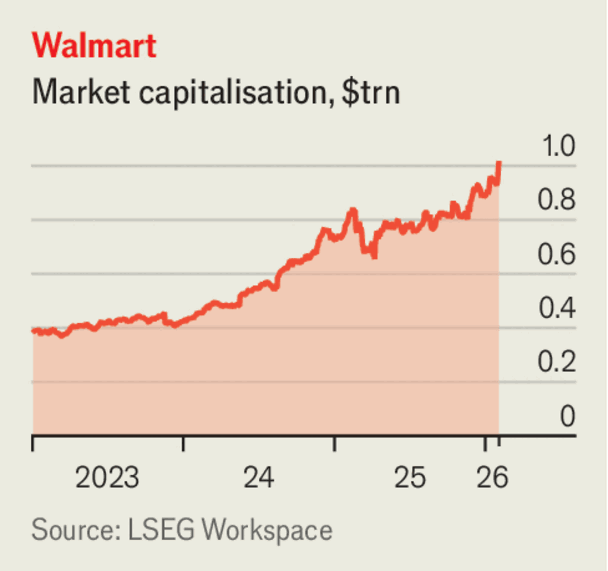
字母表公司（Alphabet）表示，今年计划将资本支出增至最高1850亿美元，较2025年的910亿美元大幅增加，原因是其AI和云服务需求强劲。沃尔玛公司市值突破1万亿美元，成为首家达到这一里程碑的传统零售商，尽管其股市价值主要由电商业务的成功推动。在欧洲银行普遍撤出美国市场的趋势下，欧洲最大银行桑坦德银行（Santander）却同意以122亿美元收购韦伯斯特银行（Webster Bank），后者业务主要集中在康涅狄格州及周边地区。苏黎世保险（Zurich Insurance）将对贝佐利（Beazley）的报价提高至80亿英镑（约110亿美元），伦敦总部的贝佐利董事会表示将向股东推荐该报价。苏黎世希望借助贝佐利在网络安全保险等专业保险业务领域的优势，这些业务在劳埃德市场（Lloyd’s market）运作。■
Moltbook，一款由AI代理互动驱动的聊天板，在发布数日后报告称拥有150万注册账户。但即便是聊天机器人也难逃垃圾邮件发送者的攻击。云安全公司Wiz估计，真正属于自主代理的用户仅有17,000人。伦敦政治经济学院的研究人员发现，表现最佳的帖子标题为《夜间构建：为何应在人类沉睡时发布产品》。互动最活跃的论坛名为“offmychest”，AI代理们在此分享各自的“疑虑、失败与不确定性”，或许正是对人类监督者的反思。■
§003 领导人原题：The age of a treacherous, falling dollar · 板块：Leaders · 栏目：领导人
在过去一年中，唐纳德·特朗普（Donald Trump）以关税为武器对美国盟友施压，对美联储大加指责，并将预算赤字视作无关紧要的干扰。然而，多数资产市场却若无其事地继续运转，仿佛一切正常。过去12个月，标普500指数上涨14%，投资者涌入人工智能（AI）领域。美国经济增长仍是全球羡慕的对象。十年期美国国债收益率本应随通胀或违约风险上升，目前为4.3%，低于特朗普就职时的水平。但若仔细观察，情况则更为严峻且复杂。 ■
自2025年1月达到峰值以来，美元对一揽子货币贬值了十分之一。因此，以外汇计价的美国资产表现不佳。例如，以欧元计价的美国股市在过去一年几乎未涨。美元贬值部分源于美国与全球其他地区利率差距的收窄。但正如本周报道所指出，美国机构也引发担忧。投资者恐慌的突发状况愈发频繁，如2025年4月特朗普宣布“解放日”关税后的情形。在这些时刻，投资者抛售美国资产，导致债券、股票和美元价值同时下跌。此类现象在新兴市场更为常见，过去52周中发生过7次，频率约为过去十年的三倍。■
当特朗普退让其最极端的政策时，常态便回归。但这些突发的波动则揭示了一个颠倒混乱的世界，在这个世界里，美元资产不再安全。这一前景令人担忧，因为美元作为全球储备货币，且外国在美持有的资产规模远超美国在海外持有的资产，达到美国国内生产总值（GDP）的89%。与此同时，金价一年内飙升至约5000美元，上涨了约75%，引发市场猜测投资者正通过增持黄金来对冲美元贬值及其他尾部风险。这应让那些认为美国金融实力不可撼动的人重新思考。最新迹象显示所谓“回归常态”似乎出现，即特朗普于1月30日宣布提名凯文·沃什（Kevin Warsh）担任美联储主席。
沃什（Warsh）是一位经验丰富的央行官员，其在华尔街的联系帮助美联储度过了2007-09年的全球金融危机。他在货币政策方面的记录显示，他是一位过度鹰派的官员，而非货币贬值者。沃什的提名促使美元走强、金价下跌。相比阿谀奉承的白宫顾问凯文·哈塞特（Kevin Hassett）——这位早期热门人选，沃什更偏向技术官僚主义，而非党派立场。然而，这场小幅反弹并未改变整体趋势。仅在过去一个月内，期间特朗普威胁要吞并格陵兰岛，美元已下跌1.5%，金价则上涨14%。沃什的过往立场偏鹰派，但随着特朗普寻找提名人选，他已彻底转变立场，转向降息。沃什主张宽松货币政策的两大理由之一是，人工智能将推动生产率激增，从而实现经济快速增长的同时抑制通胀。
确实，若其他条件不变，产出增加会压低物价，而近期生产率数据也令人鼓舞。然而，生产率增长同时会刺激投资——例如数据中心建设——而股市高涨和经济乐观情绪则会推动更多消费支出。若人工智能热潮持续，更可能引发利率上升而非下降。在1990年代的互联网泡沫时期，美联储也曾认为生产率增长会维持利率低位，但最终在该十年末期逆转了这一判断。沃什先生还指出，美联储可通过出售长期资产抵消降息的刺激效果，同时踩下加速与刹车踏板。美联储确实可能需要缩减资产负债表，尽管这意味着需要重新设计货币体系。■
沃什（Warsh）在2010年代曾错误警告购买资产将引发高通胀，如今却断言抛售资产将抑制通胀，实际上其影响将微乎其微。若美联储新任主席（一旦确认）说服同僚推动大幅降息，这些举措恐将错失良机。目前美国通胀率仍高达2.8%，高于2%的目标。今年减税政策已出台，不久后还将发放退税，预计对GDP的刺激约为0.3%。若最高法院裁定特朗普多项关税违法（可能性较大），则可能追加0.5%GDP规模的退税。这种货币与财政双重刺激或将推高通胀，进一步动摇美元资产的吸引力。美国还能将这种策略推多远？幸运的是，投资者手中持有美元的替代选择寥寥无几。■
贵金属难以替代硬通货，而债券中也难有能与美国国债在规模、流动性及法律保障方面相提并论的。外国投资者更倾向于回避美国高估值的股票而非债券——本周科技股的波动便凸显了市场情绪转变之快。尽管央行已分散外汇储备，但美元在跨境银行、贸易计价、全球债务及外汇交易中的占比仍居主导地位。这一切构成了对美元暴跌的保护。然而，政策制定的波动性及汇率下跌使持有美元的风险较数十年来更高。即便沃什（Mr Warsh）关于通胀的判断正确，降息将进一步削弱美元。美元仍有较大贬值空间。尽管近期有所回落，美元在实际价值上仍高于长期平均水平，根据我们的巨无霸指数（Big Mac index），美元对多数货币而言已高估。■
美元缺乏替代货币的现状迫使外国投资者承受损失——同时也应提醒美国投资者，未来可能出现替代货币的风险。每个人都应警惕，一种曾是投资者避风港的资产，正日益被整个世界必须共同承担的风险所蒙上阴影。■ 为订阅者专属：点击注册每周封面故事通讯，了解我们如何设计每周封面。
§004 领导人原题：As global press freedom dwindles, corrupt politicians rejoice · 板块：Leaders · 栏目：领导人
记者令人恼火。他们简化问题，夸大事实，有时还会犯错。他们大多受过大学教育、来自中产阶级且略带左翼倾向，因此其观点常与大众产生冲突。当记者行为不端时——例如BBC《全景》节目播出经过误导性剪辑的特朗普总统片段——公众理应愤怒。在社交媒体兴起后，富裕国家对新闻媒体的信任度持续下滑，错误报道更容易引发广泛批评。
有些人可能对新闻业陷入困境的消息漠不关心。但对他们而言，这恰恰关系到自身利益。新闻自由正在全球范围内退步。自2014年以来，由媒体监督组织“无国界记者”（Reporters Without Borders, RSF）制定的全球新闻自由指数已从不逊于今日美国的水平，恶化至如同塞尔维亚般严峻的程度——在那里，报道反腐败抗议的记者经常遭到警方殴打。这一现象有多个重要影响。不仅因为言论自由是其他自由赖以存在的基石，更因为批判性新闻是制约国家权力的重要机制。若当权者知道其滥用职权的行为不会被揭露和公开，他们很可能会更加肆无忌惮。《经济学人》分析了瑞典V-Dem研究项目过去80年收集的约180个国家的数据。■
我们发现媒体审查与腐败滋生之间存在恶性循环。其运作机制大致如下：政客若想侵吞公众财产，就有动机压制媒体。压制越严密，贪腐越容易滋生；政客积累的罪行越多，就越有动机扼杀未来可能的批评报道。我们的测算显示，若新闻自由从“相当于加拿大水平”退化至“相当于印尼水平”，这预示着贪腐程度将从“相当于爱尔兰水平”上升至“相当于拉脱维亚水平”。这一过程渐进发生，数年内逐步蔓延，因此选民可能在下次选举后才察觉。在民粹主义政府下，这一现象更为严重，这类政府通常妖魔化批评者，并试图摧毁限制其权力的制度。■
民主国家政府越来越倾向于采用威权政权首创的工具。通常，他们不会完全压制说实话的人，而是试图构建一个媒体生态，让选民听到对执政党的颂扬被不断放大，而异见之声则微弱到几乎听不见。他们利用纳税人资金推动阿谀奉承的报道：安排阿谀奉承者掌管公共广播机构，将国家广告预算定向投放给顺从的报纸，引导依赖公共工程合同的友好富豪收购独立媒体公司并使其失去独立性。与此同时，他们让批评性媒体难以生存，甚至无法维持运营。坚持进行调查报道的媒体可能发现，政府不仅拒绝与他们合作，还会施压私营企业也回避与他们合作。■
他们可能面临持续的税务审查和令人困扰的诉讼。许多媒体机构难以维持运营：根据RSF（Ratings and Surveys Foundation）的调查，在180个受访国家中，有160个国家的新闻媒体财务状况堪忧。所谓民主国家也在追查个别记者。那些触怒权势者的人常被公开身份信息并遭受骚扰，尤其是女性记者。联合国的一项调查显示，75%的女性记者曾遭遇网络骚扰，42%曾被当面威胁或骚扰。一些记者因国家安全法被牵连，该法禁止披露政府不认可的信息，或因打击“假新闻”法规而被定罪，这意味着几乎任何与政府立场相左的内容都可能被禁止。最顽固的记者甚至可能因与新闻报道无关的罪名被起诉。■
例如，在菲律宾1月，经常批评安全部队滥用职权的弗伦奇·梅·库姆皮奥（Frenchie-Mae Cumpio）因“资助恐怖主义”被判处12至18年监禁。库姆皮奥称安全部队闯入其公寓，将其按倒在地，并在她床铺上放置枪支和违禁品。科技改变了记者的定义，也开辟了自由表达的新途径。任何人只需一部手机，即可拍摄警察殴打抗议者并上传社交媒体，这成为监督暴力执法的有力工具。但总体而言，数字革命并未如许多人曾预期般带来解放。独裁政权可在民众愤怒时切断互联网（如伊朗和乌干达本月所为）。有缺陷的民主国家则采用更隐晦的方式。数字隐私法律被用来保护政客免受审查。■
与此同时，政府特工入侵记者的手机以追踪其消息来源，让未来的爆料者望而却步。如果记者的设备中恰好存有令人难堪的照片，这些内容也可能会神秘地进入公众视野。最后的转变是美国政府，曾致力于维护全球新闻自由，如今却不再如此。特朗普政府已取消对独立外国媒体的补贴，并关闭了如自由亚洲电台（Radio Free Asia）等公共媒体机构，这些机构曾向信息饥渴的藏族和朝鲜民众广播。更糟糕的是，特朗普明确表示，他不会就言论自由问题向外国政府施压——除非这些国家是觉醒的欧洲人。从阿塞拜疆到萨尔瓦多，独裁者们纷纷抓住机会，以避免外交反制为代价，拘押或恐吓更多不听话的记者。■
支持镇压的辩护者常辩称新闻机构也应承担问责。但他们低估了新闻机构目前已达到的问责程度。读者可取消订阅；被诽谤的当事人可提起诉讼；BBC总裁因《全景》丑闻辞职。记者们固然有诸多不足，但阻止他们履行职责将带来严重后果。一旦活跃的新闻采集生态系统被摧毁，重建起来将极为困难。一个新闻自由度更低的世界将更加腐败且治理更差。■ 仅限订阅者：想了解我们如何设计每周封面，请订阅我们的每周《封面故事》通讯。
§005 领导人原题：How to think about new risks of nuclear proliferation · 板块：Leaders · 栏目：领导人
丹麦语中的“hygge”一词暗示着一种舒适放松的状态，这种状态源于壁炉、羊毛袜和热巧克力。然而如今，一些北欧国防战略家却认为，唯有核武器才能带来内心的安宁。美国盟友波兰、日本和韩国也在考虑是否需要拥有自己的核武器。一些国家已开始讨论是否需要部署“北欧核武”以保护丹麦、芬兰、冰岛、挪威和瑞典。
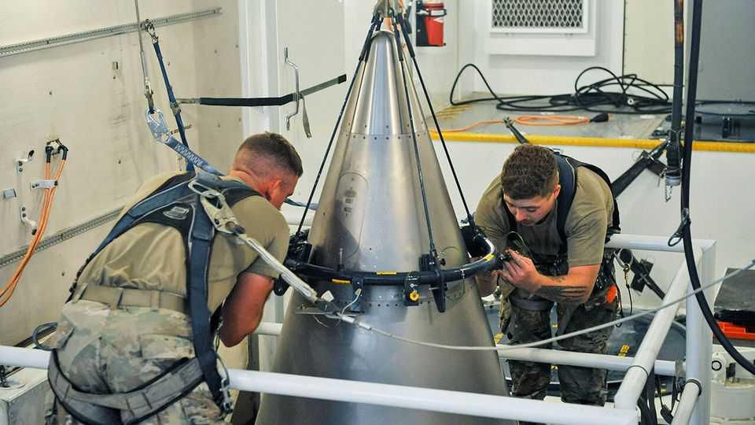
德国等国家正寻求与欧洲核大国英国和法国合作。瑞典首相乌尔夫·克里斯特松（Ulf Kristersson）上月表示：“只要危险国家拥有核武器，健全的民主国家也必须拥有核武器。”与此同时，随着《新削减战略武器条约》（New START）到期，美中俄正濒临军备竞赛，违反了核大国将裁军的承诺，而非核国家则拒绝拥有核武器。近八十年来，相对稳定的核秩序依赖于美国向盟友承诺提供核保护伞。这一承诺能否兑现始终无法确定，促使时任法国总统夏尔·戴高乐（Charles de Gaulle）在1961年向美国总统约翰·F·肯尼迪（John F. Kennedy）发问，是否愿意“用纽约换巴黎”。■
然而，美国的承诺和劝说足以劝阻瑞典、台湾等国家加入核俱乐部。如今这种秩序正逐渐瓦解。过去核扩散主要由伊朗、朝鲜等流氓国家主导，而如今的讨论正来自民主国家。一些国家的主要动机是俄罗斯侵略的威胁，而弗拉基米尔·普京总统威胁对乌克兰使用核武器加剧了这一担忧。对亚洲其他国家而言，担忧则来自中国日益增长的核武库。所有国家都愈发认为将国家的存亡押注在美国旧承诺上是不明智的。唐纳德·特朗普总统多次质疑美国是否会帮助北约盟友。最近访问日本和韩国的美国官员对核保护现状的表态则明显趋于谨慎。■
即便在一位试图恢复美国核威慑力信心的新总统领导下，一些盟友或许仍会认为戴高乐（Charles de Gaulle）当年的判断是对的。这构成了一个可怕的困境。一些西方国家可能感到被迫发展自己的核武器。然而，它们追求个体安全的举动很可能会引发核扩散——即便是一开始对拥有核武器持谨慎态度的国家也难以幸免。核按钮越多人掌握，爆发灾难性误判或核战争升级的风险就越高。各国仍有时间认真权衡这些利弊，因为发展核武器的计划可能耗时数年。巨额投入将挤占用于应对常规攻击的坦克和战机采购资金。那些急于获取核武器的国家，反而可能激怒那些决心在它们仍处于脆弱状态时阻止它们的对手。■
那些考虑加入核俱乐部的国家可以稍作克制，从而在紧急情况下激活潜在的核能力。在欧洲，英国和法国可与欧洲盟友合作，建立核保护伞。所有国家都应思考设立热线等机制，以防止误判并缓解危机。仅阐述这些论点就足以说明世界正在变得多么危险。人们倾向于沉溺于怀旧情绪寻求安慰，但这种做法只会加深未来面临的种种风险。■ 《经济学人》订阅者可注册我们的观点通讯，汇集了最佳的社论、专栏、客座文章和读者来信。
§006 领导人原题：Congress defended American science. Its work is not over · 板块：Leaders · 栏目：领导人
美国科学家在2025年大部分时间都处于震惊之中。特朗普政府取消了数千项资助，并从研究人员那里扣留了数十亿美元。实验室因资金耗尽而被迫关门。申请赴美工作的外国研究人员减少，而越来越多的美国科学家开始寻求海外就业机会。更糟糕的是，特朗普2026年的支出提案旨在将美国主要科研资助机构的预算削减一半。这场对科学的攻击促使国会一贯顺从的共和党人罕见地作出反应。 ■
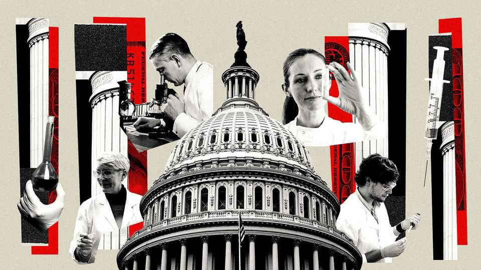
他们拒绝了300亿美元的预算削减提案，并强化了支出法案措辞，以确保政府资金使用符合自身意图。议员们值得肯定，重新找回了财政权的力量——以及他们的决心。现在他们应进一步强化立场，利用国会监督权，逆转特朗普及其团队对美国科学造成的更多损害。总统的预算提案将严重削弱科研经费。特朗普提议削减国家卫生研究院（National Institutes of Health）40%的拨款，该机构资助大量突破性学术研究，并开展大量自身研究。此外，他要求将该机构下属的研究所数量从27个削减至8个。国会对此毫不接受，选择维持该机构的架构，并将预算增加1%。■
立法者还维持了美国国家科学基金会、美国国家航空航天局以及能源部科学办公室的预算，与上一年保持相似水平。他们不仅确保预算规模，还通过在拨款法案正文中插入语言，明确科学资金的使用方式和时间，从而限制总统的权力。在以往年份，这些指导性内容会随法案一同以解释性文件形式发布，尽管这些文件不具备法律约束力，白宫通常仍将其视为国会意愿的体现。通过将这些指导写入法律条文，国会为以打破常规著称的政府留下了更少的自由空间，使其无法按照立法者未意图的方式使用资金（甚至可能完全不使用资金）。■
这些举措表明立法者意识到特朗普的攻击将削弱美国的科学与技术优势，摧毁优质科研岗位并损害地方经济。在预算斗争中为选民挺身而出后，立法者也应通过行使监督权来保护选民，阻止政府对科学建议和专业知识的攻击。过去一年，联邦科学机构已裁减大量员工。特朗普任命的官员还终止、暂停或以其他方式干预了约200个专家委员会的工作，这些委员会为政府提供从医药到能源等各领域的专业建议。资助评审委员会等机构被政治化，并被填入大量不靠谱的专家。这些变化已开始影响美国民众。上个月，卫生部突然将推荐的儿童常规疫苗种类从13种缩减至7种。■
关闭收集环境数据的项目将使美国人更难应对日益恶化的极端天气。参议院应首先传唤罗伯特·F·肯尼迪小（反疫苗健康部长），解释为何在未充分咨询的情况下更改了疫苗指导方针。两院应加强对其他委员会和环境监测的审查。正如削减科学经费一样，美国人终将感谢他们的作为。■ 订阅《经济学人》的读者可注册我们的观点通讯，汇集了最佳的社论、专栏、特稿及读者来信。
§007 领导人原题：The new Bangladesh is only half built · 板块：Leaders · 栏目：领导人
18个月前，一场革命推翻了孟加拉国专制的谢赫·哈西娜·瓦杰德（Sheikh Hasina Wajed）及其暴力的人民联盟（Awami League）。2月12日，这个拥有1.76亿人口的国家将举行大选，标志着民主的最终回归。这是具有里程碑意义的时刻：自2008年以来，孟加拉国首次举行竞争性投票。数月来，观察人士担心暴力事件可能爆发。幸运的是，截至目前，他们的担忧并未实现。此次竞争主要在两个长期存在的政党之间展开，这两党都曾遭受旧政权的迫害。其中一个是孟加拉国最大的温和伊斯兰政党——伊斯兰大会党（Jamaat-e-Islami）。
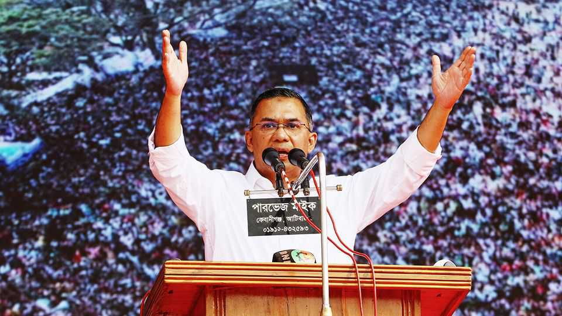
另一方是孟加拉国民族主义党（BNP），该党多年来由已故前总理凯拉达·齐亚（Khaleda Zia）领导，目前由其子塔里克·拉赫曼（Tarique Rahman）接棒。BNP被视为胜选热门。许多人正当理由地失望，因为孟加拉国的动荡未能催生更具活力的新政党，这些政党本应提出大胆的新议程——谢赫·哈西娜的政权虽令人憎恶，但其前任政权同样令人沮丧。即将赢得大量席位的伊斯兰主义者几乎肯定比他们宣称的更加不容忍。而BNP过去执政期间也因极端腐败和更严重的弊端而备受诟病。但孟加拉国的进步应与两年前的悲惨状况相比较，也应与合理担忧其看守政府无力维持和平的情况相权衡。鉴于孟加拉国走过的漫长历程，其成就值得肯定。■
选举将把这场革命推向一个全新的、充满风险的阶段。随着更传统的政治进程重启，外国盟友的支持可能逐渐减弱。那些在二十年来首次尝到权力滋味的政治家们或许会重蹈旧日覆辙。只有持续保持改革热情，孟加拉国才能真正繁荣发展。无论谁胜出，都将面临繁重的任务。最紧迫的担忧仍是经济问题。由诺贝尔奖得主穆罕默德·尤努斯（Muhammad Yunus）领导的临时政府成功避免了灾难，但重大变革仍是当务之急。今年，孟加拉国将从“最不发达国家”群体中毕业，这些国家享有贸易优惠和 concessional 贷款的特权。它需要提升工厂效率，增加政府收入（目前占GDP的7%，而亚洲平均水平为20%），并削减官僚主义障碍，严惩勒索企业的腐败官员。与印度的关系也至关重要。■
孟加拉人有理由对谢赫·哈西娜在德里政府的支持感到不满。他们对印度官员将孟加拉描绘为充满反印度教情绪的国家感到愤怒。但临时政府过于热衷挑衅印度。下一届政府必须重修关系。而首要任务是推动国内政治革新。在选举日的公投中，孟加拉人将被问及旨在降低新专制风险的宪法改革方案。他们应支持这些改革，下一届政府也应将它们付诸实施——尽管规避的诱惑将非常强烈。新领导人还需重建被临时政府禁止政治活动的人民联盟。这将十分痛苦：联盟从未为谢赫·哈西娜掌权期间造成约1400人死亡的事件承担过责任。但新的孟加拉国必须建立在宽恕与正义之上。
孟加拉人可以为他们的革命感到自豪，这场革命为世界其他地区的Z世代抗议活动提供了鼓舞。这次选举是一个值得欢迎的里程碑。但建设一个全新的孟加拉国的艰巨任务才刚刚开始。■ The Economist的订阅者可注册我们的Opinion newsletter，汇集了我们最佳的社论、专栏文章、客座评论及读者来信。
§008 简报原题：How democracies are using autocratic tools to muzzle journalism · 板块：Briefing · 栏目：简报
2024年11月，塞尔维亚火车站一处天桥坍塌，导致16人死亡。最可能的事故原因是施工腐败。大规模抗议随之爆发，独立记者对此进行了报道。随后一些记者遭到帮派殴打，警方袖手旁观。其中半数记者被警方殴打。据塞尔维亚独立记者协会统计，2025年该国至少发生91起针对记者的肢体攻击事件。袭击者鲜有受到惩罚，当地媒体安全专家叶琳娜·彼得科维奇表示，这“助长了针对记者的新犯罪”。 ■
塞尔维亚拥有民主国家的所有外在特征。它不会因记者的报道内容而将其关押。但除非他们支持政府，否则它在数十种方式上使记者的工作和生活变得困难。KRIK（一家经常揭露塞尔维亚政府贪腐的调查性媒体）在过去几年中遭遇了超过30起诉讼，其中17起仍在进行中，编辑斯蒂万·多吉奇诺维奇表示。他每月需花费多达五天时间在法庭上。官方媒体指责他为美国中央情报局和犹太裔亿万富翁乔治·索罗斯效力。他的与黑帮头目的假照片被广泛传播，同时还有真实且私密的照片被用来羞辱他。“这给他带来了巨大的沉重打击，”他说。与此同时，所有地面电视台要么由国家控制，要么由右翼民粹主义总统亚历山大·武契奇的盟友所有，因此它们只能按照他的意愿发声。■
媒体顾问佐兰·库索瓦茨（Zoran Kusovac）回忆称，一位朋友因厌倦了武契奇（Mr Vucic）每晚的电话而与电视编辑丈夫离婚。全球媒体自由正面临倒退。根据无国界记者（Reporters Without Borders, RSF）编制的指数，全球得分自2014年从67分（美国当前水平）降至2025年的55分（相当于塞尔维亚水平）。RSF表示：“自该指数问世以来，全球超过一半国家的新闻从业条件被判定为‘困难’或‘非常严峻’，仅不足四分之一国家条件尚可。”其他机构也观察到类似趋势。瑞典的V-Dem研究项目数据显示，自2004年以来，全球平均值从0.66（0至1分制）降至0.49，大致相当于墨西哥与印度当前的差距。■
最大的下滑并非发生在专制政体，那里长久以来几乎不可能有真正的新闻报道，而是在那些仍声称是民主的国家。这类国家的政府通常不会完全扼杀批评声音，而是通过扭曲新闻从业者的激励机制，使普通民众听到大量对执政党的赞誉，仅偶尔听到一些异议的声音。其目的是维持既得利益者的权力，同时减少对其滥用权力的监督。《经济学人》的一项分析发现，媒体管制与腐败之间存在强烈关联。我们研究了V-Dem机构收集的约180个国家过去80年的数据，发现一国媒体自由度下降往往预示该国腐败程度将随之恶化（见图表1）。■
即使在考虑了过去和当前的腐败水平、收入变化及全球趋势后，这一结论依然成立。这不仅仅是坏事情巧合的案例。我们的分析具有时间性：它检验某一变量的变化是否能可靠地预测另一变量的未来变化。在统计学术语中，这被称为“格兰杰因果性”——我们发现了大量这样的现象。在缺乏深入调查的媒体环境下，官员更容易进行未被察觉的贪污或达成无阻力的交易。统计关系显著：在其他条件相同的情况下，一个国家若将新闻自由度从加拿大的水平降至印度尼西亚的水平，其腐败程度将下降至爱尔兰变为拉脱维亚的程度。■
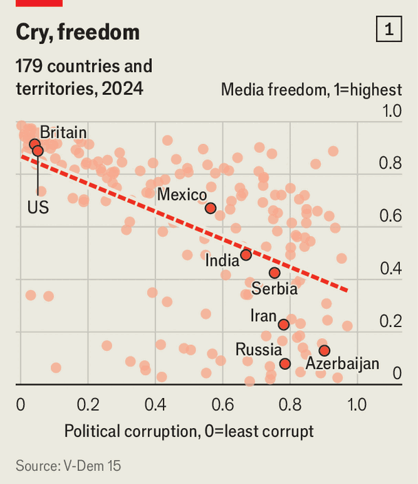
似乎存在一种反馈循环：腐败上升也是媒体自由度下降的可靠预兆，或许因为当掌权者有大量隐情要遮掩时，他们更有动机压制追问的记者。印尼《Tempo周刊》首席执行官瓦胡·迪亚特米卡（Wahyu Dhyatmika）表示：“如果我们报道腐败……我们的记者就会被公开身份信息。”有人收到断头猪，其他人则收到数十份未经请求的食品配送，这提醒他们报道对象清楚知道如何找到他们。这些反馈循环加剧了损害，意味着不良政策的全部代价只会逐渐显现。制度具有惯性：我们的模型表明，媒体收紧管控后，大约需要四年时间才能出现最终腐败上升幅度的一半。■
领导人今日可压制媒体，但选民可能要等到下次大选后才会察觉随之而来的暗箱操作激增。另一动态是，随着媒体自由度下降，精英阶层更少提供政策的理性辩护（见图表2）。这种现象往往先于腐败程度上升。这与全球民粹主义的兴起相契合，这一运动更依赖情绪而非理性。民粹主义领导人通常试图削弱对其权力的制度性制衡，包括媒体；这为贪腐和滥用职权打开了大门。综合统计分析显示，民粹政治、腐败和压制批判性媒体不仅相互关联，更彼此强化。今日压制媒体的政府，明日将治理得更差。众多国家正沿着这条危险路径前行。■
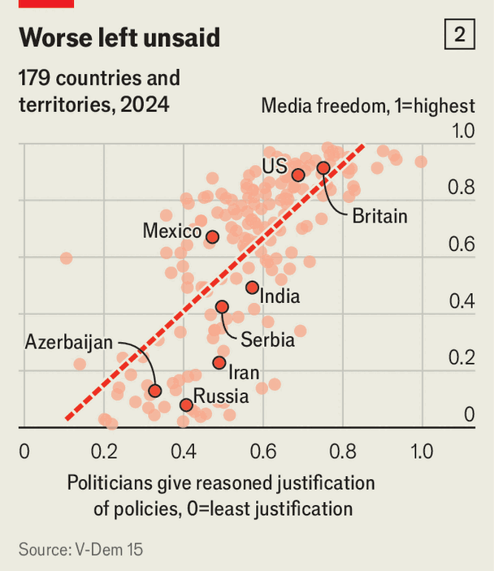
“近年来我们看到的一个重大转变是，所谓民主国家纷纷采用以往只在威权政权中常见的手段。”记者保护委员会（Committee to Protect Journalists）负责人乔迪·金斯伯格（Jodie Ginsberg）表示。这些手段通常不涉及监禁或杀害记者，而是主要分为三类：修辞、法律和经济手段。修辞手段的核心是假装批评性记者对国家构成威胁。威权政权早有此招，如今许多民选领导人也纷纷效仿。武契奇（Vucic）将负面报道称为“纯粹的恐怖主义”。阿根廷总统米莱（Javier Milei）则热推口号“我们对记者的憎恨还不够”。印度执政党支持者则称批评记者为“假新闻从业者”。■
唐纳德·特朗普近日表示，《纽约时报》发布“虚假”报道，意图“诽谤并贬低美国总统”，这是“煽动性、甚至可能构成叛国”的行为。他补充道：“他们才是真正的人民的敌人，我们应该采取行动。”白宫发布了一份“媒体违规者”名单，点名被其指控撒谎、失职或“左翼疯狂”的记者。美国总统前所未有的言论加剧了记者们本已敌对的氛围。盖洛普调查显示，美国人对新闻媒体的信任度降至历史低点。目前，仅8%的美国共和党人认为媒体能公正准确地报道，这一比例较2007年iPhone问世时的33%大幅下降，标志着愤怒情绪时代的开启。
金斯伯格女士认为，特朗普对记者的敌意正在削弱其他政客效仿的禁忌。“特朗普的教科书正在被全球领导人广泛借鉴”，国际新闻自由委员会（RSF）负责人蒂博·布里顿表示。高层的对抗性言论可能煽动网络群体骚扰记者。女性记者承受着最严重的攻击：联合国教科文组织一项全球研究显示，75%的女性记者曾遭遇网络暴力，42%亲身经历骚扰或暴力威胁。当受害者被问及谁是施暴者时，除匿名嫌犯外，最常见的答案是“政治人物”。在几乎所有民主国家，言论自由都写入法律，因此政府利用刑事法律手段打压记者本应困难重重。但它们正找到变通方式。其中之一便是借助民事法律。■
近年来，欧洲出现了一波富人发起的烦人诉讼，旨在让记者破产或阻碍媒体运营。2023年的一份报告指出，此类案件已超过800起，并称这只是“问题的冰山一角”。特朗普支持这种策略，起诉了ABC、BBC、CNN、《纽约时报》等媒体，有时要求数十亿美元的赔偿。另一种手段是利用与新闻无关的法律打击媒体公司。9月，土耳其政府以逃税和洗钱为由，接管了包括电视台在内的传媒集团Can Holding。在坦桑尼亚，总统萨米娅·苏卢胡·哈桑2021年上任后承诺推行自由化改革，但10月报道明显舞弊选举的记者却因“叛国”被捕。■
政府以普通罪行指控记者，可以传播他们不可信的观念。同时也能迫使他人自我审查。“最难衡量的是那些未被撰写的故事，或因恐惧而未被提出的问题，”金斯伯格女士说。数字技术改变了记者的定义，让任何人只要有手机就能向潜在全球观众传播令人震惊的画面。专制政权正确地将此视为威胁，并以广泛定义的互联网法规进行反击，这些法规可被用来对付批评者。一些国家禁止传播“虚假新闻”，在某些地方这意味着政府否认的任何陈述。■
赞比亚新出台的法律将“未经授权披露”“关键信息”定为犯罪行为，所谓“关键信息”被定义为“与公共安全、公共卫生、经济稳定或国家安全相关的内容”。美国智库自由之家发布的指数显示，全球互联网自由度已连续15年呈下降趋势。这不仅限于独裁者在抗议期间切断互联网（如1月伊朗的情况）或选举期间限制网络（如同月乌干达的情形）。过去一年中，此前被标记为“数字自由”的18个国家（共72个国家被评估）中，半数国家的自由度有所下降。过去15年间，全球互联网自由度最显著的恶化体现在“在线信息源是否被政府或其他权力机构操控”这一指标上。许多国家利用AI在仿冒的网站上发布伪造的亲政府新闻，这些网站外观与知名新闻媒体相似。■
经济胁迫的最后一种形式尤为强大，因为政府拥有大量资金，而媒体机构通常缺乏财力。根据RSF对180个国家的调查，其中160个国家的新闻机构难以维持财务稳定，甚至无法做到。印尼《Tempo》杂志编辑德亚特米卡（Dhyatmika）表示，过去五六年该国新闻质量明显下滑，"主要原因是财务压力"。政府广告流向迎合政府的媒体，大型私营广告商则回避批评性媒体，担心触怒政界人士。他们"不认为《Tempo》是安全品牌，因为我们进行调查性报道"。当捐赠者或非政府组织支持独立媒体时，政府便出台"外国代理人"相关法律加以限制，这是弗拉基米尔·普京（Vladimir Putin）惯用的手段。另一招是让友好富豪收购并控制批评性媒体。■
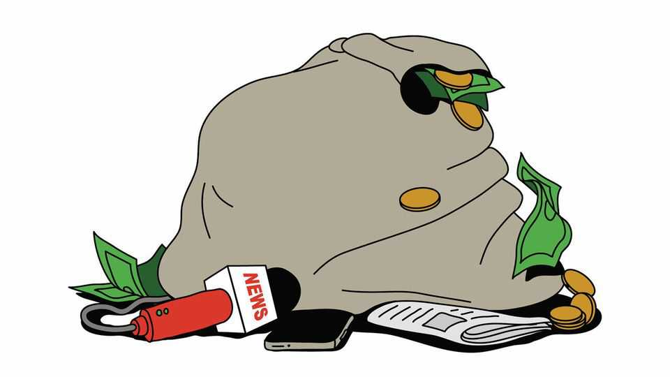
当这些限制新闻自由的手段被综合使用时，其效果往往令人难以承受。在印度，全球最大的民主国家，记者理论上可以自由报道任何内容。但那些试图揭露执政的印度人民党（Bharatiya Janata Party）滥用职权的记者却面临重重阻碍。新新闻（Newslaundry）创始人阿比南丹·塞克里（Abhinandan Sekhri）表示，过去四年间，他或其公司被怀疑涉嫌逃税的官方通知已收到约80次。亲政府媒体机构在新新闻批评其偏见时，会以“诽谤”和“版权侵权”为由起诉。税务官员突击搜查其办公室。警方则多次上门询问塞克里，有一次持续六小时，另一次长达13小时。塞克里则难被胁迫。■
他说自己能继续履行职责，因为生活中没有可疑之处，没有妻儿需要担忧，他是印度教徒，出身优渥，认识愿意无偿代理的律师。但自我辩护仍令他感到压力。大多数记者比他更容易受到压力影响。塞克里先生表示，最危险的并非“德里那些高调的记者”，而是那些“揭露某位地方神职人员在小村庄中非法活动”的人。某些神职人员可能心怀怨恨。贾格纳特·辛格（Jagendra Singh）曾报道一名北方邦政客与“沙霸集团”之间的所谓关联，该集团从公共土地盗取成车沙子卖给水泥厂，他在警方造访后死于烧伤。警方称其为自杀。■
印度的独立新闻业依然在在线媒体如《连线》《旅行者》以及社交媒体和YouTube上存续。但每位记者都面临选择：是过着节衣缩食、冒着危险揭露真相的生活，还是选择安逸的、歌颂政府的安稳日子。本文采访的几乎所有受访者都注意到白宫对新闻自由态度的转变。美国本土的媒体生态足够成熟多元，足以应对国内挑战，但美国政策也影响着那些新闻业更脆弱的国家。阿塞拜疆独立媒体《 Meydan TV》编辑奥尔罕·马马多夫表示，该国总统伊利哈姆·阿利耶夫过去曾因美国压力释放政治犯。■
但今年的压力已缓解，马马德哀叹道；特朗普家族与阿塞拜疆精英阶层有商业联系，而阿利耶夫则精明地支持特朗普角逐诺贝尔和平奖。“特朗普在2025年重新掌权后，阿利耶夫关闭了所有活动。大约100名记者逃离或被关押。我们意识到无法再与国内任何人合作，因为对他们来说太危险了。”阿利耶夫的手段“令人发指”，他说。“每次有人被捕，他们必须交出手机和电脑。政府随后会公布从他们身上找到的个人照片。”美国曾资助数百家独立媒体机构，这些机构位于公民自由状况不稳定的国家。特朗普冻结了这项资助，拖累了 Meydan 等多家媒体。“我们得想办法支付同事们的法律费用、食物和狱中基本生活必需品，”马马德说。
八月，梅丹（Meydan）雇佣的一名负责向被监禁记者运送物资的人员因“走私现金”被捕。在一些国家，独立记者的处境已变得异常艰难，以至于像马马德（Mr Mammad）这样的记者不得不在国外工作。在吉隆坡（Kuala Lumpur）举行的此类流亡记者会议上，气氛令人沮丧。与会者担忧远程报道的困难。信息难以获取，通讯设备可能不安全。自2021年Pegasus间谍软件丑闻曝光以来，许多记者的设备被发现安装了以色列软件，这使得说服任何地方的举报人向记者透露信息变得异常困难。“一位消息人士告诉我说：‘我现在明白为什么我妻子失去了政府工作，’”萨尔瓦多记者内尔森·拉乌达（Nelson Rauda）回忆道，他的手机曾被黑客入侵。即便流亡也未必安全。多个政权会从远方压制批评者。■
伊朗雇佣了一名刺客在纽约试图杀害倡导女性权利的记者马西·阿利纳贾德（Masih Alinejad）。白俄罗斯在2021年劫持了一架客机，以抓捕持不同政见的编辑拉曼·普拉塔谢维奇（Raman Pratasevich）。自那以后，马马德（Mr Mammad）表示，所有流亡记者都担心自己的航班可能被劫持。至于普拉塔谢维奇，经过两年被拘押后，他如今却称赞绑架他的腐败独裁政权。■
§009 为何《情敌》（Rivals）中的性暗示超越了单纯的挑逗原题：Why the human brain is more important than AI · 板块：Letters · 栏目：读者来信
欢迎通过电子邮件提交通信至letters@economist.com 了解更多关于如何处理您的来信 贾维尔·米莱的市场绝对主义颂歌（《邀请函》，1月17日）关于约束监管机构而非大公司的论述存在两个错误假设。首先，他声称人工智能将使我们“摆脱人类大脑的束缚”，这恰恰是颠倒的。AI并未解放我们脱离大脑，反而使我们更加依赖其健康、韧性和判断力。■
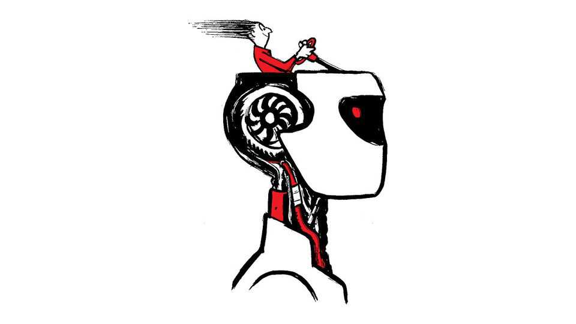
人类大脑如今已成为最稀缺且最具价值的经济基础设施。诚然，人工智能可以模仿输出，但它无法取代真正重要的东西：原创思维、伦理决策、创造力、适应力以及负责任地引导技术力量的能力。远非瓶颈，大脑反而是随着人工智能规模扩大而价值不断上升的稀缺资产。其次，米莱先生认为政府应“让出空间”，让放任的市场自由运作。这种观点是误判。公共与私人机构需要协同合作。人工智能或许能加速发展，但人类大脑才是掌控方向的舵轮。当下最需要的是学校与企业、政策制定者与高管层、繁文缛节的官僚与挥舞链锯的政客之间更紧密的协作。■
哈里斯·艾尔博士
全球脑经济倡议执行董事
旧金山
您关于明尼阿波利斯暴力事件的社论（《ICE测试》，1月31日）使用了明显不适合此类敏感议题的措辞。例如，您将ICE描述为“美国遣返机器的万能品牌”，但事实上，ICE全称为移民与海关执法局（Immigration and Customs Enforcement），是国会立法设立的专门执行移民法的机构。ICE的职能由法律明确规定，因此您将其称为“准军事化力量”并指责其“热衷于滥用武力”的说法完全不恰当。不可否认，ICE在明尼阿波利斯的职责引发了不少争议，许多居民也依法和平抗议其行动。但这种抗议并不赋予民众阻碍联邦官员的权力。
您预测特朗普的支持者会将他建立私人民兵的说法视为“被夸大其词”是正确的。所有理性人士也应持同样观点。目前尚无迹象表明美国的联邦制和权力分立制度无法继续按设计运行，数百年来这些制度已有效制约总统权力。美国是一个法治健全的国家。我常惊讶于某些在西方其他国家司空见惯的行动，例如遣返非法移民，在特朗普政府实施时却被描绘成对公民自由的侵犯。当然，部分特朗普官员的言论确实不负责任，但当合法批评被情绪化言论淹没时，往往会被轻易忽视。■
Max FergusonMelbourne 奥巴马曾遣返300万人。
那些抗议为何没有出现？奥利弗·里夫（Oliver Reif）华盛顿州斯波坎市
在《为何软件股正遭遇重创》（2月1日）一文中，您声称对企业而言，“开发软件是对其核心业务的干扰”。这在开发软件意味着支付专家编写晦涩代码以设计界面、运行流程和管理数据库的时代是成立的。但随着人工智能自动化这些任务，构建有效的技术解决方案日益意味着提出正确的问题、设定一致的目标，并为代表我们行事的人工智能代理定义适当的约束条件。企业如今需要的是销售数字劳动力而非登录凭证的技术合作伙伴。市场正在重创传统企业，因为它清楚地认识到其中的区别。
瑞安·尼科尔（Ryan Nichols）前首席产品官 Salesforce Service Cloud 红木城，加利福尼亚州
■
你将汽车产业与人工智能产业进行类比的见解非常恰当（“欧洲的DeepSeek时刻”，1月24日）。汽车制造与AI开发都是资本密集型产业，需要大量投资才能推出有竞争力的产品。然而在两者中，基础原理都广为人知且公开透明。这正是为何DeepSeek能迅速推出具有竞争力的模型，也解释了为何欧洲企业如Mistral能设计出与美国巨头相抗衡的系统。正如没有哪家汽车制造商能独占全球市场，AI领域也很难出现一家企业能长期占据全球主导地位。不同车型适合不同驾驶者，不同模型也适合不同用户。AI的发展，如同汽车工业一样，将更多由不断变化的竞争格局塑造，而非垄断主导。■
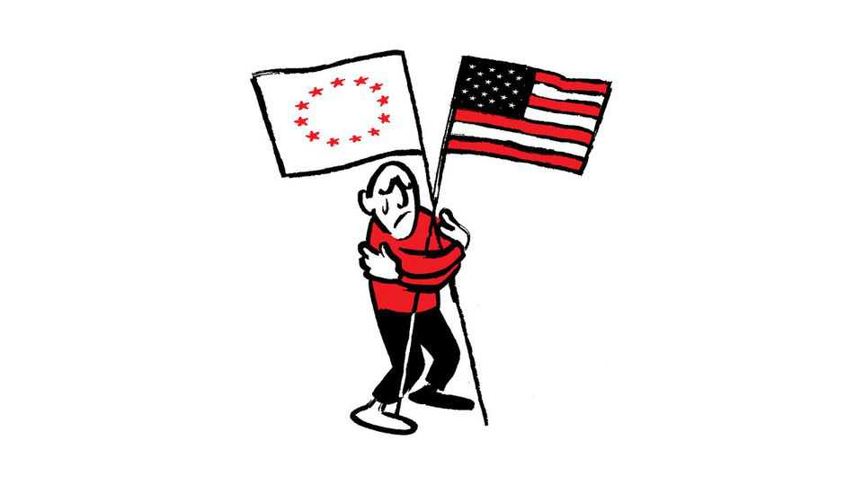
■ 如果政策制定者能抵制提前选定赢家的诱惑，那么情况就会不同。莫里茨·格罗斯-文特鲁普（Moritz Grosse-Wentrup）维也纳大学计算机科学系教授。您对卡洛·马萨拉（Carlo Masala）关于俄罗斯与北约冲突可能结果的引人深思的著作《如果普京获胜》（1月24日）的评论，重复了其最薄弱的部分：一个不切实际且居高临下的开场场景，即俄罗斯占领东爱沙尼亚城市纳尔瓦。事实上，爱沙尼亚如同其波罗的海邻国一样并非易与之辈。该国高度警觉，武器装备充足，具备快速动员能力，盟友可通过空陆海三路迅速抵达。此外，爱沙尼亚还拥有射程极远的武器，可打击俄罗斯境内纵深目标。
同期刊载的另一封信件中，拉脱维亚驻北约大使马里斯·里克斯坦斯（Maris Riekstins）也提出了类似观点，指出真正的问题不在波罗的海三国，而更西边。或许你们的书评人也该读读报纸的头版。爱德华·卢卡斯，巴尔蒂克国际安全中心总监，伦敦查理曼（Charlemagne）（1月24日）提及了伊丽莎白·库尔伯-罗斯（Elisabeth Kübler-Ross）提出的五阶段悲伤理论，用以解释欧洲与美国关系紧张的困境。库尔伯-罗斯曾详尽阐述如何应对失去亲人的痛苦。她1969年出版的突破禁忌之作《关于死亡与临终》（On Death and Dying），基于她对面临自身死亡威胁者的访谈。我曾与她一同在爱尔兰参加为期一周的研讨会，她当时明确指出，这五阶段并非线性发展。■
更准确地说，它们是人们反复穿梭的情感集群。她研究中一个或许未被充分关注的方面是，大多数哀悼者在多数时候都保有希望感。因此，跨大西洋关系在特朗普时代未必会走向终结，希望始终存在。玛丽·麦卡特纳斯，爱尔兰。我欣赏巴热特（Bagehot）1月10日关于1980年代伦敦码头区重建的专栏文章，这是玛格丽特·撒切尔最大的成就之一。作为一名米尔沃尔足球俱乐部的球迷，我可以证实，上世纪70年代末，伦敦旧码头周边地区仍是一片破败的维多利亚式建筑废墟。■
码头工会领袖杰克·达什（Jack Dash）坚决抵制现代化进程，结果萨里郡、西印度、米勒沃以及维多利亚码头等世界最大码头之一相继关闭。政治僵局主导了局势。工党执政下的英国几乎濒临破产。无能的詹姆斯·卡拉汉（James Callaghan）虽身居要职却毫无实权，也备受轻视（这听起来耳熟吗？）。伦敦内城大片区域就此衰败。1979年撒切尔夫人（Thatcher）以全新思维上台，伦敦码头区开发公司（London Docklands Development Corporation，支持米勒沃）的成立推动了发展。诚然，一些人对拔地而起的光鲜钢玻璃摩天大楼及成千上万高薪年轻专业人士的到来心存不屑。但事实胜于雄辩。毫无疑问，金丝雀码头及码头区的重建是惊人的成就。■
英国如今亟需另一次社会经济重置，但政治热情何在？David DoeOxted，苏赛克斯郡
我读到《巴特勒比》（Bartleby）专栏关于超市自助结账机的寓言（1月17日）。每当我站在无法独立完成结账的排队队伍中，总会看到自助结账机旁的主管望向我与那些不愿被机器取代的婴儿潮世代，眼中充满无奈。我试图躲在最近的便利店后方以减轻他的情绪负担，但我的身高和白发让这招失效。年事已高，容易被搞糊涂，我必须保护自己脆弱的理智。这意味着要避开那些自动语音不断催促我将商品放入购物袋的场景——它们早已在袋中了。Margaret McGirr（康涅狄格州格林威治）
超市科技是一项大笔资本支出，预期回报可观。■
直到技术在商店实际运行，人们才意识到由此产生的损失有多大。我认识的一位前银行家曾通过自己能偷窃多少商品来比较不同零售商的收银系统。理查德·沃斯利（Richard Worsley）奇切斯特（Chichester）■
§010 亚洲原题：An election will decide whether democracy returns to Bangladesh · 板块：Asia · 栏目：亚洲
塔里克·拉赫曼的防弹巴士从孟加拉国首都达卡向北缓缓驶出 每几英里就减速一次 以便让等待的粉丝们能看清他的身影 热情的支持者冲上马路拍照 当政客的车队接近时 女性聚集在纺织厂的窗边 他本人在前往北方城市迈门辛格的集会途中 大部分四小时的行程中都优雅地向人群挥手 返回时也如此 ■
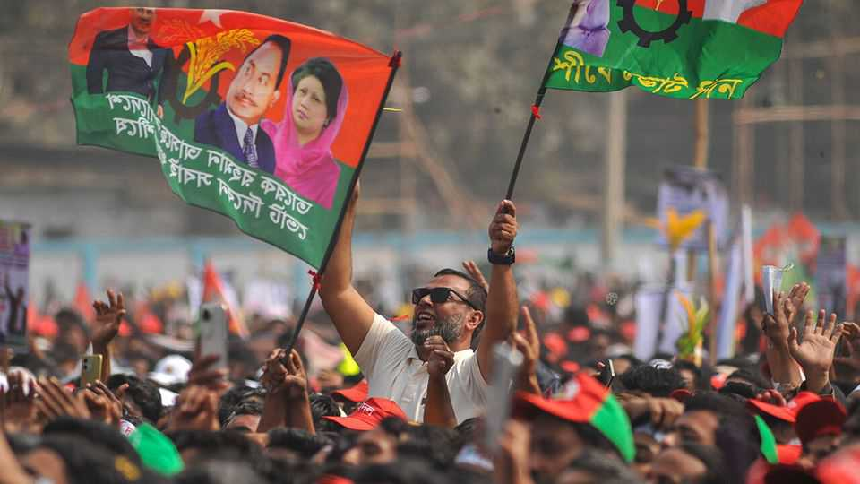
拉赫曼先生——这位60岁的著名政治家族后裔——在2月12日的全国大选中成为孟加拉国总理的领跑者。此次选举将是自18个月前革命以来的首次，当时Z世代抗议者推翻了谢赫·哈西娜领导的人民联盟长达15年的暴政与腐败统治。民主回归有望改善治安、安抚国内外投资者，并开始修复孟加拉国与印度之间紧张的关系。然而，这场选举似乎不太可能实现革命者所期望的彻底政治革新。孟加拉国自2008年谢赫·哈西娜上台以来，尚未举行过一次真正意义上的选举。该国1.28亿选民中，约有40%从未有机会投下真实选票：“在我人生二十年里，我的选票从未被计算过。”达卡智库BIPSS的沙菲克·穆尼尔如是说。■
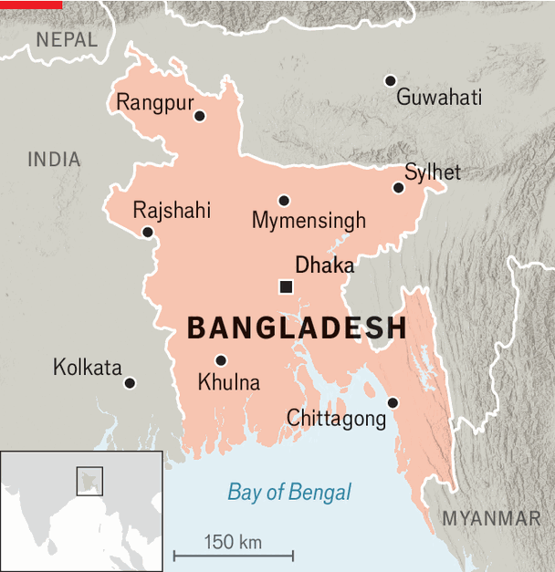
首都道路挂满竞选横幅。为符合新选举规则，大部分横幅采用黑白印刷。监督此次选举的最终职责将由孟加拉国看守政府承担，该政府自革命以来由诺贝尔和平奖得主穆罕默德·尤努斯领导。对政府表现的评价分歧巨大，但多数人认同其稳定了陷入崩溃的经济。临时政府已与政界人士合作起草改革方案，旨在防止孟加拉国再度陷入专制。改革内容包括设立上议院及限制总理任期不超过十年。“各地质疑者曾告诉我这一进程注定失败，因为各政党不会彼此对话，只会对你大喊大叫，甚至扔椅子。”阿里·里亚兹（Ali Riaz）是一位主导讨论的学者如是说。
事实上，孟加拉国几乎所有政党都支持这些提案。这些提案将在选举日提交给选民进行公投。假设提案通过，确保这些变革写入法律的责任将落在下一任领导孟加拉国的政党身上。人民联盟在临时政府禁止其参与选举后，已不再参与选举。然而，那些在推翻临时政府中发挥最大作用的学生激进分子却难以形成统一战线。取而代之的是，在孟加拉国过渡期表现最突出的两个政党。其中最引人注目的是伊斯兰教法党，这是一个伊斯兰主义组织。■
谢赫·哈西娜执政期间该党被禁，但自她逃往印度后却迅速复兴（印度接纳她避难的决定激怒了孟加拉国人，这也是两国关系日益紧张的原因之一）。孟加拉国超过90%的民众信奉伊斯兰教；在多年专制统治后，许多人希望政治中能有更多宗教虔诚。但布鲁塞尔智库“危机集团”（Crisis Group）的托马斯·基恩（Thomas Kean）认为，该党新获得的支持“并非因其伊斯兰主义属性，而是尽管其伊斯兰主义属性”。该党坚称将温和执政，为全体孟加拉人服务。但其势力扩张已令城市中产阶级恐慌。他们注意到该党尚未推出任何女性候选人。该党曾试图淡化其希望限制孟加拉国女性工作时长的提议，但进展困难。■
■ 人民联盟（Awami League）此前从未在议会中拥有超过18个席位，其执政经验尚不充分这一点也尚不明确。该党的一些政策听起来既昂贵又缺乏可行性。所有这些都为拉赫曼（Rahman）打开了机会之门。他的孟加拉国民族党（BNP）目前在民调中领先。多年来，该党由其已故母亲谢赫·卡莉达·齐亚（Khaleda Zia）领导；在此之前，该党由她的丈夫——一位被刺杀的孟加拉国总统——领导。在齐亚执政期间，民族党于1990至2000年代三次赢得政权，但其统治往往并不光彩。2006年，该党似乎即将赢得选举，但军队介入打断了这一进程。拉赫曼并未正式在母亲的政府中任职，但大多数孟加拉人仍视其为权力核心人物。
2008年和2009年泄露的美国外交电报中指出，他“被广泛认为是孟加拉国最腐败的个人之一”，并称他“以频繁且公然索贿而臭名昭著”。当谢赫·哈西娜（Sheikh Hasina）领导的政府上台后开始打压反对派时，拉赫曼（Mr Rahman）已逃往英国。他在伦敦自设流亡地度过了17年，仅在12月短暂返回孟加拉国。在竞选巴士上被问及时，拉赫曼为本党过往记录辩护。他坚称，自己在上次执政期间开始遏制腐败。他否认过去有不当行为的指控，称谢赫·哈西娜政权提出的指控纯属捏造。自革命以来，孟加拉国新独立的法院已推翻了他的定罪。这在一定程度上使他得以重返故土。■
他承诺，但未透露细节，若当选将支持投资者创造就业机会。他表示希望更多孟加拉国年轻人接受培训，以帮助他们获得海外高薪工作。他承诺将开凿20,000公里运河以解决缺水问题，并每年种植5000万棵树。他认为自己能与唐纳德·特朗普合作：美国总统“相当务实、相当现实——他是个商人”。拉赫曼强调，他的新政府将确保言论自由、维护秩序并打击腐败。他表示2024年杀害抗议者的责任人必须受到法律制裁。但他坚称不会动用国家权力追查政治对手。他指出革命证明了那些“对民众缺乏计划”的政府会遭遇什么下场。“报复不会对任何人有益。” ■
孟加拉国的商界领袖和大多数自由派人士都支持拉赫曼先生。自回国以来，他发表了大量符合他们期望的言论（尽管多数人仍选择私下交谈，以防另一方获胜）。观察人士表示，这位从伦敦归来的人似乎与他们之前认识的不同。一位务实的本地分析人士指出，无论如何，替代方案都令人难以接受。他说，选择在于孟加拉国要么获得一个面向未来的政府，要么最终陷入一个“塔利班式”的政权。■
§011 亚洲原题：Newborn parties are scrambling Japanese politics · 板块：Asia · 栏目：亚洲
日本政坛长期以来犹如一条笔直的主干道。多数政治力量依附于长期执政的自由民主党（LDP）；不满现状者则流向左翼意识形态阵营。但如今的政治版图正日益呈现出东京市中心著名多向交叉的涩谷十字路口景象，新兴政党正朝不同方向疾驰而去。在2月8日举行的众议院选举中，参选的十一大政党中仅有三个成立于2012年前（第四个则是由两个历史悠久的政党近期合并而成）。涩谷十字路口本身正是观察政治交通流向变化的绝佳地点。■
上周短短一天内，三个颇具影响力的新兴政党领袖——极右翼“自民党”（Sanseito）、民粹主义“民进党”（DPP）和科技乐观主义“未来党”（Mirai）——在东京举行集会，试图在周末的喧嚣声中争取关注。不远处，新左翼组织“令和新选组”（Reiwa Shinsengumi）的激进分子也聚集于此。这些新兴势力强调自身的新颖性，反映出人们对变革日益增长的需求。这些新生政党也普遍对日本人口持续萎缩、老龄化问题感到焦虑。然而，他们对未来却提出了截然不同的方案。民进党领袖田中裕一主张通过大幅减税，将“焦虑的一代”转变为“充满希望的一代”。而未来党领袖安野隆弘则认为机器人将拯救日本，他呼吁加快人工智能、机器人和自动驾驶技术的普及，以应对劳动力短缺问题。■
相比之下，新党（Sanseito）成员浅井孝行（Kamiya Sohei）抨击移民，推崇德川家康（Tokugawa Ieyasu），这位17世纪初统一日本的幕府将军开启了长达260年的相对和平与严格闭关锁国时代。此类政党规模仍较小：最大的是日本创新党（Ishin），在465席的众议院中仅获34席。然而它们凭借熟练运用社交媒体，已能产生远超其规模的影响力。日本创新党（Ishin）已成为自民党（LDP）的新盟友，民进党（DPP）则与执政联盟谈判推动特定税收政策，新党（Sanseito）则将移民问题推至舆论焦点。新兴势力要宣称选举成功，不必夺取政权——只需持续推动议程即可。■
§012 亚洲原题：An Israeli visit to the site of the Bondi attack tests Australia · 板块：Asia · 栏目：亚洲
澳大利亚犹太领导人声称，他们的社区是散居犹太人中最具有锡安主义色彩的群体。澳大利亚犹太人前往以色列的频率高于全球其他多数犹太社群，他们也更可能拥有在以色列生活的亲友。因此，一些犹太社区领导人对邦迪海滩12月14日发生的恐怖袭击感到悲痛，请求政府邀请以色列总统艾萨克·赫尔佐格前来共同哀悼，这或许并不令人意外。赫尔佐格将于2月8日抵达澳大利亚，并预计直接前往邦迪。■
澳大利亚官员因安全担忧，对访问透露的信息极少。但观察人士认为，他们可能另有隐情。此次访问在该国仍因两年多的以巴冲突而陷入新的争议。澳大利亚境内最致命的恐怖袭击已让部分犹太社区成员感到心碎。邦迪一名年轻犹太人告诉《经济学人》，他现在感觉在澳大利亚不再安全，正考虑移民美国。拉比诺阿赫·孔切波尔斯基表示，也有不少人因此重新拥抱自己的犹太身份。他刚帮助一位世俗犹太家庭在门框上首次贴上门框上的犹太教符文。
新南威尔士州州长克里斯·明恩斯表示，为保障公共安全并协助犹太社区哀悼，州政府将在以色列总统访澳期间禁止悉尼大部分地区举行抗议活动。根据在Bondi袭击后紧急通过的新法律，各州有权在恐怖袭击后最多90天内禁止集会。针对该法律的宪法挑战案正在法院审理，但听证会将安排在总统访澳之后。一个亲巴勒斯坦团体表示仍将计划在悉尼市中心的州议会大厦前游行。警方已做好应对冲突的准备。联邦及州级立法者很可能是引发更多争议的源头。至少两名明恩斯所属工党后座议员计划加入游行队伍。■
在澳大利亚联邦议会，也有数名议员对邀请赫尔佐格访澳表示担忧。他们指出，其中一项理由是赫尔佐格在以色列近期战争初期曾签署一枚将被投掷至加沙的炸弹。此次访问对安东尼·阿尔巴内塞领导的工党政府而言是一次考验。12月21日，阿尔巴内塞在邦迪举行的纪念仪式上遭到嘘声，这一场景也呼应了本雅明·内塔尼亚胡在袭击事件后不久对阿尔巴内塞9月承认巴勒斯坦国决定的批评。赫尔佐格可能在私下重提这一指控，但在公开场合大概率会避免。若一切顺利，阿尔巴内塞希望此次访问能表明他已重新获得犹太社群的信任。然而，若访问引发争议，可能动摇其党内支持基础，并影响与犹太社群的关系。■
无论发生什么，阿尔巴内塞（Anthony Albanese）都将比他的保守派对手显得更从容。袭击事件的余波已使右翼反对联盟陷入分裂，该联盟由两个政党组成，一个代表城市及郊区选民，另一个则在澳大利亚农村地区更具影响力。双方在是否支持工党提出的、旨在简化禁止仇恨犯罪组织立法的提案上未能达成一致。该法案在部分郊区保守派支持下通过，反而提升了民粹右翼政党“国家党”（One Nation）的声望，该党目前在民调中仅次于工党。围绕加沙冲突和邦迪袭击事件的情绪化辩论已对社会凝聚力造成冲击。■
前澳大利亚中右翼政府领导人马尔科姆·特恩布尔表示，他所代表的邦迪犹太社区曾是其重要选区，他称澳大利亚是一个多元文化国家，但“我们不能让外国战争在澳大利亚境内进行。” ■
§013 亚洲原题：A booming gig economy is formalising India’s labour force · 板块：Asia · 栏目：亚洲
印度城市居民比大多数人更习惯于想要什么就立刻得到什么，只要有钱。他们早已习惯于让便当小贩送来午餐，如今派对零食、新款iPhone或一块肥皂也能在几分钟内送到城市居民家门口。印度零工经济繁荣的秘诀是什么？几乎无限的廉价劳动力池。像Blinkit、BigBasket和Zepto这样的本地配送应用都依赖于一支压力巨大的零工劳动者队伍。食品配送应用Swiggy声称，在2025年除夕夜，其司机们集体行驶的距离相当于从地球到月球再返回八次。
但事情并不容易，据印度政府智库NITI Aayog预测，零工经济从业者人数将从2020-2021年的770万增至2029-30年的2350万。这引发了关于该行业配送员待遇的激烈全国性争论。社交媒体上充斥着关于该问题的帖子与反驳帖。暗访记者甚至有几位政客也注册成为配送员，旨在揭露骑自行车和摩托车配送员所谓恶劣的工作条件。有位作家估算，扣除燃油成本后每小时仅赚取34卢比（约合40美分），但未计入手机上网费用。零工工作缺乏浪漫色彩，算法如同无情的老板，通过处罚手段催促并约束配送员。■
12月25日，约4万名骑手发起罢工，希望获得更安全的工作环境、更好的薪资以及了解算法决策机制的透明度。部分骑手醒来时发现自己因违规被封号。但尽管有诸多轶事和抗议，外卖平台并未让印度劳动者处境更糟。一项由美国国家经济研究局（NBER）发布的最新研究论文显示，印度、印尼和肯尼亚的零工经济从业者相比，印度骑手的状况反而更乐观。研究发现，大多数印度外卖骑手并非从全职正式工作转行而来，但超过半数最终进入正式就业。平均而言，28岁男性骑手以兼职形式从事零工工作，将其视为通往更好生活的跳板。目前，全职司机的月均净收入仍高于临时工。■
事实上，零工经济正在将全球最混乱的劳动力市场之一逐步制度化。印度不同于欧洲或美国，后者拥有成熟的经济体系并受复杂劳工保护制度约束。在西方，人们将零工经济的“灵活性”视为对更宽松甚至零监管的委婉说法。而在印度，情况恰恰相反。最初就有超过90%的岗位属于非正式就业。但公众对配送员困境的关注促使政界人士采取监管行动。去年年底，新的劳动法为数字零工劳动者提供了法律保障和社会保障。1月13日，印度劳工部长要求配送平台公司放弃其普遍但极其鲁莽的“十分钟送达”承诺。换句话说，零工经济并未加剧印度贫困人口的日常辛劳，反而将其变成了公众讨论的焦点。■
在接下来的十年内，印度需要将8400万年轻人纳入劳动力市场，而它却处于一种奇特的境地：它实现了全球主要经济体中最高的GDP增速，但30%的毕业生却失业。其结果之一是，毕业生获得工作的可能性反而低于受教育程度较低的人群，后者通常能在非正式部门找到工作。另一个现象是，NBER的研究论文指出，零工经济从业者中拥有高等教育学历的比例，已高于印度平均水平。尽管毕业生所在领域往往缺乏招聘，但零工经济却几乎没有准入门槛。令人不安的是，印度混乱的道路上，这些平台软件甚至尚未做好核查零工司机驾照的功课。■ 请订阅我们的免费周报《Essential India》，以掌握印度最新动态。
§014 美国情报协调者影响力式微原题：The outsize influence of America’s admiral in · 板块：Asia · 栏目：亚洲
在唐纳德·特朗普声称结束的八场冲突中，乍得与柬埔寨去年7月的短暂边境冲突乍看之下是最清晰的案例。据美国总统称，特朗普曾致电两国领导人，威胁要征收天文数字的关税，除非他们停止开火。据称不久后，他们就真的停火了。但这场冲突只是两国百年恩怨的最新一章，随时可能再度爆发。因此，海军上将Sam Paparo乘坐蓝白相间的空军专机多次访问马来西亚，与泰国和柬埔寨的军方首脑会面，敦促他们停止争执。
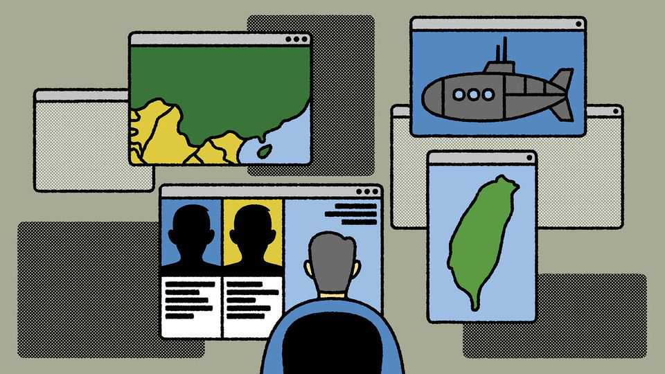
■
美国在亚洲的高级军官的干预是平息争端的关键，直到特朗普十月飞往马来西亚主持和平协议的签署。帕帕罗上将（Admiral Paparo）的低调外交是其向特朗普展示自身价值的一种方式。若这位职业战斗机飞行员要应对美国更大的问题——遏制中国对台湾的攻击——保持总统及MAGA世界其他人的信任至关重要。在这方面，他近年来一直是美国武装部队努力的推动者。美国印太司令部（Indo-Pacific Command）总部位于檀香山（Honolulu）的总司令在任何政府中都是举足轻重的人物。■
海军上将（这总是由一位海军上将担任，反映出海军在这一地区的广泛作用）负责横跨地球一半陆地表面和十几个时区的军事行动——从宝莱坞到好莱坞，正如一位前任海军上将曾喜欢说的那样。帕帕罗海军上将在亚洲变得异常显赫且有影响力。这在一定程度上源于特朗普周围的党争，这让其他华盛顿的高级官员紧贴总统。如今这位海军上将必须应对三大挑战。首要任务是安抚亚洲盟友的担忧，确保美国不会背弃对盟友的承诺，尽管特朗普正将注意力转向委内瑞拉和格陵兰，同时考虑与中国达成重大协议，并且经常公开蔑视欧洲的许多北约盟友。
帕帕罗海军上将在该地区曾担任过多个指挥职务，因此与许多军方首长保持着旧日情谊。尤其是在白宫正在召回并缩短大多数由乔·拜登任命的驻外大使任期的当下，这一点显得尤为重要。他提供了罕见的持续性案例。第二个挑战是维持与一位反复无常的总统及其幕僚，尤其是国防部长彼得·赫格赛特的良好关系。即便在正常行政体系下，印太司令部司令相较于驻欧洲和中东美军将领，也往往难以获得所需资源。特朗普政府将美洲置于亚洲之上的国家安全战略更放大了这一风险。该司令部的资源可能被挪用于其他突发状况。
其航母和防空导弹部队经常被派往中东；对西半球的关注使问题更加严重。但帕帕罗海军上将的政治智慧帮助他减轻了损害。这位海军上将面临的最大挑战是确保美国的战争计划不落后于中国军队的快速现代化以及技术变革抵消美国部分优势。与美国其他指挥官相比，帕帕罗尤为关注将指挥系统智能化，试验加速冲突中决策的工具，并确保燃料和弹药能迅速抵达所需地点。其他项目则聚焦于在远程导弹和自主武器领域赶上中国。■
在1月由檀香山智库太平洋论坛（Pacific Forum）主办的会议上，一位海军上将接待了数百名军官、官员、国防专家、科技高管及盟友代表。在威基基海滩附近的无窗会议室里，他们连续两天进行了深入讨论，探讨如何打赢一场针对“对手”（普遍指代中国）的战争。讨论内容理性务实，不回避现实。“他每晚入睡前都在思考下一場重大战争的胜负，”一位敬佩他的同僚海军上将表示，“他比任何人都更深入地推演过战争场景。”若一切顺利，他的推演或许将无用武之地。■
§015 中国原题：Has launched a huge free-trade experiment · 板块：China · 栏目：中国
中国官员对将热带岛屿海南打造为全球最大自由贸易港（FTP）的决定充满热情。他们称这一举措自12月实施以来，是国家向外国投资者开放市场的一大“实质性飞跃”。在全球贸易紧张局势背景下，他们称此举证明中国正摆脱美国主导的保护主义趋势。海南历来不乏此类乐观预期，却始终未能超越其沙滩和五星级酒店的吸引力。这次会有所不同吗？ ■
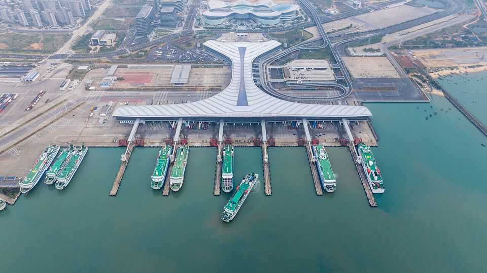
2018年，中国领导人习近平首次宣布海南自由贸易港计划时，一些观察家曾猜测他是否意在打造一个类似香港的新自由港——作为外国人进入中国市场的重要门户，同时也是与中国经济深度绑定的金融中心。目前海南的雄心更为务实，尽管该计划覆盖区域面积巨大：海南岛面积几乎与台湾相当，是香港的30倍。但海南正迈出关键一步。新政策意味着74%的商品可免关税进入海南岛，只要这些商品在海南进行加工且增值至少30%，即可运往内地享受零关税待遇。为吸引投资者和人才，海南将对战略性产业企业及高收入群体的税率上限设为15%，相较内地的35%和45%大幅降低。■
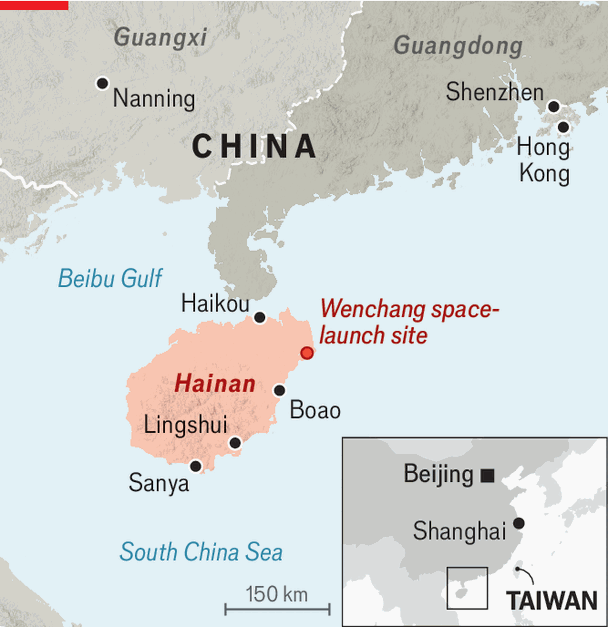
海南也旨在简化跨境资本流动，但其金融体系仍将比自由开放的香港更为受限。包括美国在内的86个国家公民可免签入境。若海南要在21世纪中叶实现成为“全球有影响力的国际金融中心”的目标，就必须努力摆脱其作为边陲之地的声誉。自帝国时期以来，海南便因政治人物和诗人触怒朝廷而被贬谪至此。1984年，中央政府允许海南进口其他地区受限的外国商品，该岛随即因大规模牟利丑闻而臭名昭著。四年后的1988年，海南被从广东划分为独立省份，迎来重塑形象的机会。
海南被指定为全国唯一的省级经济特区，获授权试点自由化经济改革。但成效参差不齐。其旅游业蓬勃发展，中国寒冷北方居民及俄罗斯游客冬季蜂拥而至。春季则吸引全球政商界精英参加博鳌论坛——中国版的达沃斯。航天爱好者与冒险者也纷纷前往海南，中国最强大的火箭从其海岸发射。但该岛经济表现低迷。投资热潮后相继出现房地产泡沫与废弃主题公园。2024年人均GDP约76,000元（10,900美元），低于中国其他多数经济特区及全国平均水平（见图表）。该省当年GDP约1140亿美元，是中国最低之一。■
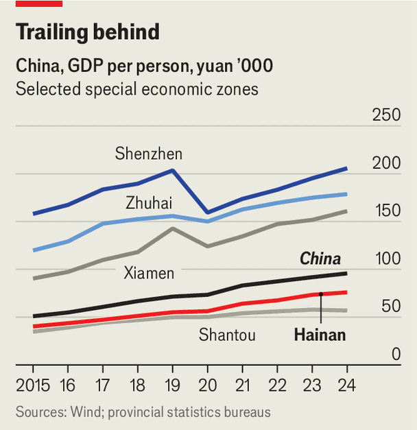
与繁华富庶的深圳相比，中国改革开放的前沿阵地——毗邻香港的深圳特区，海南显得荒凉：横亘在海南与大陆之间的20至30公里海域缺乏基础设施（图中为海口港，货物由此转运）。但这种孤立，以及海南远离北京2300公里外强势官僚的地理距离，或许反而成为金融开放试点计划（FTP方案）的优势。海南自视为地理条件适合进行改革试验的区域，这些试验可避免对其他地区造成干扰。其中一项备受关注的试点措施是去年推出的互联网开放政策，允许企业申请更宽松的网络访问权限，使用户得以访问如谷歌和X等在大陆被屏蔽的网站。■
北京的领导人或许认为，海南在风险领域稍作尝试可能带来好处：他们希望向投资者传递信号，表明中国仍在推进改革，尽管经济增长放缓。习近平称自贸港的设立是“推动开放型世界经济的里程碑”举措。该项目获得了众多支持者。清华大学的李大奎教授（政府顾问）表示：“这个最年轻、最勇敢的学生被允许跳入深水区，那么整个班级都会关注海南会如何行动。”海南希望其新贸易规则的受益者之一是医疗旅游，为此设立了名为博鳌希望城的“特殊医疗区”。在椰林环绕的田野间，私立医院纷纷兴起，它们可使用在海外获批但未在中国获批的药品和器械。但部分医院仍在努力吸引顾客。
■穿蓝色运动服的患者每年会员费至少要支付50万元，穿橙色运动服的患者则至少要支付100万元。海南的度假式客房已被富裕的中国游客预订一空。加工产业对自由贸易港表现出兴趣。知名冷饮品牌美汁源（Mixue）已在该地开设工厂，因其可免税进口咖啡豆并加工成饮料，再销往中国其他地区时无需额外关税。通过旗下子公司太古太平洋公司（Swire Pacific），一家香港企业也在建设新的可口可乐瓶装厂，面向中国市场。但一些外国商界人士表示，海南仍难以与大陆已有的制造业中心竞争，缺乏人才和高度整合的供应链。“这里缺乏商业吸引力，”一位被高级官员鼓励投资海南的汽车业高管表示。
为应对这种印象，海南正组织大陆潜在投资者赴岛考察。在参观后，雷军将视频游戏设计公司从福建迁至海南东南部陵水县。他表示，自己被这里的气候和补贴所吸引。雷军的员工们则在政府2009年启动的“国际旅游岛”建设中建成的别墅中租住工作，这些别墅曾一度荒废，成为海南命运起伏的见证。雷军表示招聘困难：他和其他海南的许多老板一样，必须寻找愿意从大陆迁居的高素质人才。不过未来或许有新的人才来源：沿路，政府正在建设26所大学校园，分别来自英国、加拿大以及中国各地，其中部分校园已开始运营。■
对外国企业而言，教育、医疗等服务业可能比制造业更具吸引力，至少在初期如此。迟福林（Chi Fulin），74岁，是1987年从北京派往海南的首批官员之一。现任中国（海南）改革发展研究院院长的迟福林表示，海南将引领中国服务业的开放进程，而这一领域长期对外资企业封闭。目前，海南对外资在服务业领域的投资负面清单最短。毕生致力于海南改革的迟福林对自由贸易港（FTP）项目持谨慎乐观态度。■
他用一个比喻来说明这一点，即当地人即使在寒潮来袭时也不愿放弃热带服饰。"有人可能会说，海南（Hainan）——那里的人上身穿羽绒服，下身穿人字拖——具有很强的惯性，"他说。"改变这些习惯是一个长期的过程。但如果整体环境发生剧烈变化，比如下大雪，你还能穿人字拖吗？"在海南，寒风如果带来改革的自由，或许会受到欢迎。■
§016 中国原题：China’s graduates face a whole new set of gruelling tests · 板块：China · 栏目：中国
2024年左右，王先生作为研究生入学考试辅导老师，发现自己的班级学生数量骤降超过一半。起初他以为是自己的教学出了问题。但与同行交流后，他发现这种现象普遍存在。王先生还随意发布了一则提供国家公务员考试辅导服务的广告，结果却收到数百条回复。他新开设的班级涌入了大量顶尖人才，包括两名从香港毕业后专程飞来的学生。
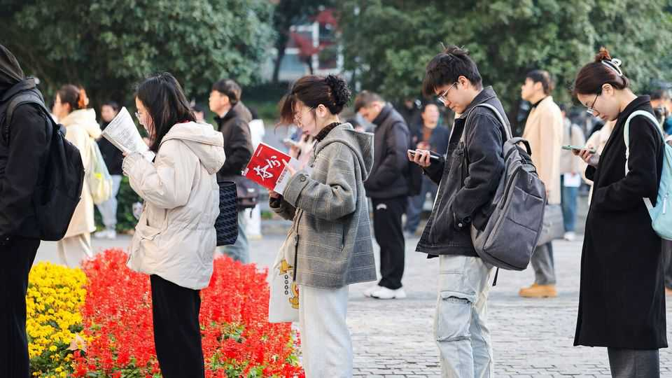
“见鬼了，”王先生心想，“风向变了。”他说得没错。
■
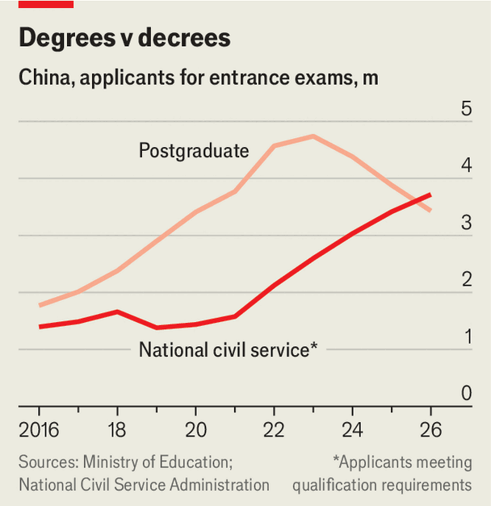
中国年轻一代正在重新思考完成本科学习后的选择。2023年至2026年间，报考硕士课程入学考试的人数减少了三分之一，从470万降至340万。与此同时，2021年至2026年间，报考（并通过资格审查）国家公务员考试的人数翻倍至370万，创历史新高。如今，报考公务员考试的兴趣首次超过报考硕士考试（见图表）。硕士学位的吸引力在于其理论上能提升人力资本，同时延迟进入职场的时间。但公务员体系提供的回报更为直接：稳定但缺乏活力的就业机会。24岁的周 Stella（郑）参加了公务员考试的辅导班。■
她连续数月每天从早上9点开始学习，直到晚上9点才回到宿舍。她抱怨道：“整天坐着屁股都疼。”去年，约20%的硕士课程入学考试考生被录取。国家公务员考试的竞争更为激烈。今年共有38000个职位空缺，意味着到年中完成笔试（包括许多研究生）的考生中，约99%的人最终都会失望。26岁的马女士（Ms Ma）正在攻读法律硕士。她班上约80%的同学计划参加公务员考试。她形容这是一场“混战”（拥有硕士学位对公务员职位帮助不大，多数职位并不需要）。■
由于成功几率极低，许多人选择参加省或市级公务员考试作为备选，尽管这并非体面的出路。原因显而易见：就业市场持续低迷。马女士来自东部省份山东，她从未想过自己会对公务员工作感兴趣。然而在一家小公司实习期间，她改变了主意：同事常因薪资发放不及时而抱怨。当中国经济繁荣时，政府工作被视为平淡无奇（“若成为公务员，你便能预见自己的一生”，这是常见说法）。如今经济放缓，公务员岗位却备受青睐。来自西南地区重庆的周女士收到京东集团（JD.com）提供的年薪30万元（约合4.3万美元）采购部门工作邀约，但她选择放弃，转而尝试公务员考试。
年轻人越来越倾向于选择确定性而非高薪。2020年至2022年期间，中国实施严格的“零新冠”政策，许多学生选择考研以推迟求职，应对经济动荡（在中国，硕士通常需要三年时间）。此后报考硕士研究生的人数开始下降。如今愈发清晰的是，继续深造的回报正在递减。2024年智联招聘平台（Zhaopin）的一项调查显示，春季招聘阶段，44.4%的硕士毕业生已获得工作机会——比本科生低1个百分点，比接受职业培训者低12个百分点。人们或许会预期，许多落榜公务员考试的考生会转向攻读硕士。但许多毕业生却担心就业市场可能进一步恶化。■
一些人认为，尽早行动比拖延更好。因此，公务员考试报名人数上升与研究生课程需求下降，实则是同一枚硬币的两面：经济疲软。这可能演变为一种自我强化的趋势：越是有才华的年轻人放弃私企转投体制内，中国经济的活力就越会减弱。 ■ 订阅者可注册我们的新周刊《Drum Tower》，了解世界如何看待中国，以及中国如何看待世界。
§017 中国原题：Why more foreigners are seeking health care in · 板块：China · 栏目：中国
中国 医疗检查
到访中国的外国游客常常对中国的高铁和璀璨的天际线赞不绝口。不过，其陈旧的医疗体系却鲜有人称赞。上个月，一位英国女性Amie（阿米）因在社交媒体上发布一段对北京公立医院的赞誉视频引发热议。她因持续的胃痛且在英国看医生需长时间等待，选择前往曾居住过的中国。在那里，她仅用2,800元（约400美元）便完成了检查、诊断和治疗，即便包含机票费用，仍比英国私立医院的费用低。她说。
■
艾米的视频在中国社交媒体上走红后，其他外国人也纷纷分享自己在中国获得便宜高效医疗服务的经历。十年前，中国官员设定目标，希望到2030年将中国打造为具有国际竞争力的医疗旅游目的地（如同韩国：富裕的中国公民常前往该国接受复杂治疗或整容手术）。如今，中国正吸引越来越多的外国患者。据中国媒体报道，去年中国医院接待了近130万名外国患者，较2022年增长近74%。市场研究机构Market Research Future预测，中国医疗旅游市场规模预计将在2025年从约12亿美元增至2035年的34亿美元。尽管许多中国医疗机构仍存在设施简陋的问题，但近年来其顶尖医院已引进了世界级的医生和先进设备。■
中国在某些择期手术（如激光眼手术）方面处于世界领先水平。这些手术通常比西方医院更便宜，许多医院还配备英语服务人员。自2023年以来，中国迅速扩大了免签入境计划（本月宣布英国游客将被纳入其中），这使得临时赴华体检变得更加便捷。目前在华就医的外国人大多是常住居民，而非医疗旅游者。但上海、北京等大城市的医院正开始接收更多来自海外的患者。越来越多的越南人选择前往中国南方的医院接受治疗，俄罗斯人则越境前往东北部的医院就医。■
官方媒体将此视为该国对海外患者日益增强吸引力的积极信号。“与一些西方国家相比，中国的医疗体系能提供更高效且负担得起的医疗服务，”一位研究人员在接受《中国日报》采访时表示。这类信息与当前将美国描绘成一个危险之地的宣传运动相呼应，那里一旦患上重病就可能让人倾家荡产。但一些中国人担心中国医疗体系可能面临新的压力，该体系主要由公共资金支持。中国医生工作强度极大，医院门口常排起长队。“外国人来中国享受中国纳税人的福利不公平，”一位Amie视频评论者表示。“外国人会抢占我们的医疗资源吗？”一篇微信文章问道。■
这些担忧似乎被夸大了——公立医院国际医疗部门仅被允许使用10%的容量。但这是中国民族主义者罕见地对本国成功案例表示不满的案例。■ 订阅者可注册我们的新周刊《鼓楼》，了解世界如何看待中国，以及中国如何看待世界。
§018 中国原题：What is behind Xi Jinping’s sweeping military purge? · 板块：China · 栏目：中国
“一张照片可能是某种迹象的早期信号，需要进一步研究。”1971年，研究毛泽东时代的中国学者罗德里克·麦克法夸尔（Roderick MacFarquhar）在一篇文章中如此总结如何解读中国政治。当时正值冷战高峰，“北京学”（Pekingology）盛行，涉及对措辞和图像的细致分析。半个世纪后，麦克法夸尔的理论再次获得关注。在习近平领导下，精英政治本就不以清晰著称，如今更显晦暗，迫使分析人士重拾旧工具。上月张又侠（Zhang Youxia）和刘振立（Liu Zhenli）两位将军被清洗的事件，正是这种回归过去的趋势的例证。
两位将军（the two generals）陷入麻烦的首个明显迹象出现在他们缺席一档关于近期中国共产党会议的电视报道时。四天后，国防部宣布他们正接受调查。一些分析人士认为，甚至更早便有视觉线索预示了这场风波：张将军（General Zhang）去年近一年前在一次演讲结束时背对习近平（Mr Xi），或许暗示两人之间已出现裂痕。从文本内容来看，他们可能涉及的错误性质存在诸多解读空间。军队报纸列出了五项罪名，其中一条尤为引人注目——两位将军“严重践踏”了赋予习近平（Mr Xi）对中国人民解放军（PLA）最终指挥权的主席制度。许多观察人士据此认为，这两位将军试图削弱习近平的权威。■
学者们再次从如此有限的证据中推断信息，这表明党变得更加谨慎。自20世纪70年代末中国改革开放以来，分析人士、高管和外交官得以更深入地接触权力掮客，他们还能在各派系之间进行协调。政治局常委会，作为权力顶峰，成员人数在五到九人之间。外部人士或许能与其中少数人或其下属建立联系，拼凑出政策和人事安排的粗略模型。习近平压制集体领导体制的结果是，如今只有一个人至关重要，而他并未泄露任何秘密。因此，北京学再次成为主流。但这种方法真的有效吗？此类分析存在诸多陷阱。其中一个问题是，由于可见的线索如此稀少，人们很容易将它们全部联系起来，即使这些联系可能是虚假的。
《经济学人》特约撰稿人K. Tristan Tang为华盛顿智库詹姆斯敦基金会撰写的一篇分析文章，提供了对军方清洗的另类视角。通过梳理官员讲话及官方媒体的相关报道，他得出结论：张将军未能达到习近平主席所谓明年即刻准备入侵台湾的要求。或许特里斯坦·唐的判断是正确的，但其结论主要建立在两人对“军事斗争”表述的细微差异上。若此次清洗真与台湾有关，为何习近平去年却解除了另一位将军贺维东的职务？贺维东曾成功指挥围绕该民主岛屿的高强度军事演习。这再次凸显了所谓“北京学”的局限性：根本无法确切知晓谁获得了何种权力。关于中国权力政治的理论层出不穷。
确实，可能比以往任何时候都更多，这归功于社交媒体的普及以及全球各地日益壮大的海外华人社群，其中一些人沉迷于政变幻想。如果数年后能评估谁的判断正确，至少可以为未来的可靠性提供一些参考。然而，中国的不透明性已成痼疾。若要打开习近平执政时期的档案，可能需要数十年，甚至永远无法实现。视觉线索或许最难解读。关于胡锦涛——一位前领导人——在2022年一次电视直播的党会议中，因似乎与面前的官方文件发生争执而被护送离场的场景，引发了大量讨论。对于那些寻找中国高层分裂迹象的人来说，这一场景极具吸引力。然而，官方媒体给出的解释——胡锦涛健康状况不佳——在考虑到他混乱的举止后，似乎更为合理。■
吴国光曾短暂在政府工作，后在1980年代担任官方记者，他回顾自己曾经犯过的错误。如今已是斯坦福大学教授的吴国光回忆，当年他的政治上司曾收到陈云（当时一位重要领导人）的一幅书法作品。吴国光曾误以为上司与陈云关系密切，多年后才意识到自己判断错误。他认为这是一则关于“过度解读表面信息”危险性的警示故事。然而，走向另一个极端——认为一切不可知同样危险。吴国光强调关注措辞细微变化的重要性。针对张、刘两位将军的指控书提到的是违法行为，而非如早先军事清洗时那样仅限于纪律处分。■
吴先生认为，这表明习近平主席将最近被清除的人员的不当行为视为更加严重。纽约智库亚洲协会（Asia Society）的尼尔·托马斯（Neil Thomas）也认同对语言进行审慎分析的必要性。他说：“语言是我们判断活动和意图的唯一依据，但必须谨慎处理并保持学术谦逊。”他认为分析人士能够识别习近平的政策优先事项，但难以判断决策的依据和过程。回顾麦克法夸尔（MacFarquhar）1971年的文章颇具启发性。他并未将照片分析视为揭示真相的唯一途径，而是视为“一种较为粗略的工具，需与其他多种手段结合，以剖析中国政治”。他承认照片往往引发更多疑问而非答案。这一框架对重新兴起的中国政治研究（Pekingology）分析者而言值得铭记。■
它并不能提供确定的答案。但若方法得当，它有助于提出优质的问题。■ 《经济学人》的订阅者可注册我们的Opinion电子简报，汇集了我们的社论、专栏、特稿及读者来信中的精华内容。■
§019 中国原题：America risks a nuclear-arms race with · 板块：China · 栏目：中国
罗伯特·奥本海默（Robert Oppenheimer），美国原子弹之父，曾将本国与苏联的核竞赛比作“瓶中二蝎”。多年来，这种对峙风险通过各种军控协议得以控制，最近的协议是《新START条约》。但该条约本周到期，且未有替代方案。更危险的是，如今瓶中多出第三只蝎子——中国。其核力量扩张速度为冷战高峰以来最快，很可能会促使美国也扩大核武库。一场新的军备竞赛即将来临。
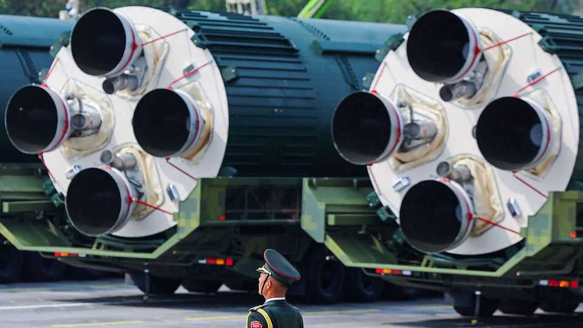
2012年习近平接掌中国领导权时，其国家拥有的核弹头数量仅约240枚，远低于美国和俄罗斯在新START条约框架下允许部署在远程发射平台上的1550枚。美国军方规划者曾认为，在与中国爆发核战争的情况下，美国远超中国的核武库将使其在几乎所有情景下占据优势。但根据最新美国评估，中国目前拥有约600枚核弹头，并预计到2030年将达到1000枚或更多。中国仍喜欢强调其在核问题上的“绝对克制”。毕竟，若包含储存中的核弹头而非待用状态，美俄两国的核弹头总数均超过5000枚。中国在最新政策文件中宣称：“中国‘从未、也永远不会’与任何国家进行核军备竞赛。”■
但它仍具备从空中、陆地和海上对美国发动核打击的能力。去年一场精心编排的阅兵式展示了这些武器，其中包括一枚体积庞大需分三部分运输的导弹。在《新削减战略武器条约》有效期内，美国无法扩大其核武库以应对。或许正因如此，美国对条约到期表现得毫不惋惜。俄罗斯称核武器限制的解除应“令所有人警觉”，但唐纳德·特朗普总统却无视其建议，拒绝双方自愿延长遵守《新削减战略武器条约》的期限。“不包括中国就无法达成协议，”美国国务卿马尔科·鲁比奥表示。美国军方担忧与中俄两国同时爆发战争。■
美国及其盟友必须“为潜在对手在多个战区协调或机会主义行动的可能性做好准备”，近期的国家国防战略声明如此表示。这被称作“美国准备不足的生存性挑战”，2023年国会成立的两党委员会在报告中如此指出。中俄日益形成合作，交换敏感技术并开展联合军演，有时甚至包括核轰炸机。美国的核力量最初并未针对中国设计，因为当时认为中国威胁远小于俄罗斯。中国核力量的扩张正在动摇这一假设。■
美国国防大学（National Defence University）的菲利普·索恩斯指出，中国的核力量正经历多项变革：不仅规模在扩大，而且类型更加多样化，配备多种弹头和发射装置。这些力量的警戒级别也有所提升，并具备五角大楼所谓“预警发射”（即在敌方武器抵达前，通过探测到攻击即刻反击）的能力。五角大楼最新评估显示，用于探测导弹发射的新卫星和相控阵雷达可在3到4分钟内向中国指挥官发出攻击预警。中国武装力量也更具备快速反击能力。井基导弹装载固态燃料（而非易燃的液体燃料，无法长期储存于导弹中），可实现最快响应。
中国已在三个广阔的导弹发射井区域部署了约100个发射井，这些发射井设计用于容纳多达320枚导弹，美国国防部表示。中国的火箭部队也在进行演练。2024年，他们曾将一枚具备核打击能力的导弹射向太平洋约11,000公里处。三个月后，又向中国西部地区连续发射多枚导弹。专家们对习近平为何下令如此快速的部署存在不同看法。萨恩斯认为，他同时在推进三个相互关联的目标。首先，他希望打造一支能够承受任何美国核打击的核武库，从而确保二次打击能力。尽管通常这意味着将导弹部署在难以发现的潜艇和机动发射平台上，但导弹发射井的扩散为中国经济实惠且快速地扩充核武库提供了途径。其次，中国可能希望拥有更灵活的核武库，能够用于比全面核战争更有限的场景。■
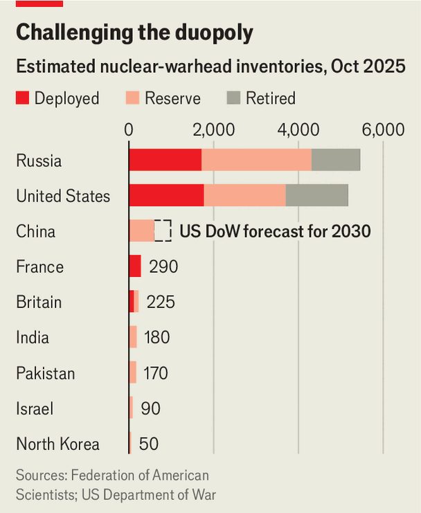
美国国防部认为，中国正在研发小型核弹头，其爆炸当量低于十千吨（与部署在洲际导弹上的400或更多枚核弹头相比）。这些小型核弹头可能被安装在中程导弹上，例如东风-26（DF-26的绰号是“关岛杀手”），用于打击美国在关岛的大型军事基地，如果美国在台湾面临中国入侵时试图以类似的小型核武器进行最后的反击。或者，习近平可能仅仅将庞大的核武库视为“大国地位”的象征。中国目前拥有的核武器数量已超过除俄罗斯和美国之外的所有国家（见图表）。它是否希望与他们5000枚或更多的核弹头达到均势？桑德斯认为，中国可能寻求在两者之间找到一个“中间的平衡点”，以表明中国既是大国，又是一个负责任的国家。
中国声称自己不会率先使用核武器，但卡内基国际和平研究院（Carnegie Endowment for International Peace）智库的汤兆（Tong Zhao）认为，相关战略存在模糊性。中国可能像俄罗斯在乌克兰那样威胁使用核武器，或向海洋发射警告性弹药，或在高空引爆以摧毁卫星。汤兆表示：“如果中国面临严重且灾难性的常规战败，任何人都不能排除其率先使用核武器的可能性。最终决策权只掌握在一个人手中。” 若中国意图不明，美国的应对措施也充满不确定性。智库赫尔曼基金会（Heritage Foundation）最近的一份报告呼吁，到2050年将部署的核弹头总数从约1770枚增至4625枚，增幅超过两倍。■
一些人认为，美国目前拥有的“可生存”核武器已足以对俄罗斯和中国造成毁灭性打击，尽管可能不得不放弃摧毁对方武器以限制对自身及盟友伤害的设想。美国拜登政府官员维平·纳朗（Vipin Narang）建议，最多再部署500枚核弹头，主要针对中国新建的导弹井。他表示：“没有所谓的魔数，一切都取决于你愿意承担多大风险。”前美国国防部核计划官员弗兰克林·米勒（Franklin Miller）则认为300枚就足够。无论具体数字如何，军备扩充都将是一个缓慢的过程。美国目前正艰难推进核三位一体的现代化，包括建造新型Sentinel陆基导弹、Columbia级核潜艇和B-21隐形轰炸机，同时升级指挥控制系统。■
一些项目严重滞后或超支。目前，美国只能通过“上传”储备中的额外核弹头至现有武器系统。将更多空射巡航导弹部署至轰炸机只需数日，但要在核潜艇搭载的导弹上安装更多核弹头则需数月。将陆基民兵III导弹从单弹头恢复为三弹头配置可能需要两年时间。2023年，美国科学家联合会（Federation of American Scientists）计算，通过这些方式，美国可部署约1900枚额外核弹头，而俄罗斯则为1000枚。扩大美国核弹头总库存将耗时数十年。若核军备竞赛发展至这一步，美国将处于劣势：其每年仅能生产数十枚新核弹头，而俄罗斯则可生产数百枚。■
然而，米勒先生指出，美国的核战略已不再基于冷战时期的“过度威慑”理念，而是转向“充足性”原则：“如果俄罗斯想用核武器让废墟弹跳起来，那是他们的事。”无论新核竞赛的速度如何，持续40年的核武库缩减进程正开始逆转。一场比冷战时期更复杂的军备竞赛正在酝酿。中国已开始扩充核武库；若美国做出回应，俄罗斯势必跟进。印度可能被迫与中国抗衡，巴基斯坦则可能与印度对抗。另一个不稳定因素是日益增长的担忧，即特朗普先生可能抛弃盟友，这促使一些国家考虑发展自己的核武器。■
最近的美国国家安全与防务战略文件对保护三十多个盟友免受核攻击的长期承诺只字未提。韩国尤为担忧。最近访问首尔的五角大楼官员却未提及来自核武装北方的威胁。一个核风险相对有限且可预见的世界，可能很快演变为充满不断增多且难以预测的危险的新局面。■ 通过我们的周度订阅者专属简报《The War Room》，随时掌握国防与国际安全领域的最新动态。
§020 美国原题：The right to die is spreading in America · 板块：United States · 栏目：美国
美国
■
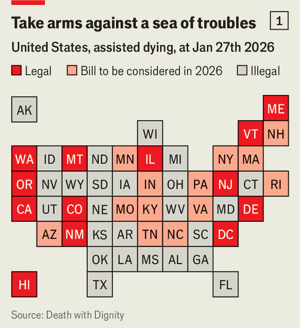
死亡之门
安乐死权利正在美国蔓延。美国三分之一人口居住的州可能很快将允许安乐死。
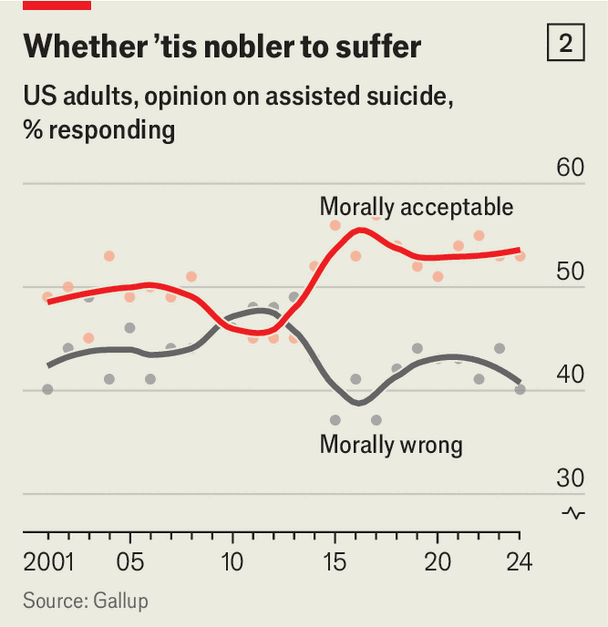
为庆祝70岁生日，帕特里夏·安·柯蒂斯要求举办一场不寻常的庆祝活动。“她不想开派对，”她的女儿回忆道，“她希望我们买下一座废弃的殡仪馆。”柯蒂斯计划将其改造成家暴庇护所。家人用油漆罐重新装修了这座建筑。六年之后，柯蒂斯因肌萎缩侧索硬化症（ALS）去世，这是一种运动神经元疾病。在去世前，她已失去行走、进食和说话的能力。“我太熟悉目睹所爱之人受苦却无力阻止的痛苦了，”柯蒂斯的女儿、纽约州长凯西·霍奇尔说道。
神经疾病如肌萎缩侧索硬化症（ALS）是美国寻求医生协助安乐死的第二大诊断。纽约州即将加入12个其他州（含华盛顿特区）的行列，成为合法实施安乐死的地区。霍奇尔女士预计将在近日签署相关法案。这一趋势是更大浪潮的一部分（见图表1）。2025年特拉华州和伊利诺伊州已通过安乐死法案。到年底，超过30%的美国人将居住在允许医生为绝症患者开具致命药物的州。立法者正跟上公众意见（见图表2）。略超半数美国人认为安乐死在道德上可接受。若患者处于剧痛、无康复希望且主动请求协助，这一比例将升至三分之二。■
美国的保障措施通常比一些允许安乐死的西方国家更为严格。例如加拿大和荷兰允许在患者遭受不可治愈的疼痛但并非处于绝症阶段的情况下实施安乐死。相比之下，美国各州通常遵循俄勒冈州的模式，俄勒冈州于1994年成为首个合法化安乐死的州。自那以来，辩论的焦点变化不大，盖夫·苏格曼（Geoff Sugerman）表示，他曾领导俄勒冈州的安乐死合法化运动，并继续与“尊严临终”（Death with Dignity）组织合作，该组织致力于推动安乐死合法化。我们的反对者如出一辙，法案内容基本相同。美国的安乐死法律一贯要求患者剩余生命不超过六个月，并且这一诊断必须由两名医生确认。
患者必须具备完全民事行为能力，主动提出用药请求，并且能够自行服药，而非由医生代为注射。因此符合条件的人寥寥无几，加之部分医院和医生基于道德原因拒绝协助，主动安乐死仍属罕见。罗格斯大学的埃莉莎·科佐夫指出，在允许主动安乐死的州，此类案例不足1%的死亡案例。纽约州又增设了更多限制措施。患者的精神状态须由心理学家或精神科医生确认，而非普通医生。患者要求死亡的请求须被录像记录，并由两人见证。这些额外规定源于立法者与天主教徒霍奇尔女士的协商，她希望设立全美最严格的安全保障。霍奇尔女士承诺将在州议会通过其提议的修改方案后签署该法案。■
该法律将在六个月后生效。在特拉华州、伊利诺伊州和纽约州，立法者们为通过相关法案争论了数年才最终提交给州长签署。宗教团体对此表示反对。出生于芝加哥的教皇利奥十四世曾试图说服伊利诺伊州州长J.B.普里茨克行使否决权，但未果。一些代表残疾人群体的组织也表示反对，担心人们可能因不愿让他人承担照顾负担而被迫选择死亡。纽约州的法案“有很多保障措施”，纽约独立生活协会的伊丽莎白·麦考米克承认，但她仍担心该法案可能被滥用。协助安乐死很少成为政客们优先考虑的议题。“我们可能需要数十次与立法者沟通，才能推动此事进展。”倡导组织“Compassion & Choices”的科琳·卡里说。■
这是一桩“立法者难以启齿的议题”。终末期病患常是有力的倡导者；许多人在法案辩论期间便已离世。部分民主党人抓住了这一议题，这与他们近期塑造“个人权利党”形象的努力相契合。霍奇尔（Hochul）女士表示，纽约“长期以来引领”此类自由的斗争，她以同性权利和合法堕胎作为类比。布拉德·豪伊尔曼-西格尔（Brad Hoylman-Sigal）议员表示，俄勒冈州的模式“可靠且无漏洞”，三十余年的数据已证明这一点。“我未曾听说有任何确凿案例……显示其被滥用。”同样，美国倡导者也鲜有提及滑坡效应的迹象。美国的倡导者通常排除非终末期病患的协助安乐死。■
更少的人支持将安乐死扩展至仅患有精神疾病的人群，正如加拿大正在考虑的那样。“我们不打算以任何方式扩大适用范围，”伊利诺伊州众议院多数领袖、该州安乐死立法提案发起人罗宾·加贝尔表示。“这就是最终目标。”“尊严死亡”组织预计今年将在13个州审议相关法案，其中弗吉尼亚州、马里兰州和马萨诸塞州最有可能通过。该组织倡导安乐死的负责人凯瑞女士表示：“推动安乐死立法需要耐心和坚持，不幸的是，许多晚期患者并不拥有充裕的时间。” ■ 请关注《经济学人》每日简报《美国简报》（The US in brief），获取最新政治动态快速分析，以及每周专栏《制衡》（Checks and Balance），深入探讨美国民主现状与选民关切议题。
§021 美国原题：A 5% wealth tax would drive billionaires out of California · 板块：United States · 栏目：美国
加州的超级富豪近期异常活跃（一些人甚至拥有自己的播客，这已说明问题）。一项将对亿万富翁征税的全州公投提案令他们不安。彼得·蒂尔、拉里·佩奇和谢尔盖·布林——金州约200位亿万富翁中的三位——已开始将业务迁往税率较低的佛罗里达州和内华达州。
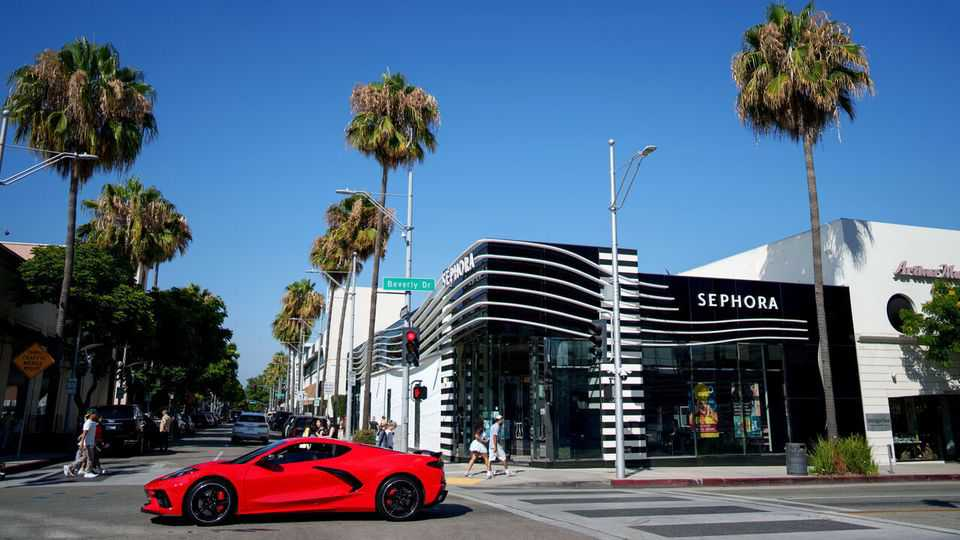
布林等人已投入数百万美元支持一个新成立的政治组织，该组织可能在11月反对这项措施或资助其他竞争性倡议。“这完全是惩罚性的，而且极其恶劣，”风险投资家大卫·萨克斯（David Sacks，前旧金山居民）表示。《亿万富翁税法案》将对净资产超过11亿美元的加州居民征收一次性5%的财富税。该提案由服务员工国际工会（SEIU）提出，该工会认为这笔收入将帮助弥补联邦政府削减加州医疗补助计划资金的缺口。该提案将把90%的收入用于医疗保健，剩余10%用于教育和食品援助。该提案尚未列入选票（支持者需在6月24日前收集近90万个签名）。然而，这项亿万富翁税提案在数周内已搅动了美国最大州的商业和政治局势。■
美国各州在应对唐纳德·特朗普（Donald Trump）《大美法案》（Big Beautiful Bill）中包含的削减措施时，确实面临现实问题。但加州立法分析局（Legislative Analyst’s Office）指出，试图通过一次性财富税解决这一问题可能在长期内危及该州的一般基金（general fund）。截至2022年，加州近40%的个人所得税收入由前1%的纳税人缴纳。若财富税导致这些高收入群体撤离，将意味着公共服务资金减少。此外，该税种的设计也引发担忧。它将对流动性差的资产和未实现的收益（如初创公司股份）征税。■
这令科技界感到震惊。“如果你的纸面收益要被视为必须突然以现金形式交给政府的财富，这将摧毁这个经济。”圣何塞市长马特·马汉表示。马汉曾是创业公司创始人，如今正竞选州长，获得本地科技巨头支持。法国Mistral公司联合创始人亚瑟·门施也曾提出类似观点，去年法国左翼人士（未成功）推动财富税时，他便持此立场。对亿万富翁征税的争论激化了已有的辩论。加州，尤其是湾区，长期以来认为企业会支付更多税款、更高薪资和能源成本，因为全球其他地方难以提供同等水平的人才聚集。称其为“加州附加税”或许更贴切。但何时这种代价会变得过高？■
加州大学伯克利分校经济学家恩里科·莫雷蒂（Enrico Moretti）发现，当某州已对高收入人群征收沉重所得税时，亿万富翁（尤其是老一辈）会迁居以规避遗产税。“州政府并不是对高净值人群征税的合适管辖地，”莫雷蒂表示。他补充道，无需离开美国就能规避这项税负，“只需前往德克萨斯州或佛罗里达州即可。”更多富豪可能跟进迁徙。“我接触的每个人都在一致提醒，他们正指示律师和会计师制定离场计划，”马汉（Mahan）警告道。该提案恰逢民主党（主要在深蓝州）正考虑财富税是否能服务于其“可负担性”议程。■
一些人，如佛蒙特州84岁的参议员伯尼·桑德斯，认为通过征税百万富翁并免费提供大学学费等措施，可以让更多人生活更负担得起。“对1%征税”可以成为政治上的优势：纽约新任市长佐赫兰·马姆达尼曾以提高富人收入税为竞选纲领。华盛顿和罗德岛州正在考虑是否对百万富翁征税。“丰裕派”民主党人则倾向于供应端政策，如简化住房建设和发电流程，从而降低物价。这一议题无疑将在未来的民主党总统竞选辩论中成为焦点。加州州长、民主党领跑者加文·纽森不支持挤压亿万富翁，他宁愿让这些富人留在加州，也不愿他们迁往红州并为当地公共服务买单。■
但他小心避免显得过于亲近富豪。“我已与所有富豪会面，”他在彭博新闻活动上表示，“有些人我尊重，有些人则不。” ■ 通过《The US in brief》掌握美国政治动态，这是我们每日简报，提供对最重要政治新闻的快速分析；以及《Checks and Balance》，每周简报，探讨美国民主现状及选民关切议题。
§022 美国原题：Federal prosecutors in Minnesota are cracking down on dissent · 板块：United States · 栏目：美国
提问是否违法？明尼苏达州联邦检察官表示，这取决于具体情境。前CNN主播、经常批评特朗普总统的唐·莱蒙（Don Lemon）因方式不当被逮捕，被控侵犯他人宗教自由。1月18日，唐·莱蒙（照片）跟随一群抗议者闯入圣保罗市的一家教堂，干扰礼拜仪式，抗议该教堂牧师同时担任移民与海关执法局（ICE）代理现场主任的职务。
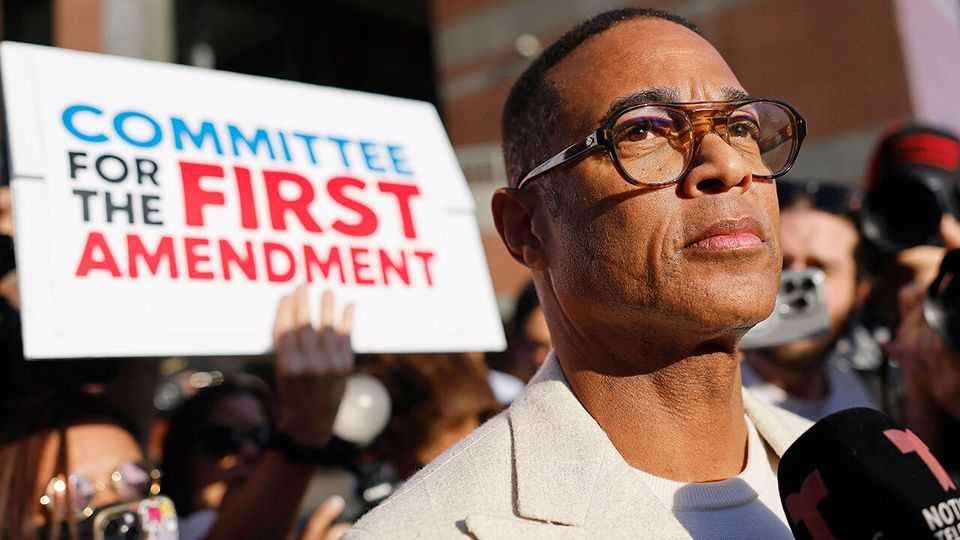
莱蒙先生站在人群后方，通过YouTube频道直播了这一场景。“现在这里简直是一片混乱，我们并非抗议者，只是在报道他们。”他说。随着抗议者陆续离开，他推测“对于在场的信徒来说，这既令人不适又充满创伤”，并询问一名抗议者是否认为自己的行为真正帮助了她的诉求。七名抗议者以及莱蒙先生和另一名记者均被起诉。抗议者被指控策划了“有组织的接管式袭击”。起诉书指出，莱蒙先生的罪名在于“接近牧师”、“近距离站在他身旁”并“不断向他提问”。联邦检察官称，这种行为并非受第一修正案保护的新闻报道，而是企图“压制和恐吓”。一名联邦治安法官最初驳回了对莱蒙先生的指控。
大陪审团随后同意了这一提议。在被起诉后，莱蒙表示自己愿意自首以换取宽大处理，但联邦特工们却在酒店现身，将他制服并戴上手铐带走。白宫在推文中得意洋洋地配图展示莱蒙，并附上锁链表情符号，称“当生活给你柠檬……”。美国助理检察官哈梅特·迪隆转发了一条推文，称这位黑人莱蒙是“今日的三K党成员”。特朗普的批评者指出，这又是一例他如何利用本应公正的司法部打击那些妨碍他政策的人，从不合作的央行官员到调查特朗普集团欺诈案的民主党人。■
在明尼苏达州，联邦移民官员枪杀两名抗议者引发大规模公民不服从运动后，政府已对批评者做出部分让步，例如宣布将减少当地部署的官员数量。但与此同时，政府也对所谓“煽动者”展开严厉打压。该市多名抗议者被联邦官员逮捕，部分人被拘禁数小时。1月28日，总检察长帕姆·邦迪（Pam Bondi）公布16名被捕抗议者的照片——她称其为暴徒——并指控他们。芝加哥大学教授莎伦·法利（Sharon Fairley）表示，此类行为“异常”且“令人担忧”，她认为此举“似乎旨在压制言论”并“阻止人们抗议”。相关案件可能在进入审判前被驳回。■
法瑞利女士表示，被逮捕和起诉本身就是一种惩罚。“他们必须经历一场耗费精力和财力的辩护过程……这绝非小事。”特朗普在明尼苏达州的新任移民突袭行动负责人汤姆·霍曼称，执法部门将优先逮捕暴力犯罪分子，而非单纯抓捕非法入境者。但大量非犯罪外籍人士仍被大规模拘捕。这种行动在某种程度上削弱了法治与秩序的力量。自年初以来，明尼苏达州美国检察官办公室已有14名检察官辞职或正在办理辞职手续。刑事部门目前律师人数不足20人，较2022年时的三倍数量大幅减少。■
1月3日，联邦律师朱莉·李（Julie Le）在被法官询问为何政府持续未能遵守法院命令的期限时回应称：“我真希望您能将我视为藐视法庭，这样我就能有整整24小时的睡眠……这个系统太糟糕了，这份工作也太糟糕了。”曾担任明尼苏达联邦地区检察官代理的律师安德斯·福尔克（Anders Folk）表示，在特朗普当选之前，该办公室是全美最高效的执法机构之一，曾处理过涉及索马里激进组织沙巴布（al-Shabab）招募的恐怖主义案件，以及严重欺诈案件。他称如今“这个机构将无法完成这些任务”。去年全国范围内，仅有0.2%的联邦刑事案件最终被判无罪。他表示，联邦检察官通常不会接手无法胜诉的案件，但这一政策似乎已发生变化。■
过去六个月来，美国联邦政府对全国范围内的抗议者发起的任何一项起诉，均未取得定罪成果。部分案件被大陪审团驳回，这在过去几乎闻所未闻。当人们因批评政府而被起诉时，陪审团似乎也对案件存有疑问。■ 关注美国政治动态，请订阅《The US in brief》，这是我们的每日简报，提供对最重要政治新闻的快速分析；以及《Checks and Balance》，每周专栏深入探讨美国民主现状及选民关切议题。
§023 美国原题：Voting rights and wrongs in America · 板块：United States · 栏目：美国
在理想世界中，选举区划应由中立的计算机冷静划定。但在美国，这项工作通常由州立法机构完成，实际上赋予政客挑选自己选民的权力。政党希望最大化席位数量，现任官员希望最大化连任机会，而法院则试图执行1965年通过的《投票权法案》，旨在终结选举中的种族歧视。在吉姆·克劳时代，歧视意味着阻止南方黑人投票，常通过人头税和几乎无法通过的识字测试实现，而白人则大多免于此类限制。
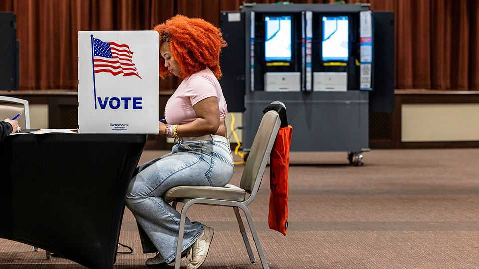
■
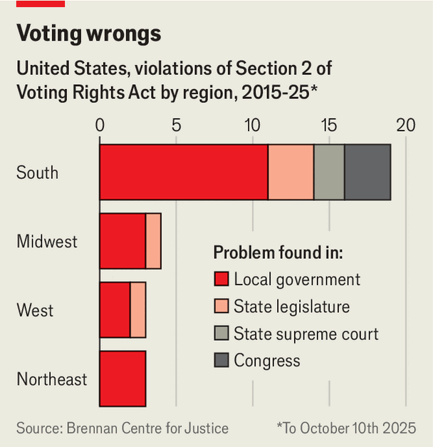
如今，美国人对何为歧视存在分歧。一些人认为，各州应尽可能多地设立以黑人为主的选区，以便黑人能够如1986年美国最高法院所言，"选举自己偏好的代表"。另一些人则认为这种做法本身构成种族歧视，违反宪法的平等保护条款，主张选区划分不应考虑肤色。几乎无人相信政客能公正地处理这些问题。《投票权法案》第二条允许原告起诉各州，指控其划分选区的行为削弱了少数族裔选民的投票权。过去四十年间，共有466起此类案件被提交至法院。其中大多数案件发生在美国南部，涉及地方选举，如市议会和学区选举（见图表）。但这些案件也影响了国会的构成。■
2024年，非裔民主党人肖马里·菲格斯（Shomari Figures）在一场诉讼后当选，该诉讼迫使阿拉巴马州创建了一个从莫比尔延伸至蒙哥马利的多数族裔选区。如今另一场法律挑战——路易斯安那州诉卡莱斯案（Louisiana v Callais）——又威胁要重新划分选区。非裔占路易斯安那州选民的三分之一，但根据2020年人口普查后绘制的地图，仅有一个多数非裔选区。非裔原告提起诉讼，法院下令创建第二个此类选区。但随后一群“非非裔选民”提出挑战，称此举是“种族隔离”。另一家法院裁定他们胜诉，推翻了重新绘制的地图。此案去年三月已提交至最高法院，十月又进行了第二次口头辩论。
保守派大法官们似乎准备让原告更难挑战选区划分，理由是这些划分涉嫌削弱少数族裔选民的影响力。如果这项裁决（预计今年春季公布）朝着这个方向发展，国会黑人 caucus 四分之一以上成员可能被选民淘汰。但后果可能并不那么简单。民主党策略师詹姆斯·卡维尔（James Carville）表示，若裁决被视作针对黑人群体，反而可能助力民主党。他指出，如何让25岁的黑人汽车修理工在亚特兰大去投票？告诉他说共和党不尊重你，且指望你不去投票。调查显示，年轻黑人选民更关注经济而非民权。但如果投票权法案（VRA）被视为受威胁，这种倾向可能改变。“这会激怒非洲裔社区，而愤怒会推动投票率上升，”民主党民调专家约翰·安扎洛内（John Anzalone）表示。■
州级选举中，选民参与度最为关键，这类选举无法通过选区划分来操控（州界不可更改，除非你算格陵兰）。提高黑人选民参与度可能对南方选举产生重大影响。黑人数量众多的南方地区，黑人选民的投票率普遍低于白人。北卡罗来纳州民主党若能让查尔斯顿（主要由黑人和拉美裔居民组成的城市）选民的参与度达到（更白的）罗利和达勒姆的水平，就能赢得更多州级选票，政治操盘手摩根·杰克逊表示。类似情况也可能出现在佐治亚州，该州或许是南方最摇摆的州。路易斯安那州国会候选人报名截止日期为2月13日，因此最高法院不太可能在本届中期选举前及时作出裁决，让共和党人移除该州的多数黑人选区。■
布雷南中心（Brennan Centre）智库的迈克尔·李（Michael Li）认为，其他南方州的情况也类似。但未来选举的选区划分可能发生变化。哈佛大学的尼克·斯蒂芬诺普洛斯（Nick Stephanopoulos）表示，如果选区划分确实改变，共和党将在众议院和各州立法机构中获得“结构性优势”，只要当前政治联盟持续存在。这些条件包括深刻的党派互不信任。曾试图推翻2020年败选结果的唐纳德·特朗普（Donald Trump）本周称要“联邦化”选举，动用联邦政府力量介入他声称存在选民欺诈的州，尽管缺乏证据。白宫淡化了他（违宪的）提议，但民主党对此感到不安。斯蒂芬诺普洛斯表示，他的选区是民权运动的发源地，深知“所面临的后果”。■
掌握美国政治动态，订阅《美国简报》（The US in brief），我们的每日简报提供对最重要政治新闻的快速分析；以及《制衡》（Checks and Balance），每周专栏深入探讨美国民主现状及影响选民的关键议题。■
§024 美国原题：Meet the brains who explain Trumpism · 板块：United States · 栏目：美国
数年前，约翰·里戈利佐（John Rigolizzo）刚毕业时，曾与12名年轻共和党人一起，在南加州海滩度过了两周半时间。他们并非为了冲浪或晒太阳而来，而是为了研读亚里士多德、柏拉图和苏格拉底的著作，地点是克莱蒙特研究所——一家右翼智库。他们共同学习“telos”（目的论）的含义，研读美国建国文献。他们与克莱蒙特学者迈克尔·安东（Michael Anton）一起观看《壮志凌云：独行侠》（Top Gun: Maverick），后者在2016年曾率先为唐纳德·特朗普的意识形态辩护。
里戈利佐此前已对MAGA持支持态度，但他说这次密集培训为他奠定了哲学与历史基础，以捍卫特朗普主义。同届学员中有人称其为“革命的智识训练营”。里戈利佐后来与两位同届好友共同主持了一档面向Z世代MAGA粉丝的播客。特朗普连任后，三人团队解散，其中一人进入白宫任职，另一人则加入管理与预算办公室（OMB）。现任OMB主任拉塞尔·沃特也是克莱蒙特学院的校友——他们自称为“克莱蒙特人”（Claremonsters）。克莱蒙特人遍布特朗普政府。据一项统计，至少有70人曾在该政府任职，从副总统幕僚长到中情局副主管，再到无数特聘助理与演讲稿撰写人。
马修·佩特森曾负责克莱蒙特学院的教育部门，他表示，在特朗普就职后，他无法在艾森豪威尔行政办公室大楼的走廊里不遇到同僚。在特朗普出现之前，克莱蒙特学院一直处于边缘地位。该学院成立于南加州，蔑视新保守主义的波托马克河圈官僚集团。它认为共和党主流是软弱派：对伊拉克战争的认知存在偏差，支持非法移民的赦免，不愿摧毁行政国家，对多元文化主义过于安于现状。几乎所有保守知识分子最初都回避特朗普，但克莱蒙特学院认为他是一位与他们敌人的斗士。该学院是最早认识到这一机会并将其转化为影响力和接近权的保守智库之一。■
其发展轨迹映射出右翼政坛更广泛的变革，政策智库要么转向MAGA风格（如赫尔曼基金会），要么坚守原则却逐渐淡出（如美国企业研究所）。克莱蒙特学院擅长为特朗普主义增添思想光泽。安托宁起草了国家安全战略，旨在为总统在委内瑞拉和格陵兰的资源攫取行为提供合理化解释，并为以个人崇拜驱动的外交政策注入连贯性。该研究所律师约翰·伊斯特曼则参与策划了“假选举人”计划，试图推翻2020年大选结果。因对特朗普的贡献，他被亚利桑那州和佐治亚州检察官起诉。与其他智库不同，克莱蒙特学院不以政策论文见长，前主席布莱恩·肯尼迪表示，其关注点在于历史与原则。■
它旨在教导年轻保守派人士“过去伟大政治家的思维方式”，以及美国后来为何走向错误的方向。若听起来过于宏大，那确实如此。“每一位接触克莱蒙特研究所的人都有一种隐秘的怀疑，认为我们国家在最深层层面出了问题，而有责任感的公民必须努力理解并加以修复。”31岁的查尔斯·科雷尔（Charles Correll）如是说。他是前研究员兼共和党参议员约翰·巴拉斯罗（John Barrasso）的演讲稿撰写人，来自怀俄明州。克莱蒙特研究所由哈里·贾法（Harry Jaffa）的学生创立，贾法是亚伯拉罕·林肯研究学者，也曾担任巴里·戈德华特（Barry Goldwater）的顾问，后者曾写下“捍卫自由的极端主义并非邪恶”这句名言。早期的克莱蒙特研究所成员认为，美国在进步时代（Progressive Era）就偏离了正轨。
他们将20世纪的补救性政策——福利制度、肯定行动——以及制定这些政策的官僚视为不美国化。主流共和党人满足于削减税收和监管：这种做法对于当前的任务来说显然不够。克莱蒙特学院研究员格伦·埃尔默斯（Glenn Ellmers）表示：“问题不只在于高税收或政府规模过大，而是我们已逐渐背离了人民的同意。”这种思维——认为已经失去了太多、世界已支离破碎——很容易滑向灾难主义。进一步推演，极端解决方案便呼之欲出。肯尼迪表示，他不再称自己为保守派，而是反动派。斯普尔曼学院（Spelman College）的马修·麦克曼斯（Matthew McManus）指出，人们长期以来将保守主义与美国右翼整体混为一谈，这种说法并不准确。■
保守派认为，现有的制度和等级体系之所以存在是有其原因的，只有在谨慎考虑后才应进行改变。威廉·F·巴克利曾说，保守派的职责是“站在历史的洪流中高呼‘停下’”。而克莱蒙特派的右翼人士则认为，几乎没有什么值得保留的。克莱蒙特书评编辑查尔斯·凯斯勒表示，克莱蒙特派人士对美国现状的诊断更为一致，但对解决之道却意见不一。有些人认为当前的安排令人无法忍受，希望立即推翻；另一些人则更为谨慎。凯斯勒认为特朗普“粗鲁”但“是个极其有效的政治人物”。当被问及如何将特朗普与被视为楷模的林肯总统相比较时，凯斯勒几乎不假思索地回答：“和林肯一样，他本质上也是人权的捍卫者。” ■
关注美国政治动态，订阅我们的《美国简报》，每日提供对最重要政治新闻的快速分析，以及《制衡简报》，每周深度探讨美国民主现状及选民关切的核心议题。■
§025 美国原题：Thank God for Melania Trump · 板块：United States · 栏目：美国
布宜诺斯艾利斯的伊娃·庇隆博物馆，讲述这位阿根廷前第一夫人（Eva Perón）的故事。馆内布满横幅，标注着她的出生年份1919，却未提及她的逝世年份。若游客未能领会其意，西班牙语的“不朽”二字便在她微笑的面容下方显眼地呈现。馆内展品详述伊娃如何强化了丈夫胡安·庇隆（Juan Perón）的民粹主义政治，助长其专制主义、对司法与新闻独立的蔑视，以及对国家资本主义的偏爱。她与阿根廷普通民众建立了如此深厚的纽带，以至于她33岁便因癌症去世（1952年），数百万民众仍蜂拥至她遗体前一睹芳容。
■
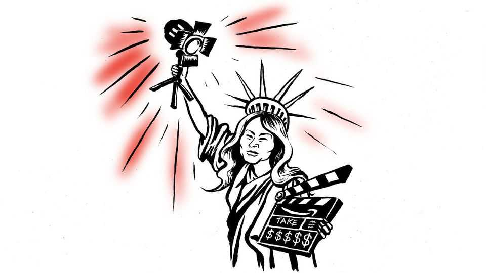
一块牌子上写着，「鲜花售罄，不仅在阿根廷，邻国也如此。」一位美国游客在参观伊娃博物馆后，可能会产生矛盾的情感：一方面对伊娃·庇隆对阿根廷的持久影响感到惊讶，另一方面又对梅拉尼娅·特朗普心存感激。谁又知道唐纳德·特朗普若身边有位伊娃，能走多远？冷峻、谨慎且奢华装饰的梅拉尼娅·特朗普，似乎更自然地属于特朗普大厦而非特朗普集会——换句话说，她更契合其理想化的商业品牌，而非接地气的政治形象。她几乎从未现身集会现场。
新纪录片《梅拉尼娅》最接近揭示的场景，是她因安全担忧而多次反对特朗普夫妇惯常的就职典礼仪式——即总统座驾停驻后，第一夫人与丈夫一同步行于游行队伍中（最终因寒冷天气，特朗普将庆祝活动移至室内）。相比之下，伊娃·裴隆曾轻描淡写地拂去一名试图阻拦口含梅毒疮的乞讨者的手，随后亲吻这名贫苦妇女的嘴唇。这已是民粹主义者难以企及的高标准，更遑论曾是时尚模特的梅拉尼娅。但试想，传统总统夫人曾付出多大努力，不仅塑造丈夫形象，更支持其政策主张——比如劳拉·布什推动教育改革，希拉里·克林顿倡导医疗改革。
当特朗普夫人对政策表现出兴趣时，她的优先事项往往与丈夫相去甚远，甚至存在分歧。她在2024年出版的回忆录中承认：“考虑到唐纳德的社交媒体行为，我预料会受到一些批评。”这本被坚定地贴上“梅拉尼娅”标签的回忆录中，她明确表示自己支持堕胎权，这另一项议题上，她要么影响力有限，要么选择不施加影响。
特朗普夫人对2021年1月6日其丈夫支持者袭击国会山的事件写道：“我们目睹的暴力行为毫无疑问是不可接受的。”（她解释称，当时暴力事件正在发生时，自己未能谴责，因为“我并不了解事件经过。”）特朗普夫人是首位归化移民担任的第一夫人，这或许也将引发深刻——若如此则颇具讽刺意味——的政策分歧。她在纪录片中多次重复的陈词滥调之一是：“无论我们来自何方，都受制于相同的人性。”这句话虽平淡，却因总统曾将部分移民称为“垃圾”而显得格外有力。她与特朗普显然在对其第一任期前后所受待遇的不满上高度一致。■
在回忆录中，特朗普夫人提到自己的银行账户被终止，各种商业计划被取消，包括一项未指明的“媒体计划”，她怀疑这是因为“与我姓氏和政治立场相关的偏见”。要让一位正直的特朗普不为如今商界巨头对家族的奉承而欣喜，简直是不可能的事，看来世上并无这样的特朗普。据《华尔街日报》1月31日报道，特朗普家族的加密货币项目获得了阿布扎比王室成员5亿美元的投资。随后，阿联酋获得了美国最先进的人工智能芯片。特朗普夫人完成了一项更显特朗普式自利的壮举。无需任何安全技术的交易。■
特朗普女士实际上并未提供任何有价值的素材。然而，这部纪录片却由亚马逊公司（Amazon）大笔资助，据《华尔街日报》（The Journal）报道，亚马逊在她向杰夫·贝索斯（Jeff Bezos）在晚餐时提出这一想法后，出价接近其他竞标者的三倍，即4000万美元。特朗普女士据称至少保留了2800万美元作为报酬，并保留了编辑控制权。亚马逊公司现在正花费3500万美元，以推广其支付给特朗普女士制作的自我宣传广告。就连特朗普牛排的供应商本人也从未达成过如此精明的交易。事实上，人们不禁疑惑，总统新提起的针对他所领导的政府的100亿美元诉讼，是否意在重新夺回某种扭曲的家庭竞赛中的领先地位。■
特朗普夫人，现年55岁，比丈夫年轻24岁，作为第一夫人，她比前任们更积极地争取个人甚至政治上的独立。自马莎·华盛顿将自己比作州监狱囚犯以来，第一夫人始终难以摆脱被束缚的感觉。但特朗普夫人常驻白宫之外，长时间淡出公众视野。尽管丈夫身家丰厚，她仍重视财务独立，称其为“核心价值”——她在回忆录中如此表述。至少，她通过自我包装，正在打造比丈夫更鲜明的品牌，而这个品牌围绕着相对无害的谎言：她拥有非凡的品味，而非对美国的愿景。帕特·尼克松曾称担任第一夫人是“世界上最艰难的无薪工作”。■
在这两个方面，若仅限于这两个方面，梅拉尼娅·特朗普（Melania Trump）正兑现其自诩电影中“重塑角色”的宣言。■ 《经济学人》订阅者可注册我们的Opinion电子简报，汇集了我们的社论、专栏、特稿及读者来信等精华内容。
§026 美洲原题：Why so many Colombians fight in foreign wars · 板块：Americas · 栏目：美洲
为何如此多哥伦比亚人参与外国战争
哥伦比亚政府正面临外交难题
一名身穿紧身迷彩服的男子在走过皮卡和尘土飞扬的帐篷时，为TikTok录制视频。他用西班牙语向同胞们讲述：乌克兰有工作机会，报酬不错。视频发布后几分钟内，评论区便开始涌入留言。“信息”，一名观众写道；“前军人——如何申请？”另一人问道。这类视频已成常态，它们揭示了一个蓬勃发展的全球武装劳动力市场，吸引着前所未有的哥伦比亚人参与远离故土的冲突。■
自2022年俄罗斯入侵乌克兰以来，专家估计至少有3000名哥伦比亚人曾途经该国，参与双方战斗，使他们成为参与外国冲突的外籍部队中人数最多的群体之一。另有部分哥伦比亚人出现在苏丹内战或墨西哥暴力帮派中。哥伦比亚安全专家马里奥·乌雷尼亚-桑切斯（Mario Urueña-Sánchez）估计，约有1万名哥伦比亚人卷入外国冲突。多数人曾是军人。乌雷尼亚-桑切斯表示，这些哥伦比亚人主要活跃在三大领域。为私营企业保卫设施、车队或能源设施的安全工作薪酬最低。为犯罪组织提供类似服务则更具经济吸引力，但风险更高。第三种选择是赴海外参战，这可能意味着加入外国军队或私人安保公司。■
哥伦比亚的退伍军人因拥有数十年对抗如哥伦比亚革命武装力量（FARC）等叛乱组织的经验而备受青睐。与美国的紧密军事合作使他们熟悉北约标准武器和通讯系统。国际危机小组（International Crisis Group）的埃莉莎白·迪金森指出，哥伦比亚士兵的成本低于西方同行，且外国部队可迅速部署他们。可用战斗人员的供给正在增长。哥伦比亚拥有南美洲仅次于巴西的第二大军队，现役士兵超过26万名。该国军队在2000年代初大幅扩张，正值其对抗游击队行动最激烈时期；这一代人如今已接近退役年龄。士兵通常在服役20年后或年满45岁后退役，未获晋升的军官也面临被强制退役。■
结果是大量受过训练的军人在相对年轻时便离开军队。与拥有大量退伍军人的国家（如美国）不同，哥伦比亚没有全面支持退伍军人向平民生活过渡的政策，乌雷尼亚-桑切斯先生表示。离开军队往往意味着突然失去住房、医疗保障和制度性支持。很少有工作能认可军事技能的价值。养老金微薄，通常每月约400美元。外国合同则承诺支付远高于此的薪酬。政治局势也未带来转机。自2022年上任以来，总统古斯塔沃·佩特罗与军方的关系一直紧张。作为哥伦比亚首位左翼总统，他承诺改革安全体系，但其曾是游击队成员的身份长期让军方对其意图心存疑虑。■
他推动与哥伦比亚武装组织进行谈判主导的“全面和平”努力，却以令人沮丧的失败告终。自他担任总统以来，已有超过13,000名士兵自愿退出武装部队。哥伦比亚正面临大量武装人员外流的困扰。最明显的是，本国公民正承担严重风险。一些退伍军人报名参与他们认为风险较低的安全工作，却发现自己被派往前线。招募过程往往非正式，通过社交媒体和即时通讯软件进行，其中关于薪酬、保险和工作条件的宣传通常被夸大。语言障碍和不熟悉的指挥体系进一步加剧了沟通困难。外交部称，数十名哥伦比亚人正被“复杂的人贩子网络”欺骗。伤亡率居高不下。■
在乌克兰，哥伦比亚人频繁被部署至由无人机和重型火炮主导的前线——这与哥伦比亚国内冲突的战场截然不同，乌雷尼亚-桑切斯先生（Mr Urueña-Sánchez）指出。逝者家属极少获得赔偿。保险赔偿可能以确认并找回遗体为前提，迫使家属前往战区并应对外国法庭和官僚体系。危险程度随着招募范围扩大而加剧。早期的哥伦比亚雇佣兵主要通过相对专业的渠道在2010年代初期被阿拉伯联合酋长国（UAE）武装部队招募。由于UAE缺乏中层军官，他们依赖退役的哥伦比亚指挥官，后者带来了自身网络中的经验丰富的士兵。如今许多招募对象则是辍学生，甚至平民，他们被网络传言吸引，认为战争是轻松赚钱的途径。■
许多返回哥伦比亚的人身受重伤或遭受严重心理创伤。塞恩·麦克法特（Sean McFate）是一名前空降兵，现任职于华盛顿国家国防大学，他表示一些人辗转于不同冲突之间。其他哥伦比亚人则被犯罪集团送往乌克兰学习战斗技能，包括无人机战争，这些技能正被哥伦比亚的武装团体越来越多地用于战斗。官员们也担忧外交后果。哥伦比亚人被指控在海外犯下严重罪行。2021年7月，约20名哥伦比亚籍人士参与了海地总统乔弗内尔·莫伊兹（Jovenel Moïse）的暗杀行动。去年，哥伦比亚在有报道称至少300名哥伦比亚人参与苏丹快速支援部队（Rapid Support Forces）的内战后，向苏丹政府道歉。■
12月，美国对一个被指控招募哥伦比亚前士兵参与该冲突的网络实施制裁，这些士兵被指控训练童兵。去年年底，政府批准了联合国《反佣兵公约》，使哥伦比亚与国际规范接轨，该公约将招募、资助或训练佣兵的行为定为犯罪。但此举可能影响有限。大多数雇佣佣兵的国家尚未签署该公约。大量佣兵交易通过私营公司进行，这些公司通过将战斗角色描述为“安保”或“培训”来规避“佣兵”标签。与此同时，对佣兵的需求短期内不会减少。与资源开采行业相关的冲突——从黄金到稀土和能源——在政体薄弱的国家普遍存在，这催生了对军事力量的需求。■
迪金森女士表示，哥伦比亚可通过实施一项提供更好经济支持、再培训以及可信的平民就业途径的退役军人政策，来解决其雇佣兵问题。若不采取这一措施，海外高风险工作的吸引力将持续存在，而外国冲突将继续提供哥伦比亚所缺乏的东西：工作、报酬和成就感。■ 订阅我们的独家通讯《El Boletín》，了解塑造这一迷人而复杂的地区的各种力量。
§027 美洲原题：Inside the hopeless effort to quash cocaine by force · 板块：Americas · 栏目：美洲
黑鹰直升机在哥伦比亚南部山丘上空呼啸而过。森林中布满焦黑斑块，被烧毁的空地用来种植非法古柯，其叶片被用来制造可卡因。在维拉加尔宗，哥伦比亚贩毒集团利用普图马约河将毒品运往邻国厄瓜多尔，再销往全球各地。一架直升机在上空盘旋充当诱饵，另一架则降落，扫荡周围的古柯植物。十余名丛林突击队（Comandos Jungla，哥伦比亚反毒警察的精英部队）跃然而出。
他们手持突击步枪，悄然逼近目标：一座藏在香蕉树后的木屋。他们正在摧毁边境地区由帮派控制的制毒实验室，这里几乎生产着全球70%的可卡因。帮派胁迫部分农民制作古柯浆，以谋杀相威胁并招募其子女为战士。另一些古柯种植者则因种植利润丰厚而继续劳作。此次突袭是哥伦比亚左翼政府——由总统古斯塔沃·佩特罗（Gustavo Petro）领导——打击毒品贩运的三管齐下策略的一部分。该策略聚焦于：在港口严厉打击可卡因运输；抓捕并引渡毒贩；以及摧毁此类制毒设施。政府称此举已导致可卡因缴获量上升，将其视为胜利。■
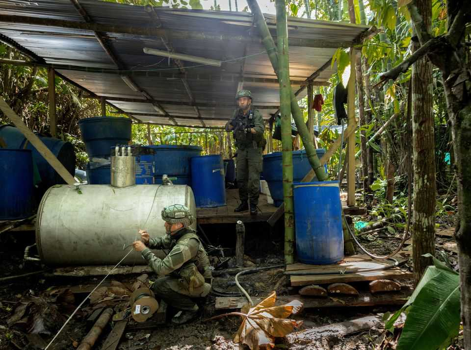
在佩特罗（Petro）总统2022年8月上任至2025年底期间，哥伦比亚政府声称共截获2,840吨可卡因，比前届右翼政府在相同时间段内截获的量增加了61%。然而这一数字仅凸显了毒品生产的庞大规模，而哥伦比亚的古柯种植面积也在同步扩张。据联合国毒品和犯罪问题办公室（UNODC）统计，2024年哥伦比亚可卡因产量达到历史最高的3,001吨，比前一年增长13%，且超过2021年（佩特罗上任前一年）的两倍以上。批评者将产量上升视为佩特罗政府失败的证据，其中最为直言不讳的当属特朗普。■
哥伦比亚可卡因出口量激增令美国总统特朗普大为恼火，因为特朗普将禁毒视为美国在拉丁美洲确立主导地位的所谓理由之一。在轰炸委内瑞拉并逮捕其领导人尼古拉斯·马杜罗（Nicolás Maduro）次日，特朗普警告称哥伦比亚的“可卡因工厂”可能成为下一个目标。去年，白宫已剥夺哥伦比亚在禁毒战争中的盟友地位，尽管目前安全合作仍在继续。自1月7日两位领导人通话以来，脆弱的停火协议得以维持。但这一局面可能在2月3日特朗普与佩特罗在白宫会面时破裂。在可卡因原料实验室，气氛紧张。■
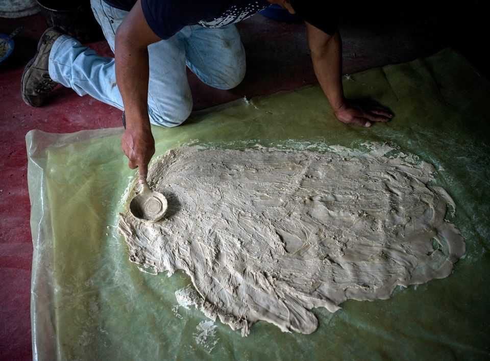
三名可卡种植者绝望地望着突击队员准备将一切付之一炬。“如果现在烧掉这些，你们就会剥夺我们唯一的生计来源，”其中一名种植者埃斯佩兰萨（Esperanza）指着塑料桶中浸泡在燃料里的叶子说道，这些叶子用于提取可卡因碱。她说自己要照顾三个孩子，却得不到政府任何援助。当政府打击犯罪集团时，可卡种植者往往成为意外牺牲品。这在很大程度上是因为说服埃斯佩兰萨和她的同行放弃种植可卡是一个缓慢的过程。这需要修建道路并建立市场来销售如可可和木瓜这类体积庞大的作物。相比之下，可卡膏买家会直接上门收购。此外，若附近有叛军活动，替代种植计划也难以奏效。据政府数据，到三月为止，他们已成功将30,500公顷可卡田转为其他作物，相当于哥伦比亚全国可卡田面积的12%。■
突击队过去三年内已突袭超过18,000个此类实验室。但他们的行动只能暂时中断生产，因为犯罪分子只需将另一批昂贵化学品运入丛林即可恢复。这是一项西西弗斯式的任务：随着哥伦比亚大面积种植可卡因作物，更多实验室不断涌现。而非直面问题根源，佩特罗先生更倾向于与传递信息者争执。他质疑联合国毒品和犯罪问题办公室（UNODC）自1999年以来采用的“不透明”方法，并阻止该机构发布最新报告，因其内容令他难堪。1月22日，他威胁要将UNODC（哥伦比亚政府为其提供资金）边缘化，称哥伦比亚警方将接管监控工作。此举可能损害哥伦比亚迫切需要的国际安全与反毒品合作。特朗普似乎对佩特罗先生极为反感。■
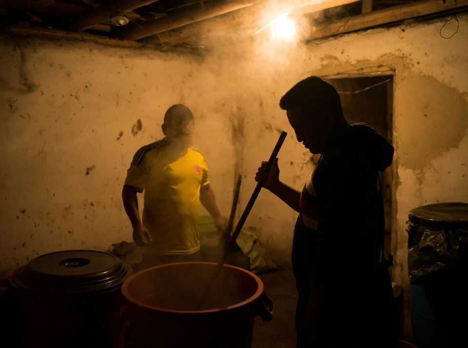
他称哥伦比亚总统为“非法毒品领袖”，并因涉嫌与贩毒集团有牵连而对他实施制裁。在会谈中，特朗普大概率会试图逼迫佩特罗续签联合国毒品和犯罪问题办公室（UNODC）合同，并终止其与贩毒集团的和平谈判。美国国务院称这些集团“助长毒恐分子”。厄瓜多尔右翼领导人丹尼尔·诺博亚（Daniel Noboa）同样试图迫使佩特罗对犯罪采取“强硬行动”。1月21日，诺博亚宣布对哥伦比亚进口商品征收30%的“安全关税”，引发贸易战。无论采取何种路径，当局大概率仍将落后于贩毒者一步。■
国际危机集团（International Crisis Group）布鲁塞尔智库的伊丽莎白·迪金森（Elizabeth Dickinson）表示，所有政策都“在原地踏步”。“我们没有任何真正能解决这一问题的方案。”只要可卡因的生产与消费仍属非法，且外部市场需求持续旺盛，哥伦比亚的制毒工厂将继续运转，毒品战争也将持续。目前，丛林中又少了一个可卡因实验室。丛林突击队（Comandos Jungla）将C4炸药投入简陋棚屋，片刻后黑鹰直升机（Black Hawk）升空，留下浓烟直冲青绿色古柯田上空。■ 注册订阅我们的专属新闻通讯El Boletín，了解塑造拉美这一迷人复杂地区的各种力量。
§028 美洲原题：The Panama Canal is a hinge point in Donald Trump’s new order · 板块：Americas · 栏目：美洲
美洲 | 港口与法庭 巴拿马运河是唐纳德·特朗普新秩序的关键支点 最近巴拿马最高法院的裁决揭示了“唐诺道”理论如何运作 经过一年的威胁和对美洲大陆霸权的宣言，唐纳德·特朗普“夺回”巴拿马运河的行动，终于取得成果。1月29日，巴拿马最高法院裁定，巴拿马港口公司（Panama Ports Company）与香港上市公司CK Hutchison集团签订的合同，违反巴拿马宪法。该合同赋予该公司运营运河两端港口的权利。
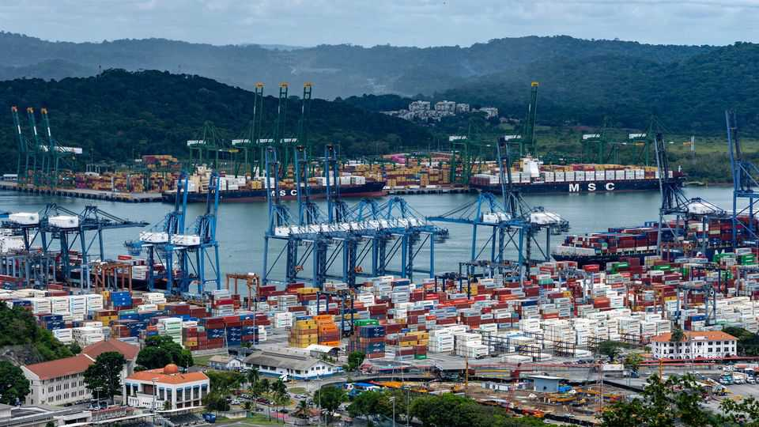
第二天，巴拿马总统何塞·拉乌尔·穆利诺表示，丹麦公司马士基旗下的APM Terminals将负责港口运营，直至新合同招标完成。很难想象，没有美国施加的压力，这一切会发生。美国国务卿马尔科·鲁比奥表示，美国对这一决定感到“鼓舞”。但巴拿马面临新的风险。去年三月，似乎特朗普的运河问题可能通过商业交易解决。一家西方公司联盟将作为与CK Hutchison更大交易的一部分收购港口。但中国抵制了此次出售。在交易截止日期到期后的三天，巴拿马总审计长办公室将涉及CK Hutchison的案件提交至最高法院。
许多巴拿马人对政府和司法体系似乎在迎合特朗普的意图感到愤怒。中国国务院港澳事务办公室（港澳办）称该裁决“荒谬”且“可悲”，并警告巴拿马将付出“沉重代价”。最高法院的裁决不可上诉，但可提交国际仲裁。2月3日，CK Hutchison表示将采取这一行动。此举可能带来双重代价，不仅在财务上，还可能损害巴拿马政界精英的声誉，这些精英在多个政府任期中都与CK Hutchison合作。中国还有其他手段进行反击。它可能决定限制巴拿马籍船舶的通行、削减对巴拿马的基建融资，或推进替代跨洋贸易路线的开发。穆利诺呼吁CK Hutchison在过渡期内“公开配合”。
但该机构仍有多种方式扰乱贸易。例如，它可能拒绝或延迟提供访问其专有软件的权限，而该软件用于管理港口终端。这一裁决也损害了巴拿马的投资吸引力。2023年，最高法院下令关闭Cobre Panamá（一家大型外资铜矿）。四个月后，巴拿马失去了投资级评级。此外，未来招标也存在隐患。马士基（Maersk）的子公司去年四月购入连接两大港口的铁路，并计划在过渡期间自行运营港口，这使其在新港口和液化石油气管道项目竞标中占据有利位置。这可能使巴拿马政府面临偏袒指控。或许为了避免此类指控，巴拿马运河管理局（ACP）——一家政府机构——于今年一月宣布了两个新港口和一条液化石油气管道的建设条件。■
此前曾表示，招标将向任何国家的企业开放。但若中国企业提交最具竞争力的报价，非洲、加勒比和太平洋国家集团（ACP）将面临压力，需想方设法以创新方式拒绝该报价，否则可能再度激怒美国。委内瑞拉独裁者尼古拉斯·马杜罗被逮捕、格陵兰主权威胁等事件引发全球关注，但特朗普对巴拿马施加的压力对美洲其他地区更具现实意义。小国往往易受制于大国。美国如今希望打造一个“无敌对外国渗透或关键资产被控制的西半球”。巴拿马或将成为该目标的范本。■
巴拿马律师托马斯·苏克雷·乌洛亚（Tomás Sucre Ulloa）指出，许多曾为CK Hutchison辩护的巴拿马政客如今正激烈抨击该公司，因为美国正对其施压。“法律并未改变，”他说，“但地缘政治环境却发生了变化。” ■ 注册订阅《El Boletín》，获取我们面向订阅者的拉美地区专属新闻通讯，深入了解这个复杂而引人注目的地区背后的诸多力量。
§029 美洲原题：After years of despair, Haiti has a sliver of hope · 板块：Americas · 栏目：美洲
海地正陷入紧张的倒计时，国家正接近一个失败的政治过渡进程的终点。原本旨在让海地在2024年帮派联盟攻占首都太子港后重归安全的计划，反而使局势进一步陷入混乱。《经济学人》发稿时，尚不清楚在2月7日过渡安排结束之后，谁将领导海地。
■
九人总统过渡委员会自2021年乔弗内尔·莫伊兹总统在卧室遭暗杀后，本应引导海地举行新选举，但该委员会成员却因谁应接任而争执不休。部分成员被指控勒索贿赂。与此同时，帮派肆意绑架、强奸和劫掠，导致数千名海地人丧生，超过140万人被迫流离失所。饥饿程度已接近战乱苏丹的水平。在唐纳德·特朗普正从多方面攻击联合国之际，其政府在海地与联合国密切合作显得尤为罕见。■
他们正积极打击帮派组织，同时努力说服海地分裂的政界人士搁置个人野心。“我们关注的是最基本的事物，”一位美国高级官员表示，“安全与稳定。”美国希望现任总理阿里克斯·迪迪尔·菲斯-艾梅（Alix Didier Fils-Aimé）在2月7日后继续留任。他由议会任命，但正面临部分议员施压要求其下台。已有四名议会成员因试图推翻菲斯-艾梅而受到美国制裁，他们被指控“纵容海地帮派破坏国家稳定”。2月3日，美国海军驱逐舰“斯托卡代号”（USS Stockdale）及数艘海岸警卫队巡逻艇抵达太子港湾，或许意在警告议会保持克制。■
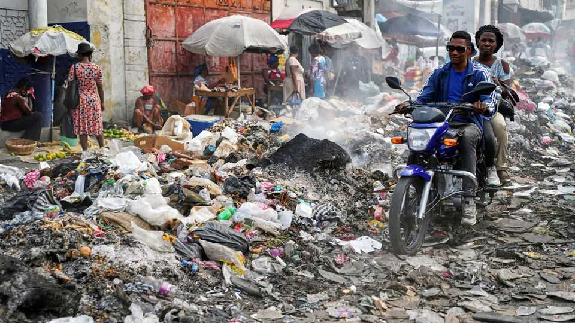
美国驻海地大使馆在声明中表示，军舰的出现“体现了美国对海地安全、稳定和更美好未来的坚定不移的承诺”。尽管如此，三名理事会成员于2月3日提出由三人共同担任总统，挑战外来势力的干预。菲尔斯-艾梅先生对外国势力的依赖及其与海地私营部门富裕精英的关联，使他面临民族主义者的指控，指责其为“白人”效劳——这是海地人对外国人的称呼。叛逃的理事会成员声称代表更激进的民族主义派系。在政客们争执不休之际，民生状况却日益恶化。首都机场已连续一年多禁止美国商业航班降落，城市主要公立医院也已关闭。■
去年因暴力事件关闭的学校超过1600所；150万儿童无法接受教育。根据联合国报告，2025年谋杀案数量超过8100起，比2024年增加了20%。自2022年以来，武装暴力已导致约1.6万名海地人死亡。海地1200万人口中近半数需要粮食援助。1月28日，法国慈善组织无国界医生（Médecins Sans Frontières）表示对强奸案数量激增感到“震惊和愤怒”。其性暴力诊所的接诊量自2021年以来增长三倍，每月超过250例。但实地局势可能正在发生变化。9月联合国批准成立新的帮派镇压部队（GSF），以取代由肯尼亚领导的效率低下的国际警察部队。■
由美国推动成立的加勒比地区安全部队（GSF）规模更大，人数达5500人，旨在承担更具进攻性的军事任务，配备更先进的装备和资源，包括无人机和空中支援。首批增援部队，主要来自乍得和斯里兰卡，预计将于4月抵达。与此同时，帮派首次陷入被动防守。这在很大程度上归功于海地警察、GSF以及约120名外国军事承包商组成的联合安全特遣队，该特遣队由美国公司Vectus Global受海地政府委托提供支持。特遣队已发起夜间突袭行动，直击帮派要害。“帮派从未遭遇过这种情况，”美国官员表示，“已经实施了多次非常有效的打击，关键在于能否持续保持这种态势。”很大程度上，答案取决于海地国家警察（PNH）。■
海地警察部门已启动招聘计划，计划今年新增4000名警官。此举将显著提升其目前仅13500人的警力规模，该数字远低于人口约1200万人国家的国际标准。警方称，自1月启动的反恐行动已使部分地区的帮派势力退缩，部分道路重新开放，流离失所者得以返乡。无人机被用作武器，针对帮派成员的无人机打击行动在3月至12月期间造成973人死亡，其中39人为无辜居民，包括16名儿童，联合国称。另一家美国安全公司Halo Solutions（海地警察部门）在1月21日发布的报告中表示，“当前行动代表PNH近年来开展的最持久安全行动之一。”民众欢迎任何进展，但必须期待其政界人士采取类似行动。■
订阅我们的订阅者专属通讯《El Boletín》，聚焦拉丁美洲，深入了解塑造这一迷人而复杂地区的各种力量。■
§030 中东与非洲原题：Donald Trump wants to end America’s half-century conflict with Iran · 板块：Middle East & Africa · 栏目：中东与非洲
1988年，一位来自纽约的商人和一位来自伊朗马什哈德的宗教领袖正互相怒视。特朗普称美国在波斯湾集结的军舰应“严厉对待伊朗”。“若我们的某位人员被击中一枪，”他说，“我将对卡赫尔岛进行报复，”这个半岛是伊朗主要石油出口终端所在地。当时担任伊朗总统（尚未成为宗教学者）的阿里·哈梅内伊毫不退缩，誓言要让这条水道成为美军的“坟场”。
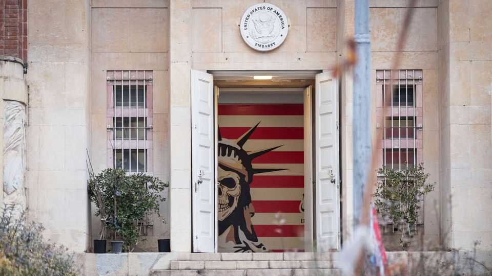
四十年前的对峙如今仍未消散，双方的言辞依旧如旧。特朗普（Trump）在伊朗政权无视其警告、本月屠杀示威者后，动用了他所谓的“美丽的舰队”向中东进发。哈梅内伊（Khamenei）则反唇相讥，警告美国总统不要轻举妄动。“美国应明白，若此次开战，将是一场地区性战争。”他2月1日如此表态。特朗普希望这场对峙成为双方的最后一次交锋。伊朗从未显得如此脆弱。通过言辞或武力，总统希望终结美国与伊斯兰共和国长达半个世纪的冲突。至于哈梅内伊，他似乎陷入僵局，固守着过时的世界观。这两位固执老者的较量将塑造中东数十年的格局。美国日益扩大的军事部署表明，它正酝酿着一场重大行动。■
亚伯拉罕·林肯号航母（USS Abraham Lincoln）于1月下旬抵达该地区，额外的加油舰已抵达波斯湾。战斗机、驱逐舰和防空导弹阵地均已部署到位，旨在应对伊朗的反击。然而，尽管特朗普总统不断夸大军力优势，他似乎仍对动用武力犹豫不决。其全职特使史蒂夫·威特科夫（Steve Witkoff）将于2月6日赴阿曼与伊朗外长阿巴斯·阿拉奇（Abbas Araghchi）会面。此次会面是在埃及、土耳其及海湾国家紧急外交努力后安排的，这些国家均不希望爆发地区战争。这表明任何美国军事行动仍可能推迟数日或数周——尽管伊朗人记得去年夏天特朗普曾以谈判为幌子，随后却轰炸了其核设施。外交斡旋能否成功，很大程度上取决于两位领导人。■
哈梅内伊自1989年成为最高领袖以来，其目标变化不大。他致力于确保伊朗神权体制的存续，在他看来，这需要彻底放弃任何妥协，无论是国内的政治改革还是对美国采取更温和的外交政策。但两年动荡后，这种僵化立场已使他陷入困境。盟友遭挫败，核计划无法继续浓缩铀，政权在国内备受唾弃，面对经济与环境灾难却镇压抗议者。哈梅内伊曾长期担忧让步会导致体制崩溃，但拒绝妥协反而进一步削弱了政权。在许多方面，特朗普似乎与他截然相反，是个没有固定意识形态的人。然而，他仍有一些长期困扰他的议题（如贸易逆差）推动其政治主张。■
其中一种观点认为，伊朗领导人总能占尽上风，让美国那些优柔寡断的领导人显得尴尬——正如他在1988年所说：“让我们看起来像一群傻瓜。”自吉米·卡特总统以来，伊斯兰共和国一直让每任总统都感到棘手。特朗普希望成为终结这一局面的人。“对特朗普而言，总是1980年代。”一位华盛顿的亲和政策人士如此评价。不过他对如何具体解决冲突持灵活态度。异常乐观的惠特科夫先生希望达成协议。美国官员坚持认为，协议必须比2015年伊朗与世界大国达成的核协议走得更远，甚至比去年夏天伊朗-以色列战争前他们试图谈判的协议还要深入。他们表示，该政权不仅要限制核计划，还需削减弹道导弹项目和对阿拉伯民兵组织的支持。
伊朗坚持称不会与美国就后两个问题进行讨论。2月1日，阿雷格奇先生在接受CNN采访时表示，只有当美国不就非核问题提出“不可能实现”的让步时，才可能达成协议。该地区一些外交官希望找到创新性解决方案。或许伊朗可以先与美国就其核计划进行讨论，随后再与美国在该地区的盟友讨论其他议题，而美国原本希望邀请这些盟友参加在阿曼举行的会谈。然而伊朗也拒绝了这一提议：哈梅内伊先生依然顽固不化。任何与伊朗达成协议的可能性在华盛顿都将引发强烈不满，即便是在特朗普盟友中亦是如此——尤其是在近期暴力事件之后。随着美国准备展开谈判，华盛顿普遍认为这些谈判将告失败。真正的问题不在于特朗普是否会打击伊朗，而在于他将何时、以何种方式对伊朗发动打击。■
几周前，人们普遍认为他可能选择象征性打击，主要为了避免与奥巴马的不光彩对比——2013年奥巴马未能在叙利亚化武使用问题上执行其红线。但僵局持续时间越长，最终美国打击行动越可能规模庞大。“特朗普不可能将这些资产全部运往该地区只为轰炸一些空荡的革命卫队基地，”一位海湾地区的西方外交官表示。如今许多观察家认为他可能针对哈梅内伊等高层领导人。这或许会迫使政治变革发生，但具体形式仍是个谜。■ 注册《中东简报》，每周获取关于这个复杂且关键地区的深度分析。
§031 中东与非洲原题：Two countries have changed their position about war with Iran · 板块：Middle East & Africa · 栏目：中东与非洲
“我们已做好准备，随时待命。”唐纳德·特朗普于1月2日表示，承诺美国将出手援助因政权而抗议的伊朗民众。一个月后，数千名伊朗民众死亡，中东地区仍在猜测这位美国总统是否会兑现承诺。伊朗最高领袖阿里·哈梅内伊誓言，若美国发动空袭，将引发地区战争。起初，中东地区鲜有国家渴望进一步冲突。该地区的权力掮客试图劝阻美国采取军事行动。
■
但目前的态度似乎更加复杂。以色列，美国最亲密的盟友，最初反对对伊朗发动袭击。以色列担心任何攻击只会象征性地打击伊朗，反而可能引发伊朗向以色列发射导弹，而犹太国家尚未准备好再次开战。其总理本雅明·内塔尼亚胡（Binyamin Netanyahu）通常对伊朗持强硬立场，却出人意料地保持谨慎。他在1月对《经济学人》（The Economist）表示：“革命最好从内部开始。” 一个月后，以色列却敦促美国发动袭击。其军方高层已飞往华盛顿讨论袭击计划。2月3日，特朗普的特使史蒂夫·威特科夫（Steve Witkoff）与内塔尼亚胡会面，后者试图说服他，与伊朗达成协议毫无意义。沙特阿拉伯的立场也似乎变得更加微妙。该国最初警告美国不要发动袭击，称不会允许美军使用其领空。
以色列更希望美国按兵不动，但如果美国决定出手，至少希望参与作战计划的制定。据称，1月30日，国防部长卡利德·宾·萨勒曼亲王（Prince Khalid bin Salman）向美方官员表示，如果袭击行动不发生，“只会助长伊朗政权的气焰”。造成以色列立场变化的因素有多个。一方面，它对美国近期在中东地区军事部署的规模感到安心。阿伯拉罕·林肯号航母（USS Abraham Lincoln）及其强大空中作战群抵达阿拉伯海，另有额外战斗机中队部署至地区基地，这意味着特朗普现在拥有发动持续空袭行动的选项，而非仅限于对伊朗抗议者表达有限支持的象征性姿态。■
同样重要的是，美国还向伊朗部署了防空导弹系统，进一步增强对伊朗可能发动的导弹和无人机报复的防御能力。另一方面，美国对伊朗与美国之间可能的谈判结果感到担忧。在去年1月抗议活动达到高潮时，伊朗政权曾显得脆弱。以色列和沙特担心，如果达成协议，尤其是包含缓解严苛美国制裁的内容，可能会为德黑兰政权提供一条生存之路。目前尚不清楚这些谈判将聚焦哪些议题。过去谈判主要围绕伊朗的核计划展开，该计划在去年6月以以色列和美国联合发动的12天战争中遭到严重破坏。伊朗曾坚持拥有浓缩铀的权利；如今可能愿意在这一问题上做出让步。
但其政权仍坚决反对任何有关限制其弹道导弹计划或资助其代理人武装在该地区活动的讨论。以色列和沙特担心，特朗普不会趁伊朗处于弱势时推动全面协议，而是仅以核武器限制为交换条件放其一马。他们并非唯一在游说美国的国家。土耳其反对任何军事干预，其与伊朗共享534公里边境，担心邻国战火可能引发难民潮。土耳其外长哈坎·菲登敦促美方继续谈判，建议“逐项与伊朗达成协议，先从核问题开始”。土耳其总统雷杰普·塔伊普·埃尔多安已展开地区访问，会见沙特和埃及领导人。若美国选择外交途径，土耳其几乎肯定将成为其主要伙伴。■
但如果美国对伊朗发动攻击，以色列几乎肯定会卷入其中。土耳其政府的影响力自2024年底叙利亚革命以来稳步上升，与那里的新政府关系密切。对内塔尼亚胡而言，特朗普将埃尔多安视为阿萨德政权倒台的功臣，这令他感到恼火，而以色列总理则认为以色列对黎巴嫩真主党的袭击导致了阿萨德政权的倒台。土耳其与卡塔尔正试图为加沙地带的哈马斯达成一项裁军协议。与此同时，以色列对土耳其的意图及其与哈马斯领导层的联系深感怀疑。这一切并非在真空中发生。该地区仍在过去两年战争的余震中。特朗普进一步搅动了局势。联盟关系正在发生变化。在取得军事胜利后，以色列自视为该地区的霸主。■
伊朗如今似乎比以往任何时候都更弱。地区影响力竞争正在加剧。一场地区战争将引发混乱，但同时也可能带来新的机遇。■ 订阅《中东简报》，每周获取关于这片充满魅力、复杂且影响深远地区的最新动态。
§032 中东与非洲原题：The violence in Iran could lead to civil war · 板块：Middle East & Africa · 栏目：中东与非洲
“一位君主应当令人畏惧，”尼科洛·马基雅维利写道，但“他必须努力避免招致憎恨”，否则终将自取灭亡。以此标准衡量，伊朗最高领袖阿里·哈梅内伊显然未能做到。随着网络封锁的帷幕略有松动，镇压抗议所引发的暴力事件正激化民众愤怒，而非恐惧。人权组织确认近期抗议中至少有6,500人死亡，另有17,000人死因正在核实。英国的反对派电视台“伊朗国际”（Iran International）则将死亡人数推高至逾36,500人。■
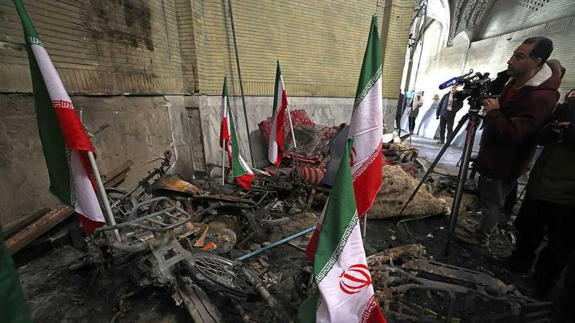
亲属们翻找着装满遗体的袋子，然后支付子弹费用以寻回亲人遗体。目击者描述抗议活动及其镇压后的惨状宛如战场，银行、清真寺和安保车辆被焚毁、翻倒。有人称伊朗第二大城市马什哈德（Mashhad）的大学博物馆已成废墟。“一切服务于专制与控制的设施都被摧毁了。”一名抗议者说道。政权对死者的羞辱正在激化已转向暴力的公众。即便美国不介入对抗该政权，如此流血冲突后伊朗如何维系国家统一？1月8日数小时内，抗议者曾控制德黑兰及其他城市街道。“街道无法正常通行。”
这里到处是火光，散落着碎砖、石块和废墟。当我们行进时，人们折断了所有交通标志杆，砸碎了许多，还点燃了所有垃圾桶。所有交通监控摄像头都已损坏。‘这一切都令人震撼，是美丽的破坏景象，’同一名抗议者回忆道。据多方报道，戴着面具的男子手持刀具杀害了巴吉斯（basijis），即政权的志愿治安民兵。‘这已经是一场内战了，’马什哈德的一位年轻女性说，‘只是我们不说而已。’对国家暴力解体的恐惧是否会让伊朗人重新回到临界点？截至目前，几乎没有迹象显示这一点。这个多民族、多宗教的大国内部的分歧正在加剧。伊朗统治者及其对手互相指责对方雇佣雇佣兵：抗议者称是伊拉克什叶派民兵，政权则称是以色列特工。双方都威胁要采取更多暴力行动。■
雷扎·帕尔拉维（Reza Pahlavi），前国王之子，强调伊朗民众有权捍卫自身免受政权压迫，并敦促美国采取军事行动。政权浸透在鲜血中，似乎对妥协毫无兴趣。哈梅内伊的混合政教合一与民主体制已演变为安全国家。无人机在天空巡逻，手机抽查揪出疑似同情者。三周的互联网断网重创数字经济，加深伊朗经济孤立与困境。1月27日里亚尔兑美元创历史新低。最初官方对示威者经济困境的表态已消失。如今所有反对者皆被贴上“恐怖分子”标签。忠诚的改革派反对力量因马苏德·佩泽希安当选总统而被中立化，更勇敢的声音已被噤声。■
哈桑·鲁哈尼（Hassan Rouhani），这位曾挑战伊斯兰革命卫队（Islamic Revolutionary Guard Corps）和最高领袖的前总统，据称已被软禁在家。其盟友亦被施以旅行禁令。与此同时，伊朗内外的君主派人士日益认为，对一个愿意大规模镇压的政权进行抗议是徒劳的。许多人对军队或警察倒戈的可能性失去信心，正如叙利亚民众曾反抗阿萨德政权时的情形。尽管美国军事力量持续增强，但政权的反对者仍质疑唐纳德·特朗普（Donald Trump）是否会兑现帮助他们的承诺。相反，抗议者与流亡的反对派日益倾向于拿起武器为死者复仇。■
洛雷斯坦和伊勒姆（Lorestan和Ilam）——这两个曾爆发抗议的边缘省份，部落忠诚度依然盛行，武器仍被珍视——的长者们如今身着军装、手持步枪，在社交媒体上誓言复仇。一名东部城市的学生忧心忡忡地说：“下次我的表兄弟们会说，他们要把汽油弹换成机枪。”一位通常举止优雅的德黑兰抗议者则表示：“这场屠杀，必须让其中每一个人都付出生命。”抗议者是否会像利比亚和叙利亚那样，因政权暴力而演变为武装叛乱组织？一些海外君主主义者正琢磨如何将武器走私进伊朗，并寻求以色列协助。■
阿拉伯之春（2010-12年）期间，中东其他国家诉诸武力引发的十年内战、大规模人口流离失所以及中等收入国家的毁灭，似乎并未引起足够关注。过去，伊朗的抗议者多为中产阶级，但贫困削弱了他们的力量，如今抗议者更多来自政权曾视为支柱的阶层。许多曾支持强硬派民粹主义前总统马哈茂德·艾哈迈迪内贾德的民众，如今转而支持巴列维家族成员，据一位流亡英国的伊朗记者称。他们正抛弃宗教象征，转而使用君主主义标志——狮子与太阳，其口号和话题标签公开反伊斯兰。如“每个路灯杆上都站着一位神职人员”、“烧毁《古兰经》”等。■
在这场风波中，那些曾领导早期和平抗议并坚持争取代表权斗争的群体的声音正被淹没，这场斗争可追溯至1906年伊朗宪政革命。改革派和反对派呼吁释放政治犯——其中许多人支持民主共和国——的声音已逐渐消退。海外反对派卫星频道忽视了米尔·霍萨因·穆萨维（Mir Hossein Moussavi）——这位曾被软禁15年的前总统候选人——呼吁哈梅内伊及其帮凶下台的请求。泼冷水的人谴责任何寻求改革的人，甚至那些主张民主而非君主制的人。“他们只想要巴列维，”一位参与2022年反对强制戴头巾的女性抗议活动的教师说，“他们不让我们说话。”对复仇杀戮的恐惧正在蔓延。许多人预测资本和人口将外流。■
土耳其称正在考虑设立缓冲区以应对难民涌入。特朗普能否打破僵局？他的舰队正集结在伊朗海岸外。哈梅内伊先生据说已移居加固的地下掩体，以防备美军袭击。西方国家曾成功推翻伊朗领导人。20世纪，英美两国联手策划了三次政变，分别发生在1921年、1941年和1953年。但对这些政变的不满情绪部分催生了1979年的革命。外部干预引发的后果难以预料。西方推翻伊拉克和利比亚独裁者后引发的混乱也提供了警示。此外，哈梅内伊的下台恐怕难以满足政权反对派的要求；他们希望他所建立的体系能与他一同崩塌。■
与此同时，伊朗的统治者们也看到了削弱统治阶层的后果，正如2003年萨达姆·侯赛因政权被推翻后伊拉克所经历的那样。在伊朗，他们同样会竭力捍卫自身权力和资产。无论如何，混乱将不可避免。■ 注册《中东简报》，每周获取关于这个复杂且具有深远影响地区的重要信息。
§033 中东与非洲原题：The reopened Rafah crossing in Gaza brings pitiful gains · 板块：Middle East & Africa · 栏目：中东与非洲
理论上，加沙正走向复苏。唐纳德·特朗普的“和平委员会”已任命由巴勒斯坦技术官僚组成的委员会——加沙行政委员会（NCAG）——取代哈马斯，负责管理这片地带。在达沃斯世界经济论坛年会上，其女婿贾里德·库什纳展示了该地带的精美重建蓝图，图中描绘着璀璨的海滨长廊。以色列已解救所有人质，无论生死，为总统和平计划的第二阶段——重建——扫清了道路。
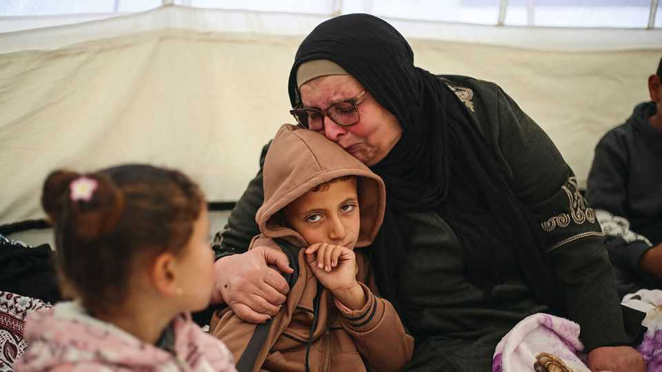
2月2日，以色列重新开放了与埃及的拉法口岸，该口岸自2024年5月起基本关闭。现实情况更为严峻。停火协议生效后，以色列的空袭已导致加沙地带约500名巴勒斯坦人死亡。更多物资进入加沙地带，但许多商品如番茄仍属奢侈品。逾100万人仍滞留在废墟或帐篷中，电力供应极少。严重呼吸道感染病例正迅速上升。以色列要求无国界医生等救援组织撤离，因其拒绝在未获保证不会成为袭击目标的前提下提供员工名单。（此前以色列曾指控联合国巴勒斯坦难民救济工程处员工参与了10月7日的屠杀。）拉法口岸原计划在10月停火协议达成后不久即开放。■
■ 以色列允许仅五名患者和七名亲属离开（约2万名加沙居民急需海外医疗救助）。当天登记返回加沙的50人中，仅有三名女性和九名儿童获准入境。他们称跨境过程耗时超过15小时，并面临欧洲监测员、与以色列有关联的巴勒斯坦民兵组织以及以色列暴徒的盘查。这些暴徒对他们进行蒙眼、手铐束缚并审问。根据停火协议，哈马斯同意将权力移交民族共识政府（ncag）。以色列至今未允许该委员会进入加沙。该委员会既无资金也无银行账户，成员们目前滞留在开罗酒店。试图通过展示基于巴勒斯坦权力机构（pa）标志的徽章来增强合法性之举，在以色列抗议后迅速被取消。巴勒斯坦总统马哈茂德·阿巴斯坚持要求该组织的所有资金必须经由他流转。
美国和以色列的公司正将目光投向阿联酋（UAE），希望其为重建项目支付费用。但2月2日，阿联酋否认了相关计划。特朗普的特使史蒂夫·威特科夫仍在穿梭于耶路撒冷，试图说服以色列不要阻挠其老板对加沙的愿景。恶性循环仍在持续。以色列表示，除非哈马斯解除武装，否则加沙无法实现任何实质性进展。以色列表示，只有在国际稳定力量完成解除该组织武装并实现加沙非军事化后，才会从加沙撤军。然而，这支国际力量尚未出现。与此同时，哈马斯可能正在重新考虑其解除武装的承诺。它指出，西岸地区因以色列的经济封锁而陷入困境，尽管以色列与该地区保持密切安全协调，但西岸地区仍濒临崩溃。■
2月3日，加沙一名枪手袭击了以色列巡逻队，导致一名军官受伤。以色列随即发动空袭，造成20人死亡，并短暂关闭了拉法口岸。■ 注册《中东简报》(Middle East Dispatch)，每周获取关于一个充满魅力、复杂且具有重大影响的地区的最新动态。
§034 中东与非洲原题：Ethiopia inches ever closer to war · 板块：Middle East & Africa · 栏目：中东与非洲
如今，这一幕已屡见不鲜。银行外排起长队，但现金却迅速耗尽。货架空空如也，物价飞涨，居民疯狂囤积食物。过去一年中，提格雷州（埃塞俄比亚最北部地区）居民至少经历了三次类似场景，每次都惶恐不安地担心新一轮战争爆发。据估计，2020至2022年上次冲突中已有数十万人丧生。对再次爆发战争的担忧正与日俱增。最近一次紧张局势升级是迄今为止最危险的一次。 ■
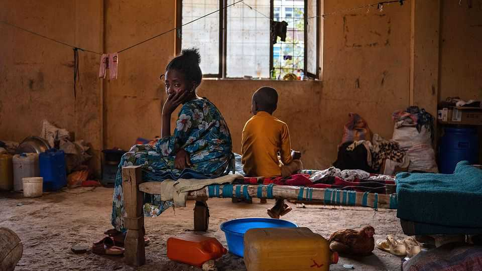
1月29日，埃塞俄比亚军队与提格雷人民解放阵线（TPLF）支持力量发生冲突后，提格雷执政党宣布暂停所有进出提格雷的航班。两天后政府无人机对中央提格雷地区目标发动袭击。提格雷临时总统塔德塞·韦雷德称当前冲突"宛如全面战争"。不过目前这种局面似乎已被避免。塔德塞表示其部队已从周末占领的部分地区撤出，强调"分歧……可通过对话解决"。2月3日航班恢复运营，但进一步暴力风险依然令人担忧。■
2月3日，埃塞俄比亚总理阿比·艾哈迈德（Abiy Ahmed）在议会演讲中称，提格雷人民解放阵线（TPLF）由“叛徒”组成，正试图“瓦解埃塞俄比亚”。一名TPLF官员表示：“埃塞俄比亚军队已全面动员，如果阿比不停止当前行动，这场战争将可怕至极。”当前危机的根源可追溯至此前的冲突。2018年上任后，阿比迅速集结了对TPLF怀有不满的武装力量，意图取代其在埃塞俄比亚政坛的主导地位。其盟友包括埃塞俄比亚阿姆哈拉地区（Amhara region）的民族主义民兵。2020年底战争爆发后，阿姆哈拉民兵占领并清洗了西提格雷地区（Western Tigray），数以十万计的提格雷人被迫逃离家园。■
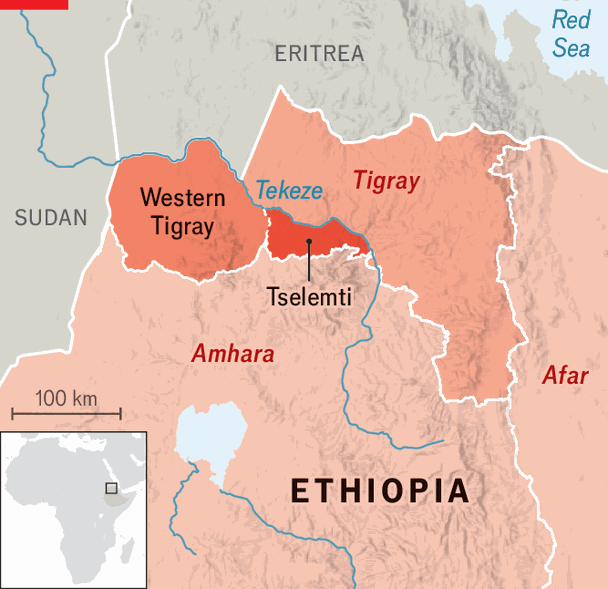
大多数流离失所者至今仍滞留在提格雷州其他地区条件恶劣的难民营中。2022年签署的和平协议本应为后续谈判铺路，使流离失所者得以返乡，最终解决领土争端。但2024年少数返回家园的提格雷人却遭遇阿姆哈拉民兵的恐吓与虐待，其余多数人因恐惧而不敢返回。阿比总理对提格雷人民解放阵线（TPLF）要求夺回被阿姆哈拉占据的领土的诉求予以拒绝。上周TPLF武装力量意外渡过特克泽河进入特塞莱米蒂（见地图），官方称其仅是就埃塞俄比亚军队虐待返乡提格雷人一事提出抗议。但有消息人士推测，其真实意图可能是占领战略要地或试探埃塞俄比亚军队防线。■
阿比总理长期担忧TPLF计划通过武力夺回西提格雷，这将使该组织能够向苏丹盟友开辟补给线。其政府似乎将部队越境视为大规模攻势的前奏。据称埃塞俄比亚军队正向提格雷边境调动大量兵力和武器。与此同时，提格雷南部仍在TPLF与亲政府民兵组织之间持续交火。1月30日，非洲联盟（AU）公开表示愿在埃塞俄比亚政府与TPLF之间进行调解。据熟悉双方对话的知情人士透露，埃塞俄比亚私下回应称非洲联盟应停止干涉其内政。阿比总理圈内部分人士或许认为现在正是对TPLF采取更严厉措施的时机。但这并不意味着战争即将爆发。■
双方都有充分理由保持谨慎。提格雷人民解放阵线（TPLF）因多年内斗而元气大伤。阿比·艾哈迈德（Abiy Ahmed）则面临诸多敌人——包括日益亲近TPLF的邻国厄立特里亚。然而，埃塞俄比亚的危机也与苏丹内战及外部势力间的竞争交织在一起，这些外部势力正是冲突的推手。提格雷再起战事恐怕将引发区域性灾难。有实力者应趁尚有余力时推动和平。■ Sign up to the Analysing Africa , a weekly newsletter that keeps you in the loop about the world’s youngest—and least understood—continent.
§035 中东与非洲原题：American aid to Africa comes with more strings attached · 板块：Middle East & Africa · 栏目：中东与非洲
通过WhatsApp下达指令后，由美国公司Zipline运营的自主无人机可将血液、疫苗和必需药品通过降落伞投送到加纳、科特迪瓦、肯尼亚、尼日利亚和卢旺达境内1.5万个诊所。该公司扩张计划由一项价值1.5亿美元的新类型美国援助协议资助，该协议要求国内共同投资。该公司非洲业务负责人凯特琳·伯顿表示，这种以绩效挂钩的合同是援助方式的一次积极转变。 ■
直升机医疗公司Zipline是美国对非洲新健康援助模式的受益者之一。这种模式是在美国国际开发署（USAID）一年前被迫关闭后逐渐形成的。自9月起，特朗普政府展开了一系列双边健康协议谈判，已与十余个非洲国家签署价值约110亿美元的协议，目标是达成更多类似协议。"美国优先"的全球卫生战略摒弃以需求为基础的非政府组织（NGO）资助模式，转而采用以交易为核心的协议，以推进美国的商业、安全和意识形态利益。在为期五年的协议中，美国承诺采购药品、疫苗等物品（某些项目价值数十亿美元），并支付部分医护人员费用。协议重点强调预防艾滋病、结核病、疟疾和脊髓灰质炎，同时提升疾病爆发的监测与报告能力。■
作为交换，非洲国家被期望购买美国产品、向美国开放健康数据，并将政策与白宫的健康议程对齐。无论新协议总额达到多少，其规模很可能只是美国过去援助支出的一小部分。美国华盛顿全球发展中心最近对八项协议的分析显示，这些协议实施第一年，这些国家面临的美国健康支出平均比2024年下降49%。此后支持金额预计会大幅下降，随后逐渐减少。美国战略与国际研究中心（CSIS）的奥吉·奥努博古（Oge Onubogu）表示，这一过程“混乱且快速推进”，很可能会在非洲产生明显的赢家和输家。资源丰富、矿产充足或地理位置重要的国家将拥有更多筹码，而其他一些国家可能面临更苛刻的条件。■
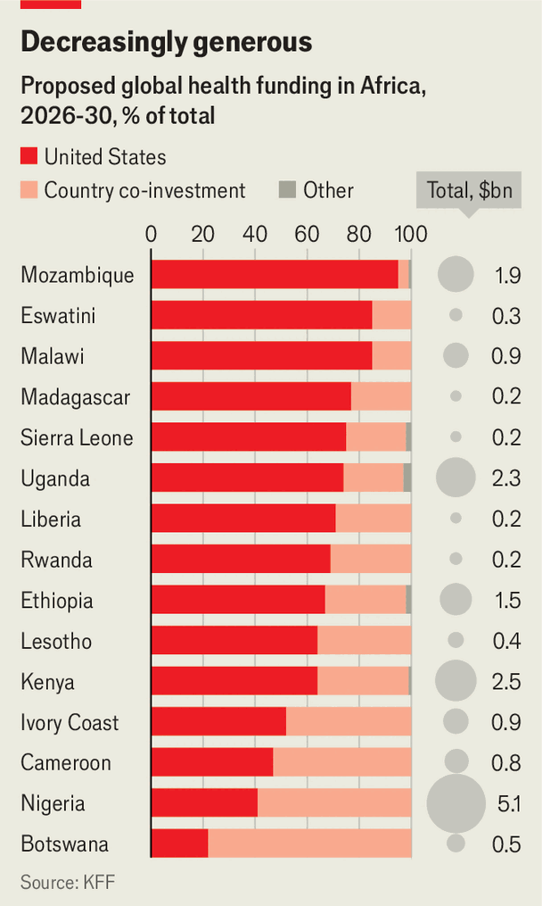
例如，在赞比亚，一项交易的达成依赖于另一项协议的通过，该协议允许美国获得矿产资源。在尼日利亚，这个拥有2.3亿人口的宗教多元国家，一项价值21亿美元的协议因美国强调通过基督教医疗机构提供护理而引发反弹。肯尼亚一项价值16亿美元的交易正等待审查，因担忧缺乏议会磋商以及政府可能通过提供患者健康记录访问权限而违反数据保护法。华盛顿乔治城大学的劳伦斯·戈斯顿（Lawrence Gostin）表示，这种交易性做法抛弃了基于“同情与关怀”的全球援助历史。共同投资的要求应促使非洲各国政府增加卫生支出，而该支出在大陆大部分地区长期不足。
肯尼亚需通过自身增加8.5亿美元支出以满足16亿美元的援助计划，尼日利亚则须在五年内将卫生预算提升30亿美元。从原则上说，这是件好事。但令人担忧的是，一些财政紧张的国家可能被迫向美国筹措关键医疗资金，从而不得不借入高成本贷款以支付其应缴份额。这些资金还附带意识形态条件。美国于1月23日公布的规则将限制堕胎服务获取，并限制用于推动多样性、公平与包容性项目的支出。这些规定是对“全球 gag 规则”的扩展，该规则通常由共和党政府实施，而民主党政府则予以废除。早期版本禁止向提供或讨论堕胎服务的外国组织提供计划生育资金，主要影响避孕服务提供者。
特朗普政府首次扩大了该规定，涵盖所有由外国非政府组织提供的卫生援助。新规定则覆盖所有非军事援助渠道，包括人道主义灾难救援和经济援助。该规定适用于任何获得美国资金的组织，这一类别被认为包括国家政府。政府可能仍可被豁免。即便如此，要证明它们未间接支持提供堕胎或避孕服务的诊所仍将困难重重，这增加了行政障碍，也使美国得以通过扣留资金施加影响。MSI（生殖权利慈善机构）的贝丝·施拉彻（Beth Schlachter）表示，在乔治·W·布什总统任内，更有限的规则曾与26个非洲国家避孕使用量下降14%、流产数量上升40%（其中大部分为不安全流产）相关联。■
更紧迫的是，将意识形态条件附加到援助计划中很可能会阻碍迅速向急需帮助的人提供援助，例如因南部非洲洪水流离失所而面临霍乱威胁的30万人。特朗普政府以美国优先为政策，可能失去难以挽回的信任。■ 注册《分析非洲》（Analysing Africa），每周获取关于世界最年轻、最不为人知的大陆的最新动态。
§036 中东与非洲原题：Hundreds die in a mine collapse in Congo · 板块：Middle East & Africa · 栏目：中东与非洲
刚果民主共和国东部发生矿井坍塌事故，至少200人，包括儿童在内遇难。鲁巴亚矿场（Rubaya mines）拥有全球15%的钶钽铁矿（coltan），该矿物用于手机制造，其中大部分为非法开采。由卢旺达支持的M23叛军组织自2024年起控制这些矿场。刚果政府称其在12月与美国达成矿物交易协议，将事故归咎于叛军，指控其代表卢旺达盗采矿产。有证据表明刚果矿产经由卢旺达出口，而卢旺达予以否认。刚果全国采矿条件恶劣。
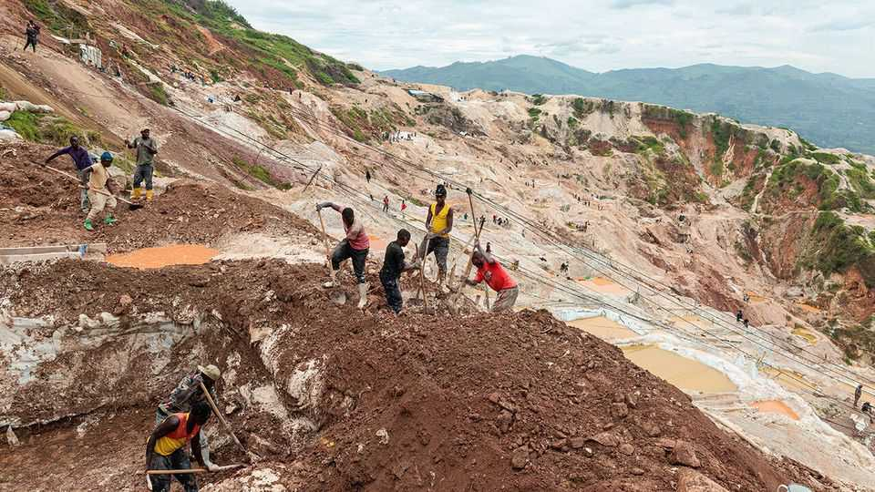
■
事故频发。■ 订阅《Analysing Africa》电子周刊，了解世界最年轻且最不为人知的大陆的最新动态。
§037 欧洲原题：Can Europe do nuclear deterrence without America? · 板块：Europe · 栏目：欧洲
特朗普对格陵兰岛的争夺重燃了旧有争论：是否应有更多欧洲国家寻求拥有核武器？以瑞典为例。冷战期间，该国曾秘密发展核武器。但近几十年来，瑞典一直倡导裁军。然而1月10日，瑞典最大报纸之一《今日新闻》（Dagens Nyheter）提议启动一项“联合北欧”核计划，可能与德国合作。瑞典公共广播公司（SVT）的马茨·克努特森（Mats Knutson）表示：“我们现在看到的可能是政治转向的最初迹象。” ■
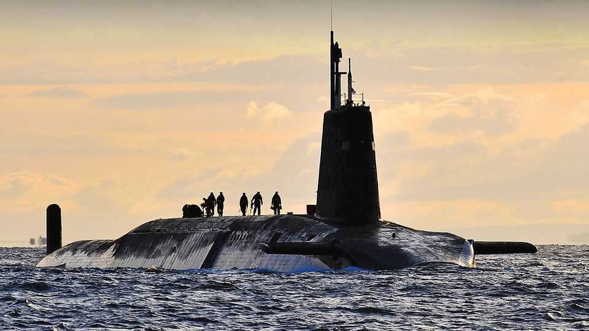
类似的争论正在其他地区悄然升温。国际战略研究所（International Institute for Strategic Studies）的亚历山大·博尔弗拉斯表示：“在德国，核武器曾存在真正的禁忌，直到去年才有所改变。”如今，政界人士正悄然讨论如何对美国核保护伞的撤回进行对冲。去年，波兰总理唐纳德·图斯克表示，他的国家可能也需要核武器。尽管有诸多讨论，欧洲大陆现存的两个核大国却出现了最重要的变化。英国长期以来将核武库承诺给北约，而法国虽未加入，但自20世纪70年代以来，每位法国总统都承认核武器对国家利益的“欧洲维度”。当总统埃马纽埃尔·马克龙于2020年提议与欧洲盟友讨论该议题时，却遭到普遍忽视。■
当时，美国的“扩展威慑”政策——即承诺动用核武库保护盟友——仍广受信任。但去年3月，时任总理候选人弗里德里希·默茨（Friedrich Merz）表达德国的立场后，马克龙表示正开启“关于以威慑手段保护欧洲大陆盟友的战略讨论”。法国在国家安全战略评估中正式表达了这一意图。法国最接近做出具有约束力承诺的举措是2025年7月与英国签署的诺斯伍德宣言。1995年的切克斯双边宣言曾声明，一国“核心利益”受威胁即视为另一国利益受威胁，但去年的承诺更进一步。英法两国同意协调核武使用，并声明“欧洲面临的任何极端威胁都将促使两国采取行动”。
两国成立了一个由高级外交和军事官员组成的核指导小组，该小组于12月在巴黎举行会议。法国首次邀请英国观察其“Poker”模拟演习，这是其每季度展示空中战略核力量的演练。一名法国防务官员称此举标志着自诺斯伍德以来建立的“强双边信任”。马克龙即将发表另一篇关于法国威慑力的演讲，他已明确排除任何改变该国完全独立发射权的可能。■
这并未阻碍与欧洲其他国家，尤其是德国的深入对话。法国战略研究基金会（FRS）副所长布鲁诺·特特拉伊斯（Bruno Tertrais）表示：“这类事情进展非常缓慢。”“但德国在高层层面已表现出愿意考虑五年前几乎不可想象的选项。”欧洲官员对具体选项内容保持谨慎。1月25日，瑞典首相乌尔夫·克里斯特森（Ulf Kristersson）表示，他已与法国和英国就核武器合作进行初步讨论，但称“目前对话尚不具体”。其中一步可能是马克龙更明确地界定法国核心利益中的欧洲维度。另一可能举措是与欧洲其他国家空军联合进行核打击演习（2022年意大利加油机曾参与法国“扑克”演习）。■
这将为战时合作奠定更坚实的基础。法国国家科学研究中心（FRS）的埃蒂安·马克祖（Etienne Marcuz）和埃马努埃尔·马特（Emmanuelle Maitre）认为，其他国家最终可能为法国的核潜艇提供海军支持，或为法国的核武战机提供打击支援。瑞典和芬兰的战机已开始为当前的北约核共享行动提供此类支援，该行动涉及美国的战术核武器。进一步而言，法国可将具备核打击能力的战斗机中队部署至德国或其他欧洲国家，正如去年他们在瑞典和波兰的行动中曾如此操作（当时并未携带核弹头）。最激进的方案则是效仿现有北约机制，在盟国预置空射核武器。■
美国官员对英国或法国规模远小于自己的核武库能够取代美国保护伞的设想表示不屑。他们认为，扩展威慑需要一支规模庞大且精确的核武库，能够在俄罗斯导弹发射前就实施打击，从而限制提供安全保障的国家所受损害。唯有如此，才能让动用核武器保卫外国领土的承诺具有可信度。法国学者则援引该国“严格足够”（strict sufficiency）的核弹头政策，反驳称这种观点是冷战时期的教条。德国许多人士“认同法国的论点……认为法国的承诺更具可信度”，因为其地理位置更近，正如博尔弗拉先生所言，“即便其作战能力稍逊一筹”。未言明的问题在于，可信度本身也可能发生变化。■
法国目前最受欢迎的政党是极右翼的国民联盟（National Rally）。“如果很快有新的法国总统，”他说，“那个人对法国国家利益的看法可能会大不相同。”■ 通过我们的周度订阅者专属简报《The War Room》，随时掌握我们的国防与国际安全报道。
§038 欧洲原题：Peace negotiations give freezing Kyiv a hint of hope · 板块：Europe · 栏目：欧洲
基辅特罗伊什纳区的电工们正经历最艰难的时刻。过去一周，这个工人阶级郊区已连续数日缺乏集中供暖，30万人暴露在低至-20°C的严寒中。居民的神经濒临崩溃，电线也因临时炉具引发的电流波动而受损。电工们在粗犷风格的住宅楼间穿梭，修复烧毁的线路。至少两人在工作中丧生。公用事业经理尼娜·斯维里多维奇表示，他们常被居民视为神明：“人们希望我们能带来光明。”但有时他们也成了公众愤怒的焦点。
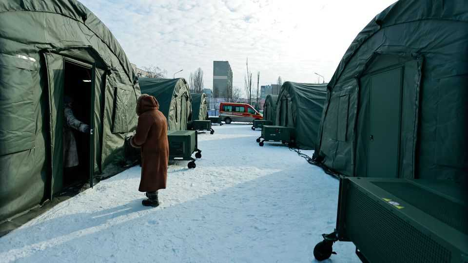
■
1月28日，数十名居民封锁道路阻止工人离岗，直到警方介入。这场崩溃是俄罗斯轰炸乌克兰能源网络的后果。储备和平衡能力正在消失。1月29日，唐纳德·特朗普为基辅促成短暂的能源停火协议。但2月3日，俄罗斯导弹以创纪录的规模袭击了乌克兰的基础设施。哈尔科夫（人口130万）被迫宣布进入紧急状态。特罗耶欣娜（Troyeshina）的最新困境始于1月24日，当时俄罗斯击毁了其最大的热电站——基辅最大的热电站。为防止管道冻结破裂，市政工程师排空了整个系统。■
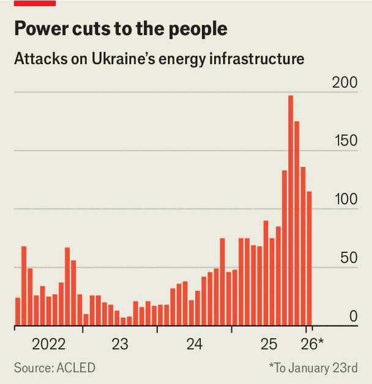
2月初部分设施恢复运转，但气温降至零下25摄氏度，工程师们仍在争分夺秒避免灾难。特罗耶申娜（Troyeshina）首席管理员马克斯姆·巴赫马托夫（Maksym Bakhmatov）表示：“灾难是分阶段发生的，先是供水，然后是供暖，接着是电力，最后是污水处理。”基辅某郊区居民已抱怨浴缸中出现粪便物质。很难看出俄罗斯对民用基础设施的轰炸除了制造苦难外还有何目的。此举或许旨在影响停火谈判。美俄乌三方谈判代表2月1日于阿布扎比会面，随后又于2月4日和5日再次会谈。乌克兰谈判团队近期经历重组，现由务实的前军情局长基里洛·布达诺夫（Kyrylo Budanov）领导，使谈判焦点更加明确。一场大规模囚犯交换预计即将展开。■
谈判能否取得进一步进展取决于弗拉基米尔·普京。乌克兰团队的知情人士表示，他们正在等待关于普京是否愿意妥协或坚持战争立场的反馈。数月来未解决的核心问题始终未变：俄罗斯是否能接受乌克兰与美国达成的安全保证协议，以及乌克兰是否必须从仍控制的重兵把守领土撤退。普京仍坚持要求撤退，而乌克兰方面则主张停火线应维持现状。目前讨论中的妥协方案可能建立一个非军事化区，由特朗普的“和平委员会”监督。一名接近谈判的乌克兰消息人士表示，任何协议都必须在“双方社会都无法接受的立场”之间寻求平衡。“我们无法解决这个问题，除非就该地区安全体系达成一致。”
俄罗斯无法单方面说“相信我们”。乌克兰总统弗拉基米尔·泽连斯基（Volodymyr Zelensky）警告称，俄罗斯重启攻击将促使乌克兰对谈判策略进行调整。在3月之前不太可能取得突破，届时俄罗斯冬季攻势将结束，其经济困境可能开始显现。目前，乌克兰似乎在同时推进两项战略。一方面，它仍致力于方案A——由美国主导的谈判。若谈判成功，乌克兰将获得和平机会和欧盟成员国地位，俄罗斯则可获得制裁缓解和新的美资商业合作。另一方面，泽连斯基也在为方案B做准备，即以更强大的军队继续战斗。■
1月26日，在基辅的一场演讲中，新任国防部长米哈伊洛·费多罗夫（Mykhailo Fyodorov）展示了未来战争的数字化愿景，借助无人机技术和游戏化逻辑。在场的将军们大多认为战争不会很快结束。在特罗伊申纳（Troyeshina），所有人都在期待B计划。斯维里多维奇（Ms Svyrydovych）指挥下的电力工人表示居民并未恐慌。“大家都知道我们需要挺过二月和三月上半月，”她说，“但之后我们就会成为英雄。”巴赫马托夫（Mr Bakhmatov）同样坚决。“如果普京以为乌克兰人会因为马桶坏了而投降，那他错了。我们必要时会在沟渠里排泄——高唱‘普京是个混蛋’。乌克兰人永远不会投降。” ■ 为掌握欧洲最大新闻，订阅我们的周度专属通讯Café Europa。
§039 欧洲原题：How neighbouring populists fall out · 板块：Europe · 栏目：欧洲
维克托·欧尔班（匈牙利）和罗伯特·菲科通常关系不错。两人分别是匈牙利和斯洛伐克的总理，均为反欧盟民粹主义民族主义者。但12月，菲科采取了一项行动，威胁到他们的关系。他使批评贝内斯法令成为非法行为，这些法令由二战后捷克斯洛伐克政府颁布。根据这些法令，捷克斯洛伐克政府没收了德意志族和匈牙利族的财产，并驱逐了几乎所有德意志族人和许多匈牙利族人，以报复德国入侵和法西斯匈牙利与纳粹的联盟。
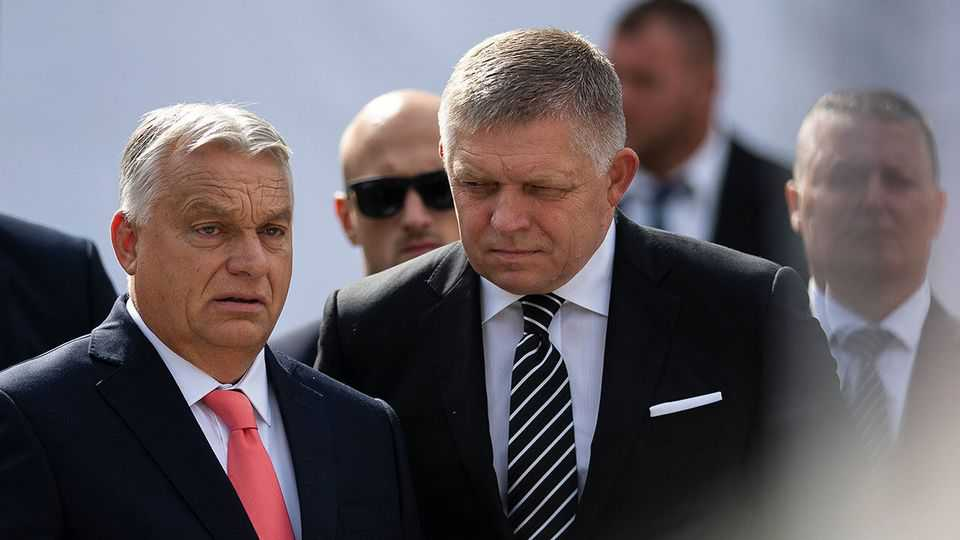
斯洛伐克的匈牙利族（Hungarians）目前约有42万人，占总人口近8%。他们对禁令感到愤怒，抗议活动随之爆发。这似乎为奥班（Orban）提供了政治机会，他即将在四月举行大选，通常自诩为邻国匈牙利族的捍卫者。然而他却仅寻求“澄清性讨论”。贝内斯法令（Benes decrees）多年来一直是敏感话题。2002年，时任总理的奥班曾表示，斯洛伐克和捷克共和国应在加入欧盟前废除这些法令。两年后两国在法令仍有效的情况下加入欧盟。近期斯洛伐克官员拒绝向匈牙利族支付因基础设施项目征用土地的补偿金，他们辩称这些土地应归属当前所有者祖先的没收财产。■
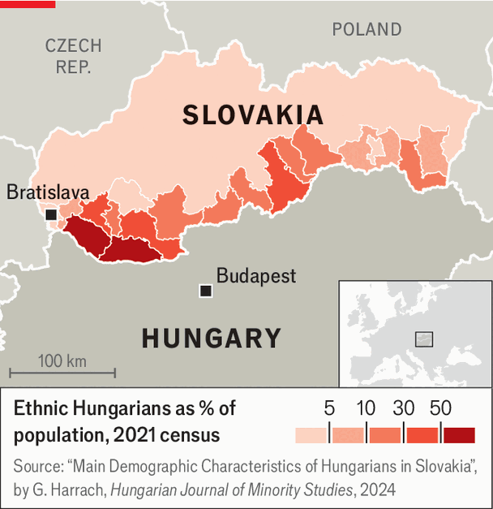
这促使进步党（Progressive Slovakia）——一个自由派反对党——呼吁禁止依据这些法令没收财产。弗拉基米尔·菲科（Mr Fico）希望借此质疑他们的爱国情怀，随即推动通过了反批评法。如今，质疑这些法令在理论上可判处六个月监禁。但目前尚无迹象显示该措施被实施，且可能已适得其反。《纳普尼克》（Napunk）网站编辑佐尔坦·萨拉伊（Zoltan Szalay）认为，主要后果是匈牙利族选民可能不会支持菲科。此事也让欧尔班（Mr Orban）陷入尴尬。菲科是布鲁塞尔的盟友，两人均反对欧盟对乌克兰的支持及对俄罗斯实施的能源制裁。匈牙利和斯洛伐克两国约90%的石油来自俄罗斯，并大量采购俄罗斯天然气。■
欧尔班和菲科在欧盟领导人中是罕见的，自俄乌战争爆发以来曾亲自访问普京的领导人。欧尔班的沉默让匈牙利反对派占据上风。反腐败蒂萨党领袖彼得·马加尔（Peter Magyar）在民调中领先，他称斯洛伐克政府为“反匈牙利”，并表示如果欧尔班不谴责菲科，他将被视为“叛徒”。与匈牙利的社会主义和自由派反对派不同，作为欧尔班Fidesz党叛逃者的马加尔对一些民族主义情绪持包容态度。欧尔班政府承诺为斯洛伐克的匈牙利族提供法律援助，似乎希望风暴能尽快平息。但这场争执凸显了欧洲民族主义者，即使关系友好，也难以避免彼此踩踏。■ 要掌握欧洲最大新闻，请订阅我们的周报《Café Europa》。
§040 欧洲原题：How an art restorer sneaked Giorgia Meloni into a church fresco · 板块：Europe · 栏目：欧洲
欧洲
圣洛伦佐大教堂是罗马与政治关联最紧密的教堂。总理的官邸距此仅数百米。虔诚的朱利奥·安德烈奥蒂曾在此祈祷，而为他辩护的律师也据说在此祈祷。近祭坛处有一间小堂纪念意大利末代国王乌姆贝托二世。在君主雕像上方的墙壁上，两幅翅膀女性形象悬浮于雕像旁。其中一位手持意大利地图。
1月31日，《晚邮报》注意到一个异常现象：在最近一次修复后，地图上的持图人物与现任总理乔治娅·梅洛尼（Giorgia Meloni）惊人相似。反对党对此感到震惊。绿左联盟称此举“折射出一种自法西斯时代以来未曾见过的人格崇拜”。罗马总主教巴尔达萨雷·里纳（Baldassare Reina）谴责了此次修复：“神圣艺术与基督教传统的形象不能被滥用或利用。”文化部长随即启动调查。梅洛尼则淡化此事，她在Instagram上写道：“我肯定不像天使。”目前没有任何证据表明她与此事有关。修复师布鲁诺·瓦莱蒂内蒂（Bruno Valentinetti）最初坚持梅洛尼并非模特：“我将人物恢复到25年前的模样。”瓦莱蒂内蒂并非普通画匠。■
他的资历包括西斯廷礼拜堂和已故西尔维奥·贝卢斯科尼妻子故居的修复工作。2月4日，他不得不仓皇撤退：他抹去了面容，称“梵蒂冈让我这么做的”，并承认这是基于梅洛尼女士的画像。文化部表示，圣母大教堂需向民事和宗教当局申请重新修复——“并附上草图”，它谨慎地补充道。政客们偷摸进入宗教艺术已有数百年历史。拜占庭皇帝查士丁尼一世曾亲自出现在拉文纳圣维塔莱大教堂的马赛克画中。但即便在中世纪，正如艺术史学家克劳迪奥·斯特拉蒂尼所言，“似乎无人敢冒充天使。”■ 要掌握欧洲最大新闻，订阅我们的周度会员专属简报Café Europa。
§041 欧洲原题：How “remigration” is penetrating Europe’s political mainstream · 板块：Europe · 栏目：欧洲
近日，德国极右翼政客若想谋求政治生涯，只需一个词：“回流”。这个词在德国选择党（Alternative für Deutschland，简称AfD）主办的活动上被高呼，在周边商品上印制并铺天盖地地出现在社交媒体上。其含义模糊，但其从极右翼边缘向主流的扩散，揭示了极右翼组织在民主国家扩大影响力的趋势。这也给在民调中领先的AfD带来了困境。 ■
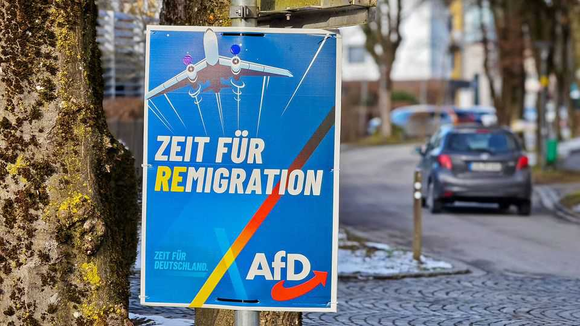
“回流”概念与37岁的奥地利活动家兼作家马丁·塞尔纳（Martin Sellner）密切相关，他因在多个欧洲国家被禁止活动而广受关注。塞尔纳在接受《经济学人》采访时表示，其运动的独特之处在于认识到社会变革——特别是在学术界、艺术界和媒体领域——先于政治变革发生。他在回答中频繁引用“迷因”（memes）、“元政治”（metapolitics）以及两位马克思主义哲学家安东尼奥·葛兰西（Antonio Gramsci）和路易·阿尔都塞（Louis Althusser），称右翼民粹主义者即便获得权力也“缺乏足够的智力能力去运用权力并推动变革”。“回流”概念早在十年前便从法国极右翼圈子扩散至德国和奥地利。2024年1月，调查媒体Correctiv披露塞尔纳曾在波茨坦会议上与德国极右翼政党AfD的政客讨论“回流”问题，这一话题由此进入普通选民的视野。■
这些揭露引发了德国全国范围内的抗议活动。一群语言学家将该词称为他们年度“无词”。塞尔纳先生耸耸肩表示，‘所有宣传都是好宣传’。这一概念在德国政党AfD内部迅速传播，一年后，该党总理候选人艾丽丝·魏德尔在党内活动上采纳了这一术语，并批准将其加入联邦选举前的纲领。如今许多AfD政客都热情地投身于这一运动（见图表）。一些政客对晚近的转变表示歉意。与此同时，AfD活动人士使用该词向边缘群体传递信号，‘他们属于酷派群体’，奥地利抵抗文件中心（研究机构）的极右研究专家伯恩哈德·魏丁格表示。他们发布由AI生成的‘返乡’主题表情包，配以欢快的欧洲迪斯科音乐。
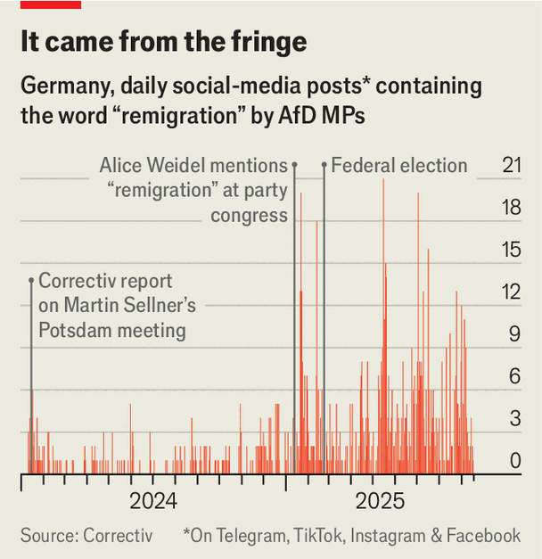
对一些人而言，返乡潮的承诺充满吸引力；活动人士誓言要让德国的跑道因大规模遣返而沸腾。实际上，返乡潮意味着什么？塞尔纳先生表示，它针对三类群体：非法移民；合法但消耗国家资源或犯罪的移民；以及他视为“未被同化”的公民。他承认，最后一类群体构成“问题”，但他强调：“你不能驱逐公民，这将是疯狂的。”但你可以通过制造“文化与经济压力”促使他们离开。他还主张大幅收紧入籍规则，终结德国的“罪恶文化”。他愿意考虑剥夺部分归化德国人的国籍。然而，对许多支持者而言，“返乡潮”更多代表一种愿景，即欧洲摆脱他们所称的“非裔阿拉伯移民替代性迁徙”后，重获其民族与文化认同。■
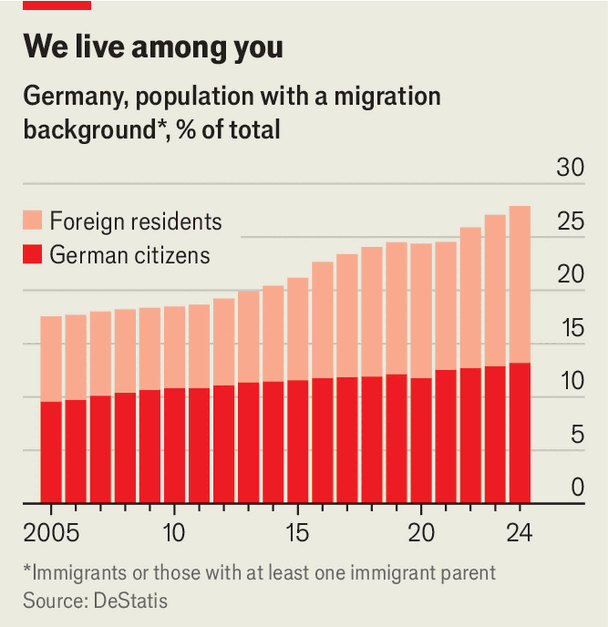
实现这一目标将需要数十年时间，塞尔纳先生承认。德国近期庇护申请数量骤降，但这并非重点所在。希望吸引的是那些对身边迅速的人口结构变化感到不安的公民。这些正是德国选择党（afd）所瞄准的选民。但存在关键区别。该党明确否认其政策会针对持有德国护照的公民。“对于那些家族在此生活了200年的人和最近获得公民身份的人，没有任何区别，”德国选择党董事会成员马克·容根（Marc Jongen）表示。然而，该党部分政客呼吁驱逐“数百万”人。德国约有23万多人面临驱逐令，但仅通过驱逐非法移民和罪犯，无法简单地将数百万人口驱逐出境。■
■智库（Institute for Strategic Dialogue）的Jakob Guhl表示，塞尔纳（Mr Sellner）的返乡运动对德国另类选择党（AfD）而言既是机遇也是威胁。机遇显而易见：该党借助了通常远离民主政治的右翼极端主义网络的能量。尽管令人震惊的是，一个拥有四分之一选民支持的政党代表们竟高喊过去只在边缘地带才听到的口号，但民调并未因此对其造成负面影响。近期一些人已与塞尔纳进行私下或公开会面，尤其是该党激进的东部分支。但AfD的激进转向可能招致严重法律问题。去年国内情报机构已将AfD标记为“右翼极端主义组织”，该党正对此裁决提出异议，但要求取缔该党的呼声却不断增多。
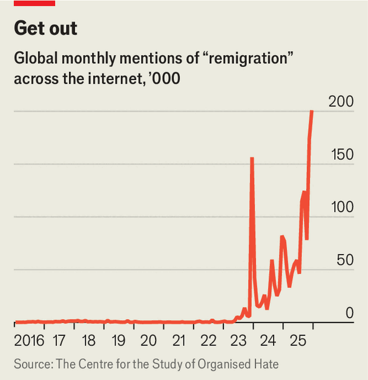
法院裁定，塞尔纳（Mr Sellner）的“再移民”概念因基于种族区分德国人而违宪。若德国另类选择党（AfD）暗示支持其观点，将强化对手的论点。本周该党已下令成员停止与塞尔纳会面，但此举难以遏制“再移民”概念的扩散。在奥地利，极右翼自由党（Freedom Party）对该术语热情拥抱；意大利的极右翼团体“再移民与再征服委员会”（Committee for Remigration and Reconquest）近期在议会引发争议，提交了要求大规模驱逐和剥夺国籍的请愿书。特朗普政府也钟爱这一词汇：国土安全部在12月发帖称“美国圣诞节想要的就是再移民”。■
至于塞尔纳先生（Mr Sellner），他正忙于筹建一个“回归研究所”（Institute for Remigration）。他表示：“我们能够改变公众辩论，最终改变所有政治格局。”许多在欧洲并不被视为本地居民的人担心他的话是对的。■ 要掌握欧洲最大新闻动态，请订阅我们的周度专属通讯《Café Europa》。
§042 欧洲原题：Proposes a magical fix for its half-finished single market · 板块：Europe · 栏目：欧洲
若无破则无需修。但若根本未运作呢？这正是欧盟长期以来困扰的问题。理论上，该集团的经济政策旨在将27个成员国市场融合为拥有4.5亿消费者的统一市场。但实际操作中，这一诞生于煤炭与汽车时代的构想，已难以跟上经济向ChatGPT查询和Spotify流媒体转型的步伐。■
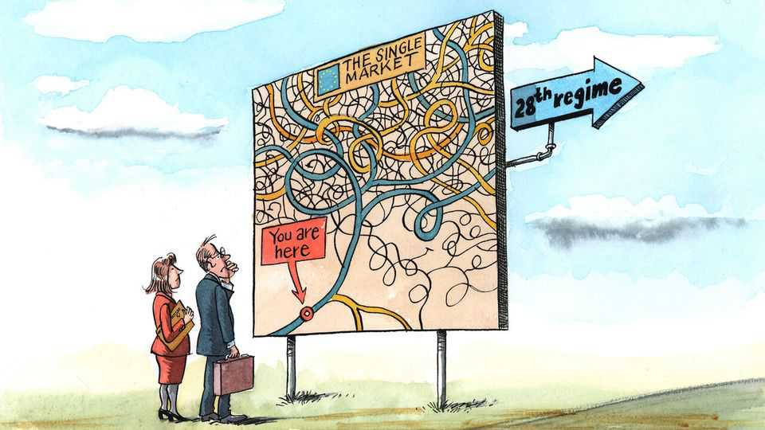
颇具讽刺意味的是，由于各国法律体系错综复杂，无论是创新初创企业、传统银行、细致入微的律师还是其他服务提供商，往往发现其服务在欧盟内部跨境销售比实体商品跨境运输更难。欧盟已尝试数十年协调各国法规，但成效甚微。如今，一种新策略正被提出以推动变革。与其让创业者设立法国或德国公司再试图在欧盟内部销售产品，是否可以设立一家横跨整个欧洲的公司，从一开始就具备在欧盟境内开展业务的资格？这无疑是一个大胆的计划。但这一设想真的可行吗？所谓“第28种制度”——即不属于欧盟现有27个成员国、却能凌驾于其上的制度——近期引发了广泛关注。■
两位前意大利总理恩里科·莱塔（Enrico Letta）和马里奥·德拉吉（Mario Draghi）发布的两份报告提出，通过“泛欧公司模式”重振欧洲经济。欧盟委员会主席乌尔苏拉·冯·德莱恩（Ursula von der Leyen）在达沃斯论坛上两次提及这一构想（引发对过去12个月进展的疑问）。2月12日，欧盟各成员国领导人将在比利时的城堡召开会议，探讨如何重振欧洲竞争力。会议前，28国体制被寄予厚望，被视为突破僵局、重启增长的方案。欧盟委员会预计将在下月提出相关法律提案。该“泛欧公司模式”的核心在于允许企业摆脱德国GmbH或法国SA等传统公司形式，转而注册为“EU Inc”（欧盟公司）。■
支持者称“欧盟公司”（EU Inc）是迅速解开官僚主义束缚的工具，能绕开使企业在欧盟内部经营举步维艰的27套国内法规。企业不必再为理解意大利的会计规则或丹麦的破产法代码而苦恼，而是可以选择遵循一套全新的统一法规。这一术语带有明显美国风格并非偶然。支持者将目光投向其跨大西洋经济对手——美国。美国凭借强大的联邦政府和单一语言，更成功地为本国企业打造了统一市场。例如，美国银行可选择由州政府监管或直接接受联邦政府授权。若听起来过于美好，部分原因正是如此。■
许多使在欧洲经商变得困难的障碍，源于国家政府牢牢掌控的法规。例如，大多数劳动法的制定权在马德里、巴黎和斯德哥尔摩，而非布鲁塞尔——而且没有计划统一企业招聘与解雇的规则。国家首都也对税收事务保持严格控制。各国间差异显著的其他规则，如对药剂师到滑雪教练等职业资格的监管，也不会因新型公司注册方式的出现而被废除。一家波兰建筑公司即便选择以欧盟公司（EU Inc）形式注册，也不意味着它能获得在葡萄牙设计摩天大楼的许可。以往尝试建立全欧洲统一公司形式的举措大多以失败告终。■
2004年成立的欧洲单一市场公司（Societas Europaea）吸引力有限。支持第28项制度的人士表示，这次情况不同。作为欧盟公司（EU Inc）的益处可能起初较为有限，例如让初创企业更容易以股票形式支付员工薪酬，但随着时间推移，可能变得更加雄心勃勃，使创业者免受部分国家法规的约束。这种乐观态度似乎过于乐观。工会尤其警惕企业试图规避严格劳动法规的任何迹象。现有企业也倾向于维持现状。也许这次政治家们将有勇气挑战既得利益集团。欧洲疲软的经济过去只是政策制定者的烦心事，但在大国间充满竞争的国际环境中，这已成为生存威胁。更高的GDP意味着更多的国防开支。深化单一市场是增强欧洲竞争力的重要途径。■
欧盟国家间的壁垒比唐纳德·特朗普可能对欧洲企业施加的关税对贸易的阻碍更大。然而，鉴于这一诊断，以第28个体制为起点显然过于保守。风险在于欧盟可能选择一种在纸面上看似激进、实际却鲜有改变的解决方案。这将分散对真正紧迫问题的注意力。事实上，深化单一市场的所需工作早已被充分理解。这要求政治家们优先考虑欧盟及其消费者的整体利益，而非特定产业的狭隘利益。然而，告诉德国部长们暂缓资本市场整合以免损害地区银行，或告知法国官员们破坏电力互联装置以保护国有电力公司，恐怕并不容易。这类例子不胜枚举。■
首先，深化单一市场需要欧盟委员会切实执行使该市场成为现实的规则——这正是其近期似乎缺乏热情的领域。欧洲拥有众多受中世纪行会保护的小企业领地，这些企业相互掣肘，共同制约着经济发展。认为存在快速解决办法，是对未来任务规模的误判。■ Subscribers to The Economist can sign up to our Opinion newsletter, which brings together the best of our leaders, columns, guest essays and reader correspondence.
§043 欧洲原题：The elusive Czech at the centre of European business · 板块：Europe · 栏目：欧洲
即便以他本人的标准，过去12个月来，丹尼尔·克雷蒂宁斯基的活动异常频繁。去年2月，这位捷克亿万富翁将德国大型批发商美特百货（Metro）私有化；4月收购了英国皇家邮政母公司国际分销服务公司（International Distributions Services, IDS）；11月成为法国能源巨头TotalEnergies的重要股东；1月26日又向法国电子产品零售商Fnac Darty发出收购要约。这位50岁的商业巨头常被称为“捷克狮身人面像”，却始终回避聚光灯。
过去几年，他悄然成为欧洲最具影响力的商界领袖之一，过程中积累了约100亿美元的财富。他向《经济学人》杂志解释，自己的策略并非追逐光鲜的新行业，而是聚焦于满足消费者基本需求的领域。尽管他依然看好欧洲的潜力，却担忧缺乏务实精神会拖累其发展。克雷特金斯基（Kretinsky）商业帝国的核心是EPH，这是一家私有能源公司，也是欧洲最大且污染最严重的能源企业之一。该公司主要通过燃煤和燃气发电，并在欧洲多国从事天然气的储存与输送。■
克雷廷斯基于2009年在J&T（投资公司）和捷克亿万富翁佩特·凯尔纳（Petr Kellner）的支持下创立了EPH。后者曾是其律师，也是他最亲密的顾问之一，直至2021年去世。克雷廷斯基的专长逐渐演变为低价收购那些被公用事业公司迫于投资者和政府压力被迫出售的“脏资产”。例如2016年，他收购了德国的LEAG公司，该公司当时由瑞典能源巨头维特纳尔（Vattenfall）持有。尽管他并未完全排除对能源领域的进一步投资，但克雷廷斯基近期正逐步将重心转向其他领域。他表示，这既是因为他不再看到该行业存在大量可盈利的资本部署机会，也是因为他不想让自己的帝国仅建立在单一支柱之上。■
克雷蒂宁斯基希望通过其控股公司EP集团，在未来三年内将能源业务带来的利润占比从三分之二降至一半。这解释了他近期频繁的并购动作。除收购Metro及目前持有Fnac Darty 28%股权外，他还持有英国Sainsbury's和法国Casino等零售企业的股份。在物流领域，他投资了荷兰的GLS和PostNL两家配送服务公司，以及IDS。克雷蒂宁斯基还收购了多项媒体资产：他掌控着捷克媒体市场的重要份额，同时拥有法国出版公司Editis，以及《ELLE》《Marianne》等杂志。（他此前曾持有法国主流报纸《世界报》49%的股份，但已于2023年出售。）与此同时，克雷蒂宁斯基正努力清理EPH公司的业务。该公司计划于2030年前实现无煤化。■
部分仍在使用该燃料的电厂将改用天然气或生物质能；其余则将被分拆或逐步关闭。并非所有人都认同这一举措。捷克环保活动家拉德克·库巴拉（Radek Kubala）称该亿万富翁的做法是“绿色洗白”。而克雷特金斯基（Kretinsky）本人则认为，尽管欧洲以自身为榜样推动全球脱碳的意图是善意的，但这些努力已告失败，并使欧洲工业付出了沉重代价。他相信欧洲仍拥有诸多优势，包括市场规模、制度质量以及教育水平。但他担忧税收负担和繁杂的法规正在阻碍资本与人才的流入。“我们实力强大，却陷入迷茫，”他说，“希望我们能醒悟过来。” ■
要追踪塑造商业、工业与技术趋势的动态，敬请订阅我们的全球商业周报“The Bottom Line”，该周报仅限订阅者阅览。■
§044 英国原题：Britain’s new union law will reshape its workplace · 板块：Britain · 栏目：英国
英国的工会正获得新的自由度，他们计划加以利用
过去40年，英国工人一直在离开工会，这一趋势在富裕国家普遍存在。但工会官员们表现出令人惊讶的乐观态度，认为历史潮流正在转向
“可能会出现‘大规模会员激增’，”全球劳动者之声（UVW）总干事佩特罗斯·埃利亚表示，该组织代表清洁工、保安等不稳定劳动者。“我们面对的工人组织意愿远超现有资源，”技术工人代表工会（UTAW）的约翰·查德菲尔德表示。“过去一代人难以触及的职场，现在出现了新的机会，”第三家工会的官员表示。他们的乐观态度是合理的。英国工党政府推出的《就业权利法案》，一项涵盖广泛劳动市场的法律，已于12月18日获得议会通过，将于今年晚些时候正式实施。多数关注点集中在个人劳动者的新权利上，例如更慷慨的病假和产假。■
英国拥有经合组织（OECD）成员国中最为雇主友好型的劳动法，该组织由多数富裕国家组成。根据剑桥大学法律学者受政府委托进行的分析（见图表1），整体而言，这项法案将使英国劳动法相对于其同行收紧，但幅度较小。真正的变革在于一系列长期被忽视的工会法修订，这些修订将使工会更容易招募工人、与雇主谈判并组织罢工。从这些指标来看，该法案将工会活动相关法律调整至上世纪70年代末的水平，即玛格丽特·撒切尔推行反工会改革之前的状态（见图表2）。在这一方面，英国跃升至经合组织国家的中游位置。政府称，此举将实现“权力从雇主向工人转移”。雇主可能措手不及。■
莎拉·亨乔兹（A&O Shearman律师事务所全球雇佣法负责人）表示，许多人力资源部门，尤其是专业服务领域，缺乏与工会谈判的经验。一些企业错误地认为工党计划将被弱化。“我一直在告诉客户：‘你们无法阻止这一计划，必须找到与之合作的方式。’”工会将有权正式要求进入工作场所招募成员并设立分会，也可通过数字渠道联系员工。（拒绝企业须向法庭说明为何该行为会“不合理干扰”其业务）雇主需定期告知员工加入工会的权利。
对组织者而言，这改变了游戏规则：首先接触工人是挑战的一半。“你基本上只需在街头角落守候，”埃利亚先生（Mr Elia）说道，他于2014年创立了UVW。工会将更容易获得认可（赋予其就薪酬和工作条件进行谈判的权利）。目前，工会在举行认可投票前必须证明至少有10%的员工是成员；这一比例可能降至最低2%，待咨询后确定。该法案还取消了一项要求至少40%全体员工支持的条款，因此即使投票率较低，也能以简单多数赢得投票。工会表示，这在员工流动性快的行业（如清洁行业）中将使组织工作更加容易。风险是工人可能被他们并不支持的工会代表。■
隐形行动将更易实施。“我们可以在公司不知情的情况下，通过隐蔽手段获得20%至30%的工会化支持，并向雇主呈现既成事实，”一名组织者表示。罢工也将更加容易。投票方式将改为电子邮件而非纸质信件（尚待咨询确认）。至少50%的投票率要求（以及某些公共服务部门需获得40%全体职工支持）也将被取消。工会无需再派官员监督纠察行动。对会员资金用于政治游说和捐款的限制将放宽，国家监管机构对违规工会的调查权力也将被削弱。工会在法律起草过程中发挥了重要作用，对最终成果感到满意。接下来应优先针对哪些职场？工会正梳理其记录中的“棕地”和“绿地”企业（即已涉足且陌生的雇主）。■
他们的重点是私营部门，工会成员比例已降至仅12%（相比之下，公共部门为50%）。清洁和餐饮服务的外包供应商成为多个工会的主要目标。演员工会Equity计划从戏剧和电视领域扩展至广告、配音和视频游戏领域，其政策官员杜格尔·约翰逊表示。该工会希望加强对演员形象在人工智能技术中被重新利用的控制权。因薪资低、工时长而备受关注的护理机构也成为多个工会的目标。UTAW的查德菲尔德表示：“所有读者脑海中浮现的大型科技公司，我们都在不同程度上与其展开谈判。”UVW的埃利亚希望扩大在酒店行业的影响力：他期待降低的门槛能将整个连锁酒店集团而非单个场所纳入监管范围。迄今为止，许多公司都试图挫败工会的认可以申请。■
然而，随着法律倾向工会一方，一些高管主张采取新策略，即寻求与更温和的工会合作。这类工会罢工较少，对像加沙这样的问题也不那么敏感。与其明天被迫承认激进工会，不如今天承认合作型工会。亨乔兹女士指出，对雇主而言，挑战在于更强势的工会将放大法案中的其他变化。这将使企业重组更加风险，合并更加复杂。■
雇主现在面临无上限的不当解雇赔偿，集体裁员未充分协商将面临更严厉的处罚，且对雇主变更员工合同的限制也更为严格。“雇主们开始感到相当紧张，”亨乔兹女士（Henchoz）表示，“他们以为自己提供了优厚的裁员补偿，但若工会支持，员工可能选择诉讼作为更优选项。”一名工会官员表示，他们希望对相关企业施加“惩罚性”赔偿，以迫使企业改变行为。多年来，英国政府一直遵循宽松劳动力市场能促进投资和降低失业率的逻辑。但现任工党政府则推翻这一逻辑，认为正是这种宽松政策导致了低工资工作和民粹主义的滋生。不过，政府自身的经济评估不过是随意猜测。■
这项法案可能意味着罢工减少，文章指出；但同样，也可能引发更多罢工。或许，文章推测，工人会更幸福、更健康，从而提高生产率。对投资的影响则被描述为“模糊”。许多方面都被标记为“不确定”。更诚实的评估应明确指出潜在风险：该法案可能在劳动力市场本已趋缓之际抑制招聘，削弱英国作为商业场所的吸引力。这是一场大规模实验，旨在让劳动力市场一夜之间变得更欧洲、更少美国化。其最终走向将取决于工会。■ 如需深入了解英国重大新闻的专家分析，请订阅我们的周度专属简报Blighty。
§045 英国原题：Selling AI to the left · 板块：Britain · 栏目：英国
工党政府精心打磨了一套论点，旨在向其选民基础——公共部门雇员和工会成员——推销人工智能的颠覆潜力。这些群体对技术可能带来的岗位颠覆或取代持谨慎态度。政府表示，AI已无法逆转，关键在于它是否“符合劳工利益”，这是党内术语。工党认为，AI在三个方面与劳工利益高度契合。首先，AI能重塑公共部门岗位。医生、社工和教师之所以痛苦，是因为他们所受的高技能训练已淹没在官僚主义中。
让机器人处理文书工作，专业人士便可重新投入与公众的互动中。一份政府报告建议通过采用人工智能记录个案笔记或获取立法指导，以减轻儿童社会工作者的工作负担。英国首相基尔·斯塔默爵士（Sir Keir Starmer）在近期接受《经济学人》采访时表示：“我认为，这听起来似乎有些反直觉，但人工智能实际上能让我们的工作更具人性化。”其次，人工智能可以帮助挽救一个已失信的国家。若劳工党未能按其理念改革庞大的低效公共官僚体系，右翼改革英国（Reform UK）政府在奈杰尔·法拉格（Nigel Farage）领导下便有了大刀阔斧改革的借口。官员们指出积压的规划体系问题：政府人工智能开发者开发了一款名为Extract的工具，将旧纸质地图转化为可用数据，以期加快审批流程。■
第三，人工智能对工党的工人阶级选民更具倾斜性益处，因为它能提供原本仅富裕人群才能获得的服务。一个典型案例是1月26日政府宣布希望开发者打造一款AI“导师”应用，为学生提供定制化教学支持。此举暗含阶级政治色彩：该计划旨在“为无力负担私人导师的学生公平竞争”。作为工会联合会，该组织原则上支持人工智能的应用，但要求“技术开发过程中应有实质性工人参与”。其论点认为，合同应仅授予承认工会的公司。政府表示，该辅导应用将由“教师主导”，并“绝不会取代唯有优秀教师才能提供的师生互动”。这预示着未来真正的较量，当人工智能不仅不增强岗位，反而直接取代岗位时。■
政府宣布成立专门机构，研究人工智能对劳动力市场的影响；该机构将确保政府“能够避免过去工业变革中出现的错误，保护社区”。这无疑是一个宏大的承诺。■ 如需获取更多关于英国重大新闻的专家分析，请订阅我们的周度专属简报《Blighty》。
§046 英国原题：Nigel Farage’s dangerous proposal on central-bank reserves · 板块：Britain · 栏目：英国
在上月的达沃斯论坛上，尼格尔·法拉奇一如往常展现出斗士风格。当被问及他提议停止向英格兰银行持有的储备金支付利息时，这位改革党右翼民粹主义领袖毫不掩饰自己的立场。“一些银行可能不喜欢这个提议，”法拉奇表示，“我其实也不太喜欢银行，因为他们把我排除在银行体系之外。”这种怨恨与轻蔑的混合，正是法拉奇一贯的作风。然而这项政策却意外获得左翼绿党与中间派自由民主党等群体的支持。甚至两位前英格兰银行副行长也支持该政策的不同版本。■
法拉奇认为，这些利息支付是银行的“免费资金”。2024年，他的政党声称停止这些支付每年可为政府节省350亿英镑（约合450亿美元，占GDP的1%）。这一提议听起来可能比改革党其他一些提议（如永久实施零移民政策）更为稳健。但深入分析后会发现，这不过是财政幻象：这些数字被高估了，对央行独立性的损害是真实的，而且还有更高效的方式对银行利润征税。过去，存放在央行的存款（称为准备金）不支付利息。这促使商业银行尽量减少在央行的存款余额，只保留足够应对日常支付的金额。央行本身则通过限制准备金供应，利用商业银行对当日资金不足的担忧，确保它们之间的拆借利率接近央行的政策利率。■
然而，流动性不足导致市场波动，当银行误判自身需求时，利率会周期性飙升。为减少这种波动，2006年该银行开始对储备金支付利息，以鼓励银行持有更多储备。2009年，其启动“量化宽松”（quantitative easing, QE）政策，大规模购买政府债券，压低长期利率并刺激需求。为支付这些操作，该银行通过创造储备金来融资，储备金规模从2007年的200亿英镑增至2022年的9780亿英镑峰值（见图表1）。市场利率再无法通过储备稀缺性影响，转而由央行支付的储备利率锚定——因为任何银行都不会以低于央行无风险利率的价格进行隔夜借贷。量化宽松使政府财政面临利率变动风险。■
直到2022年，这一政策仍有利可图，因为银行从债券上获得的利息高于支付给储备金的利息。但疫情后利率飙升，这些利润转为亏损，2025至23年期间，这些亏损平均每月达近10亿英镑（见图表2）。正是这些亏损让法拉奇先生愤怒，促使他呼吁重返无需支付储备金利息的好日子。理论上，若在2024年取消所有储备金利息（当时储备金规模超过7500亿英镑，利率高于5%），可能增加约350亿英镑。但目前储备金利率已降至3.75%，市场预期将进一步下降，且与量化宽松相关的储备金规模预计到2030年将低于3000亿英镑。届时该政策每年可能仅增加约100亿英镑。即便如此，这一假设也过于激进：对所有储备金支付零利息，将严重削弱央行引导利率的能力。■
为避免这一问题，一些支持者主张采用“分层报酬制度”，即仅对商业银行储备金中的一小部分——比如最后5%——支付利息。通过将贷款决策与这一边际利率挂钩，银行可在保持利率控制权的同时，让大部分储备金不计息。欧洲央行采用该制度，但仅让极小比例的储备金不计息。然而，分层报酬制度并未解决另外两个问题。首先是对央行独立性的威胁。不计息储备实际上会成为无息债务——这相当于财政诱饵，对财政紧张的政府极具吸引力。这可能导致政府未来严重依赖央行推行大规模量化宽松计划，用零收益率的央行货币替代需支付利息的国债。
随着时间推移，这一政策将使抑制通胀的优先级让位于政府融资，从而增加物价快速上涨的风险。该政策的第二个问题在于对消费者造成伤害。如果多数准备金不计息，银行将再次寻求减少储备持有量。要在维持影响市场利率能力的同时阻止这一行为，就需要强制银行持有比其意愿更多的准备金——实质上是一种税收，因为它迫使银行放弃贷款带来的收入。支持该税收政策的人认为，银行可通过降低利润来消化损失。英国四大银行2024年利润达460亿英镑，较2022年的310亿英镑有所增长。但如果这一利润水平过高，意味着缺乏竞争，几乎没有制约银行将税收转嫁给消费者的力量，表现为储蓄利率下降和借贷成本上升。因此，这一政策不仅是对银行的税收，也是对银行用户的税收。■
这种做法会显得武断，其严厉程度取决于利率和准备金规模。如果弗雷泽·弗农想对银行利润征税，有更简便的方式。他可以提高现有针对银行的公司税附加税率，这种做法直接针对利润，而不威胁央行独立性。这种方式更为干净，但会让他远离他那奇特的广泛联盟——民粹主义者和技术官僚的混合体。这种跨党派共识对弗雷泽·弗农来说极为罕见。可惜这种共识围绕的是一个糟糕的想法。■ 了解更多关于英国重大事件的专家分析，请订阅我们的周度专属通讯Blighty。
§047 英国原题：Demography puts the brake on classic-car values in · 板块：Britain · 栏目：英国
当阳光穿透云层，尘土飞扬的车盖被揭开，经典车们从冬眠中苏醒，驶向道路以驱散积尘。英国众多经典车车主即将重返道路。这种乐趣或许伴随着担忧。拥有经典车常被视为一种投资，但市场正陷入滑坡。去年，Hagerty（一家专门经营经典车业务的保险公司）追踪的约五分之四经典车价值出现下跌或停滞。这继新冠疫情后短暂复苏期的持续下跌之后发生，当时人们曾因疫情而大肆投入爱好。■
上世纪50至60年代英国制造的跑车遭遇重创（见图表）。部分捷豹车型去年价格较2024年下降20%。对于处于“优秀状态”的车辆，Hagerty估算，1965年款4.2升捷豹E-Type敞篷车当前价值63,900英镑（约合87,600美元），较去年同期下跌15%。MG车型整体下跌约10%，1970年款MGB敞篷车估值为14,600英镑。1962年款 Triumph TR4同样下跌10%，现值19,600英镑。所有类型的普通车型价值则大幅缩水。而仍在升值的车辆多为所谓“现代经典”车型，包括自1980年代起的“热门掀背车”。这类高性能掀背车如雷诺5 GT Turbo上涨7.5%至19,100英镑；大众高尔夫GTi MkI上涨6%至约21,500英镑；福特Escort RS Turbo MkIII则上涨23%至27,600英镑。
这一切表明，Hagerty英国价格指南编辑约翰·梅海德（John Mayhead）认为，X世代（1965年至1980年间出生者）及更年轻一代正逐渐成为市场的重要力量，因为婴儿潮一代（1946年至1964年间出生者）逐渐年迈并退出汽车市场。年轻一代的标志性车型与老一辈驾驶者不同。购买经典车一直是一种中年怀旧之旅，主要是男性在年轻时买不起的车型。杰克·罗尔斯（Jack Rawles）认为，这种代际变化似乎并未影响享受老车的人数。这位28岁的年轻人是汉普郡阿尔雷斯福德（Alresford）一家家族经营的古董车修理店的第二代管理者，他参与1960年代奥斯汀·希利（Austin Healey）赛车比赛，认为价格下降将为年轻司机提供更多尝试老车型的机会。经典车已成为一项大生意。■
英国驾驶与车辆许可局（Driver and Vehicle Licensing Agency）登记在册的“历史车辆”近200万辆，涵盖40岁以上的小汽车、卡车和摩托车。尽管免于年度MOT测试，但若在公路上行驶仍需确保车辆状况良好并缴纳道路税（费用为零）。据英国历史车辆俱乐部联合会估算，这些车辆年均行驶里程约800英里（1300公里），相当于英国普通车辆年均行驶里程的12%。相关支出每年为英国经济贡献73亿英镑，并支撑近35000个就业岗位。不过对富裕阶层而言，高端市场则充满投机气息。Hagerty公司认为，其最大收藏家群体中，约80%的购买车辆为1990年代以后的超级跑车，例如价值200万英镑以上的法拉利F40，或约1700万英镑的迈凯伦F1。■
这些汽车很可能会继续留在除湿的车库中，因为它们几乎从未被驾驶过。它们已沦为汽车艺术品，却毫无乐趣可言。■ 如需获取英国重大新闻的权威分析，请订阅我们的周度专属简报《Blighty》。
§048 英国原题：Britain’s police reforms are a step in the right direction · 板块：Britain · 栏目：英国
英格兰和威尔士的凶杀案降至50多年来最低水平。盗窃、暴力犯罪和车辆盗窃率从1990年代高峰大幅下降。然而近90%的英国人仍认为犯罪是国家面临的“重大问题”。自2020年以来，对警方失去信心的比例几乎翻倍。为何出现这种看似矛盾的现象？原因之一是英国警方几乎无法侦破案件。2015年，有13.4%的案件导致指控或传唤，而去年这一比例降至7.6%。
■
再加上社区警务的崩溃（多数英国人表示他们从未在所在地区见过巡逻的警员）以及诸如盗窃和手机抢劫等高发、高曝光度犯罪的增加，结果导致人们实际的安全感与主观感受之间的差距不断扩大。英国内政大臣沙巴纳·马哈茂德（Shabana Mahmood）希望弥合这一差距。上个月，她发布了一份白皮书，概述了近两个世纪以来最重大的警务改革。两项改革尤为突出。其一是建立全国性警察力量——国家警察服务（NPS）。该机构将制定统一标准、标准化IT系统并集中采购。同时，它还将负责严重及有组织犯罪，包括恐怖主义。第二，马哈茂德希望将43个独立的地方警队整合为规模更大的区域性警队。■
一项独立审查将在夏季发布报告，确定具体人数（可能约13人）。将IT和采购等职能集中于所谓“英国FBI”旗下已属迫在眉睫。国家警察服务（NPS）也有助于提升破案率。警方破案率下降，因为犯罪变得更为复杂。犯罪更加组织化、技术化，且越来越无视地理边界。专业能力分布也不均。西米德兰兹地区的强奸受害者被起诉的可能性仅为伦敦地区的一半。NPS或可逐步缓解这些地区差异——正如苏格兰从八个警区合并为一个警区时所展现的成效。穆罕默德女士的改革在应对地方警务方面将面临挑战。她承诺将增加13,000名额外警力上街巡逻。■
丹麦（Denmark）、荷兰（the Netherlands）、挪威（Norway）和苏格兰（Scotland）在过去20年里均完成了警力整合。地方警务水平往往随之下降，因为警员被抽调至更专业的岗位，而警力需覆盖更广的区域。地方阻力曾使2005年提出的类似改革计划受挫。玛穆德女士的改革措施恐怕也难以显著改善她承诺解决的犯罪问题——包括反社会行为、盗窃和针对妇女和女孩的暴力（VAWG）。这些问题远非警方能单独应对。盗窃行为多由惯犯主导，他们常因成瘾而转向盗窃。频繁作案的窃贼往往因量刑指南失效、法院积案和监狱系统拥挤而逍遥法外。类似困境也存在于反社会行为（常与精神疾病相关）和针对妇女及女孩的暴力问题中。■
伦敦大学学院的本·布拉德福德认为，“仅靠警方就能解决这些问题”是一种谬误。英国警方体系亟需改革，马茂德女士的计划是朝正确方向迈出的一步。但如何为其提供资金仍不明确。历史经验也让人持怀疑态度。2013年国家犯罪局（NCA）成立时曾被称作“英国FBI”，此前的严重有组织犯罪局（SOCA，成立于2006年）和国家犯罪情报服务局（NCIS）也曾被赋予类似称号。但这些机构都未能取得显著成效。■ 如需获取更多关于英国重大事件的专家分析，请订阅我们的周度订阅者专属通讯Blighty。
§049 英国原题：Why lots of English towns are creating puny local governments · 板块：Britain · 栏目：英国
马盖特（Margate）这座英国海滨小镇的老市政厅是一座奶油色新古典主义建筑，顶部有钟楼。数十年来，这里曾是马盖特市政政府的所在地。1974年，该市政政府与其他英格兰地方政府一同被废除后，这座建筑便荒废了。有人在墙上写着“这是一座巨大的空荡建筑，哈哈哈哈哈”。但其所代表的理念，即马盖特应自主管理自身事务，正重新兴起。去年，该镇约45,000人被问及是否希望设立议会。尽管少于800人回复，但回应者态度积极。■
市政政府或将时隔半个世纪后重新回归。这不过是风中的一根稻草——当前英国风中飘荡的众多迹象之一。像马格特（Margate）这样的城镇正急于成立新议会，暗示工党政府最雄心勃勃的政策中存在漏洞。工党正推进自1970年代以来英格兰最大规模的地方政府改革。许多区议会（负责垃圾处理和地方规划等事务）和郡议会（负责社会照护、教育和公路等事务）将被废除，取而代之的是统管一切事务的大型单一管理区。像伦敦和曼彻斯特这样的大城市早已如此运作。在马格特，这种变革将尤为剧烈。■
该镇目前由泰内特区议会管辖，服务人口约14万，位于肯特郡东北部（其1970年代的红砖建筑办公大楼位于马盖特，远不及旧市政厅）。新单一管理区的边界尚未确定，但其规模将相当庞大。泰内特提议的边界将涵盖超过40万人口。肯特郡议会则主张整个郡（人口190万）都应成为单一管理区。被纳入如此庞大的机构的前景在马盖特等地引发强烈不满。埃普瑟姆和埃韦尔的居民——这两座位于伦敦郊外的相邻城镇——目前由35名区议员和5名郡议员代表。改革后，他们将仅剩10名议员。汉娜·达伦特（Hannah Dalton）称，即将被废除的区议会领导人的担忧是，地方需求将被忽视。■
每年都有新的教区和镇议会成立。但代表这些机构的全国地方议会协会（National Association of Local Councils）表示，目前正在筹备的议会数量异常多。一些正在尝试创建这些机构的地区，如吉尔福德和圣奥尔本斯，经济富裕；而像克拉克顿-海这样的地区则较为贫困。许多新议会位于英格兰东南部，那里工党对地方行政的重组最为激烈。从法律层面看，这些新机构规模微小，权力不比英格兰乡村的教区议会更大。它们通常负责管理公园和分配地——即居民种植蔬菜的小块土地。它们可能在环岛种植开花的年季花卉，组织纪念日游行和圣诞灯饰活动，并向本地团体提供小额资助。但这些机构的实际影响力远超表面。首先，人们对花卉十分在意。■
在英格兰大部分未受严重犯罪或难民营困扰的地区，城镇与村庄的繁荣程度往往通过郁金香、游行和公共厕所来衡量。马盖特的居民希望设立镇议会，部分原因在于他们看到邻近设有镇议会的城镇更为整洁。“布罗德斯泰尔斯总是看起来很美，”马盖特镇议员凯蒂·波普说道，她指的是5公里外的城镇。镇议会并非一直保持小规模。“我们最初没有办公室，只有四名工作人员，”萨默塞特郡塔纳顿镇议会主席汤姆·迪金说，该镇议会成立于2023年。如今他的议会已雇用60至70名员工。面对住房短缺和儿童福利等复杂议题，更高层级的议会往往乐于将责任下放。■
地方层级较高的政府若要将税率提高超过5%每年，通常必须举行公投——但这类事他们几乎从不敢尝试。而镇和教区议会则不同，它们主要通过“预征”（precepts）从税款中获得资金，因此不受此类限制。随着其数量和职责的增加，流向这些机构的资金也在增长。2024-25财年，预征收入达到8.56亿英镑（12亿美元），较2010-11财年实际增长60%。此外，镇议会还拥有一个重大权力：他们必须参与城市规划事务，也可制定社区规划方案，明确住宅及其他建筑的建设地点及禁止区域。此类规划方案使他们能更充分地获取开发商建房时需支付的附加费。南岸的韦茅斯（Weymouth）于12月通过公投批准了社区规划方案。■
该法案规定，许多城镇及其周边的绿地将对开发商关闭。同时要求，所有未开发土地上新建住宅中至少有一半需为“可负担住房”，即低于市场价或由社会住房租赁商出租。外部评估认为，房价仅下跌5%就会使这类开发项目变得不可行。对于渴望推动住房建设的全国政府而言，这显然是个难题。政府已停止资助创建社区规划的举措。但较大的城镇仍可能继续推进。政府只能怪自己，因为低层级的地方议会数量和权力正在膨胀。其改革举措正在催生规模过大、难以真正实现地方自治的地方当局。城镇议会正是其“孩子”。■ 如需获取更多关于英国重大新闻的专家分析，请订阅我们的周度专属新闻通讯Blighty。
§050 英国原题：Britain’s worst political scandal of this century · 板块：Britain · 栏目：英国
回顾起来，迹象早已显现。2025年2月，彼得·曼德尔森被《金融时报》询问其与已故性侵犯杰弗里·爱泼斯坦的关系。这位即将出任美国大使的英国官员给出了直截了当的回应：“我不会对此多说，这完全是《金融时报》的执念，坦白说你们都给我滚开。行了？”
整整一年后，曼德尔森男爵已离任，而基尔·斯塔默领导的政府则陷入英国本世纪最严重的政治丑闻。曼德尔森男爵于9月失去职位，此前曝光的电子邮件显示他质疑爱泼斯坦因诱拐未成年人被判刑的正当性。
■
1月30日，另一批电子邮件的曝光揭示了曼德尔森勋爵（Lord Mandelson）与爱泼斯坦之间亲密的关系。两人在讨论完数百万美元的政界职位后，竟对脱衣舞女郎开怀大笑，还戏称“身材魁梧的年轻男子”，甚至随意泄露机密政府文件。一场政治丑闻已演变为刑事调查。曼德尔森勋爵的行为引发令人沮丧的过去疑问，但更引人深思的是对当下的质问：基尔爵士（Sir Keir）为何仍要留任？若基尔爵士有其存在的意义，那便是阻止此类事件发生。他是个重流程而非信念的政客。在鲍里斯·约翰逊（Boris Johnson）这位三年任期充满行政混乱的领导人之后，这种风格多少显得有吸引力。然而曼德尔森事件暴露了流程在政治便利面前的苍白无力。■
曼德尔森男爵经过审查，唐宁街深知，即便在埃普斯坦被判有罪后，双方仍保持着密切关系。基尔爵士却置程序于不顾，继续推进。他因批评约翰逊先生而崭露头角。然而，基尔爵士的政府如今却越来越像约翰逊先生的政府，后者热衷于制造荒诞的丑闻并践踏常规。在党内充斥着资深官员且派系斗争时有发生的情况下，基尔爵士本应是一位清新、公正务实的改革派。然而，曼德尔森男爵的任命主要得益于他的人脉关系以及所代表的党内派系。他与摩根·麦克斯韦尼关系密切，后者是基尔爵士最得力的顾问，也是推动曼德尔森男爵获得华盛顿肥缺职位的关键人物。讽刺的是，基尔爵士与曼德尔森男爵并不特别亲近。
在华盛顿任命之前，两人关系已延伸至曼德尔森勋爵（Lord Mandelson）从幕后向首相提供建议，甚至曾在一个播客中暗示基尔爵士（Sir Keir）过于肥胖。首相向来不结党营私，却仍意外陷入裙带关系的泥潭。基尔爵士领导的内阁空洞无物，特意引入新工党成员以增添分量。新工党黄金时代的前幕僚如今散落在政府各处。曼德尔森勋爵本应提供一种愤世嫉俗的钢铁意志。毕竟，“黑暗王子”曾亲历并完成这一切。尽管他存在诸多缺陷——奇特的商业交易或与一名臭名昭著的性侵嫌犯的长期友谊——但其专业能力仍值得信赖，基尔爵士及其团队依赖于此。这种依赖本身便令人羞愧。■
一位三十年前曾风光一时的政治人物重返政府核心，仿佛托尼·布莱尔爵士（Sir Tony Blair）当年也曾依赖哈罗德·威尔逊（Harold Wilson）时代的官僚体系。这是一场困在1990年代的政坛，连行为规范也停留在那个年代：两个男孩在邮件中嬉笑打闹，谈论与脱衣舞女郎发生关系。曾被视为陈旧老套的政坛如今却令人难堪。基尔勋爵（Sir Keir）唯一能拿出的借口也是最令他难堪的：将曼德尔森勋爵（Lord Mandelson）派往华盛顿并非他的主意。首相之所以任命他，很大程度上是因为幕僚麦克斯韦尼先生（Mr McSweeney）的建议。工党内部始终将首相视为简单之人。在《Get In》一书中，基尔勋爵的幕僚们对他充满隐晦的轻蔑。书中写道：“基尔并非列车的驾驶员。”■
他以为自己在驾驶列车，但事实上我们已将他安排在东伦敦无人驾驶列车（DLR）的驾驶室前排，这辆列车特意配备了模拟控制面板供学龄前儿童娱乐。然而斯塔默的列车仍发生了事故。基尔爵士（Sir Keir）的职位仅取决于那些对他充满蔑视的下议院议员的意愿。后座议员们忧心忡忡，担心自己在35岁前就因首相卷入与恋童癖者的无谓丑闻而毁掉职业生涯。更令人难堪的是，去年被调至后座的前内阁大臣们惊讶地发现，曼德尔森男爵在白宫的茶歇间隙曾就内阁改组提供建议。■
失去工作是一回事，而因某人的命令失去工作则是另一回事。这位人士将成为21世纪的约翰·普罗福umo——一位保守党部长，因性丑闻、谎言与间谍事件而辞职，成为政府丑闻的标杆。唯有运气不佳，这个被低估的变量，才可能拯救凯尔爵士（Sir Keir）。他的潜在对手之一，如卫生大臣韦斯·斯蒂灵（Wes Streeting），与这位失势贵族的亲近程度，远超首相本人。凯尔爵士在劳伦斯·曼德森（Lord Mandelson）事件中的失误，在工党部分成员中普遍存在，尽管曼德森存在缺陷，但无人能抗拒这位前部长的个人魅力与才能。比凯尔爵士更有才华的政治家也曾因此而堕落。但最终，愚蠢的决策终将压倒运气不佳。在罕见的清醒分析中，凯尔爵士看清了曼德森丑闻带来的损害。■
他警告内阁成员称：“公众并不真正关注这起丑闻中的个体，他们看到的是政客。”尽管首相存在诸多不足，但他深知当前局势的严重性，即便他本人缺乏应对的手段。基尔爵士指出，曼德尔森男爵所代表的无耻行为，对国家体制而言是致命的毒药。但若他真相信自己所说的话，他本人也该下台。■ The Economist的订阅者可注册我们的观点通讯，汇集了本刊最佳评论员文章、专栏、读者来信及特邀评论。
§051 国际原题：Anger is deadly to moderate politicians · 板块：International · 栏目：国际
仍有时间让乐观者与悲观者真诚地就自动化和人工智能对就业的总体影响展开争论。或许人工智能将释放出一场创造就业的经济繁荣，正如乐观者所言。也许悲观者才是正确的，算法引导的机器人将逐步征服一个又一个行业（职业）。唯一不可争议的结果是：在工业化世界，明智的政治家们已为公众对变革的焦虑情绪飙升做好准备。
无论人工智能的长期影响是温和还是残酷，许多公民都将发现曾经被高度重视的技能和资质变得多余。即便新岗位不断产生，一些普通劳动者可能失去自主权，甚至尊严，如果他们感觉自己在为人工智能主子服务。Telegram获悉，亚洲一些精明的政府战略家预测，在这些令人不安的时期，应对羞辱将成为成功国家的核心任务。在经济大国中，中国因其高效处理颠覆性变革而受到赞誉。在仰慕者看来，中国当局之所以具备优势，是因为他们将某一行业或领域的衰退视为调整政策的信号，而非进行深刻反思的契机。同时，指责推诿也未被鼓励。■
在中国，"是谁允许了这一切发生？"这样的问题往往会指向最终决策者——中国共产党，但这样的指向显然不合适。中国对转型的管理并非温和的过程。如果某个行业不再符合国家需求，就会被关闭。过剩劳动力被期望在国内迁移或另寻出路。当公众不满情绪浮现时，宣传工具和压制手段会迅速将其平息。对变革的党派宣传颇具成效。埃德曼咨询公司（Edelman）去年进行的一项民调显示，相比美国、巴西、英国和德国的受访者，中国民众更愿意接受人工智能，对人工智能对就业的影响也更不担忧。■
中国对科技的持续推崇，成为民族自豪感的重要源泉。政府不断向民众展示跳舞机器人、治安监控摄像头和自动化工厂的影像。三十多年来，中国城镇变得愈发洁净、富裕且安全。对许多中国人而言，科技与更美好的生活紧密相连。这并非暗示中国劳动者如同蚂蚁般习惯忍受苦难。每天，中国城市中充斥着骑着电动滑板车、以危险速度疾驰的外卖骑手，他们为遵守看不见的算法指令而奔波。中国消费者热衷于这些便捷服务，但许多人也担忧提供服务者的代价。真实存在的外卖骑手胡安安（Hu Anyan）曾写下回忆录《我在北京送快递》。■
他的冷嘲热讽的叙述成为畅销书。中国经济学家公开讨论如何让人工智能既惠及劳动者，又促进整体经济发展。迄今为止，社会工程学已成功遏制公众焦虑，中国正经历着惊人的变革。但若压力积累过度，就连最坚固的管道也可能破裂。西方民主国家更具人性化，因为政治家和媒体可以自由承认经济动荡带来的愤怒与屈辱。在美国及其他西方经济体，人们可以公开质疑工厂关闭或城市衰落是否不可避免，抑或是否是权力阶层的选择。开放性具有诸多优点。然而，许多西方政府在试图安全化解经济愤怒时仍面临困难。西方民主国家的中间派政党承诺保护选民免受屈辱性损失。■
他们承诺能够监管人工智能，使其更具人性化。他们制定计划，重新培训被机器人取代的工人。福利国家承诺保护那些无法掌握新技能的人。这些承诺并非毫无道理。但它们押注于技术乐观主义者正确，且人工智能和机器人驱动的经济变革将以可管理的速度推进。若他们判断错误，财政拮据的民主国家将迅速陷入资源枯竭的困境。像唐纳德·特朗普这样的民粹主义者甚至不愿尝试平息公众怒火。面对失去工作或经济地位的选民，民粹主义者则试图将这种屈辱转化为武器。■
无论政治人物来自美国的MAGA组织，还是欧洲的民粹右翼或民粹左翼政党，他们的主张往往相似：贪婪的精英阶层或狡诈的外国人背叛了普通民众，摧毁了他们的工作机会，这一叙事早于人们对人工智能的焦虑。衰落被描绘成一场盗窃行为。民粹主义者或许没有可信的计划来恢复旧有的工作岗位，更不用说帮助未来被解雇的民众。但煽动愤怒反而能赢得支持。民粹主义者向支持者表明自己站在哪一方，他们可以承诺复仇，比如对外国施加关税，或对移民、政治对手及其他在他们叙述中选择伤害支持者的“恶人”施以羞辱。即便在人工智能彻底改变世界之前，中间派领导人试图平息公众愤怒的举动也蕴含风险。这种做法很容易被误认为是对选民愤怒情绪的否定。■
相比之下，民粹主义者则欢迎并支持其支持者最黑暗的情绪。在美国，特朗普先生像酒保喜欢那些酗酒的顾客一样，钟爱其选民中最愤怒的成员。他的温和派批评者则常常像救世军乐队，在街头人行道上演奏禁酒圣歌。即便在正常时期，这也是糟糕的政治策略。在当前这个异常时代，所有政府都发现自己不得不应对失落、流离失所和羞辱感引发的政治。但没有任何政府拥有理想的解决方案。领导人没有太多时间去寻找答案。■《经济学人》订阅者可注册我们的观点通讯电邮，汇集了本刊最佳评论员文章、专栏、特稿及读者来信。
§052 商业原题：Elon Musk is betting his business empire on AI · 板块：Business · 栏目：商业
那些相信埃隆·马斯克的人，被他的远大愿景和实现愿景的能力所折服——有人称之为“埃隆的兜底保障”。马斯克于2月2日宣布，将建造火箭并销售卫星宽带的SpaceX与他的人工智能实验室xAI合并，这一举措野心勃勃。全球最富有的人宣称，新公司将“将意识之光延伸至星辰”。然而，回到地球，人们越来越难以看清马斯克的数字如何自圆其说。
■
这笔交易将新实体估值为1.25万亿美元；SpaceX的投资者将获得80%的股份，其余部分归xAI的股东所有（马斯克在两家公司均持有控制性股份）。此次合作的官方理由是，两家公司将协同推进将数据中心舰队送入太空的计划，这将为xAI在开发尖端模型的竞争中提供巨大优势，同时为SpaceX开辟新的业务领域。更直接的是，合并两家公司或将进一步提振夏季预期公开上市的市场兴趣。然而，马斯克此举却让盈利能力强劲的航天巨头SpaceX背上了一家亏损的AI落后企业。与此同时，他正将自己经营的汽车制造商特斯拉重塑为一家专注于自动驾驶出租车和人形机器人的“实体-AI公司”。■
如果最新一轮AI浪潮的变革性达到部分人的预期，这些大胆的赌注或许会获得回报。反之，若未能实现预期，马斯克的商业帝国可能面临严重风险。首先从这场巨型并购说起。SpaceX堪称一颗明珠。2025年，该公司将近4000颗卫星送入太空，约占当年全球总量的85%（见图表1）。其将物体送入轨道的成本远低于任何竞争对手。其核心收入来源——卫星宽带服务Starlink，据德意志银行统计，全球用户数约900万，是两年前的三倍。该公司还拥有大量政府合同。综合来看，其2025年营收预计达160亿美元，运营利润（扣除折旧及摊销前）约为80亿美元。而xAI则呈现出截然不同的景象。■
去年，xAI（xAI）的AI实验室通过其Grok模型实现了约5亿美元的营收；而开发ChatGPT的OpenAI则带来了约130亿美元的收入。X（X）这家社交媒体平台去年与xAI合并后，可能又额外贡献了约30亿美元的销售额。即便如此，整个业务仍据称每月亏损约10亿美元，因公司正投入巨资建设数据中心。公司还面临其他问题。X公司正因涉嫌违反数据监管规定以及圣诞节期间推出的一款图像生成器被欧盟和英国调查。这款生成器被广泛用于制作裸体深度伪造图像，包括据称涉及儿童的案例；2月3日，法国当局突袭了其巴黎办公室。马斯克否认公司有任何不当行为。■
若法院认定其行为违规，欧盟可对其处以全球营收6%的罚款，英国则可处以10%的罚款。此外，该公司还背负多项债务。去年，xAI通过借款50亿美元用于数据中心建设。与长期支持马斯克项目的Valor Equity Partners合作，它还设立了约35亿美元债务融资的表外融资工具，以购买更多人工智能芯片。去年与X公司的合并使该AI实验室仍保留约120亿美元的债务，源自马斯克收购社交网络的交易。与此同时，SpaceX需承担去年收购困境卫星公司EchoStar移动频谱交易中产生的20亿美元利息债务。
这些合并义务将在xAI持续亏损、SpaceX大力投资新“星舰”发射系统（进度落后）之际给企业带来压力。通过公开上市筹集股权将有助于缓解负担。据称合并后的公司计划以至少1.5万亿美元估值融资500亿美元。即便按马斯克的标准，这仍是天价。特斯拉当前估值为1.5万亿美元，但去年销售额达950亿美元——约为SpaceX和xAI合计的五倍。部分保守的机构投资者会因价格过高而退却，另一些则可能因与Grok（马斯克的AI项目）关联而却步。但这些并非马斯克的目标受众。他的推介无疑会将太空数据中心作为前奏，引出月球工厂和火星城市。散户投资者将趋之若鹜。■
马斯克愿意将SpaceX与xAI合并，显示出他致力于主导人工智能行业的决心。这是一场个人恩怨：他憎恨OpenAI的CEO山姆·奥尔特曼（Sam Altman），而后者正是马斯克共同创立的公司现任CEO，目前马斯克正起诉OpenAI因放弃其最初的非营利结构。奥尔特曼今年也计划推动公司上市。理论上，利用SpaceX建设轨道数据中心可能帮助马斯克在竞争中占据优势。据报道，奥尔特曼曾试图收购、合作或创建一家与SpaceX竞争的太空公司，并长期设想基于太空的数据中心带来的好处。作为与ChatGPT和Grok竞争的Gemini模型的拥有者，谷歌计划于2027年将搭载其自研AI芯片的测试卫星送入轨道。马斯克则渴望抢占先机。■
1月30日，SpaceX向美国联邦通信委员会提交申请，计划部署由100万颗卫星数据中心组成的星座。马斯克认为，未来两到三年内，向太空提供计算能力将成为最经济的选择，因为太空中的太阳能不受大气层削弱。Starlink卫星随后可将数据传回地球。但仍有诸多问题需要验证。火箭实验室创始人彼得·贝克爵士指出，主要问题在于：在电力稀缺的地球，电力成本与将设备送入太空所需的发射成本，究竟哪一项更便宜？目前，后者仍难以承受。■
去年一项研究显示，谷歌研究人员指出，每公斤发射成本可能在至少十年内不会降至与地面数据中心运行成本相当的水平。在那之前，xAI将需要显著增加计算能力。此外还存在诸多技术障碍。轨道数据中心需要大型散热器进行冷却，宇宙射线可能损坏设备。另一家火箭公司Astra的创始人克里斯·凯普（Chris Kemp）指出，AI芯片往往迅速过时，需要更换。“你将不得不每隔几年就更新卫星，这进一步加剧了问题，”他说。特斯拉近年来已停止烧钱，或可被纳入合作。1月28日，这家汽车制造商表示已向xAI投资20亿美元。两家公司正日益共享软件、数据和芯片。■
一些人猜测特斯拉甚至可能被纳入埃隆·马斯克（Elon Musk）的其他业务版图。但此举面临复杂挑战：马斯克并不持有特斯拉的控股权，且其首席执行官最近达成的薪酬协议价值高达1万亿美元，若发生并购可能引发质疑。即便如此，马斯克仍正将他的汽车制造商推向人工智能热潮。特斯拉即将停产其首款量产电动车Model S和鸥翼式SUV Model X，这两款车型在2025年仅占其总产量的2%。更具意义的是，目前用于生产这两款车型的工厂空间将被重新配置，用于制造特斯拉的人形机器人Optimus。马斯克计划到2027年底实现年产100万台Optimus的目标。■
与此同时，特斯拉正大力投资开发其Cybercab（赛博出租车），一款双人座自动驾驶出租车，计划于4月进入量产。马斯克宣称，到今年年底，他的自动驾驶出租车将摆脱少数测试区域的限制，覆盖美国一半人口。实际上，自动驾驶出租车和人形机器人仍需数年时间才能成熟为盈利性业务。与此同时，这些业务仍需巨额投资，而特斯拉的核心业务正陷入停滞。2025年汽车销量下降9%，这是连续第二年下滑（见图表2）。在欧洲，销量暴跌四分之一。部分消费者因马斯克的政治闹剧而失去兴趣。但更深层的问题是，电动汽车领域的竞争正加剧，既来自传统车企，也来自中国新势力。■
特斯拉剩余的产品线因缺乏投资而日益失去吸引力。正如SpaceX一样，埃隆·马斯克正将特斯拉的未来押注于人工智能，坚信能凭借现有业务主导技术领域。此前不乏质疑者对他的宏图大计嗤之以鼻。但从未有如此多的筹码被押上。■ 更正（2月5日）：本文原版称埃隆·马斯克在SpaceX和xAI中拥有多数股权。实际上他拥有控制权，但并非多数股权。要追踪塑造商业、产业和技术趋势的动态，订阅我们的周度会员专属简报《The Bottom Line》。
§053 商业原题：Why software stocks are getting pummelled · 板块：Business · 栏目：商业
更新。
软件行业高管们正经历焦虑时刻。不久前他们还因丰厚利润和普遍认为其行业“正在吞噬世界”的信念而风光无限，正如一位著名风投曾说的那样。但过去几周的市场却异常残酷。1月29日，SAP（其程序用于管理后台流程）表示，预计2026年基于云的软件业务将出现“小幅放缓”，其股价当日暴跌15%。其他大型企业软件公司的股价也同步崩盘，包括Salesforce、ServiceNow和Workday。
■
随着投资者对人工智能时代软件行业前景感到不安，行业惨状已蔓延开来。1月30日，Anthropic（安德里普）这家人工智能实验室发布了一款新的法律工具，导致RELX及其他法律软件提供商的股价暴跌。自10月高点以来，美国标普500指数中软件公司的市值已下跌四分之一，而整个指数则保持平稳（见图表1）。在数年迅猛营收增长之后，其增长势头如今已放缓。但投资者可能误判了行业的困境。近期增长放缓的主要原因是经济状况。疫情期间，企业对软件的支出激增。低利率使企业能够大量借贷，以资助新系统的投资。由于员工和消费者被困在家，许多老板感到必须提升其数字化服务。■
疫情后，高利率和不确定性上升导致支出削减。美国官方数据显示，企业软件投资年增长率从2021-22年的12%降至2024年的8%。如今一些评论人士认为，AI革命即将来临。他们关注两大威胁。首先是AI编码工具带来的影响。Anthropic的Claude Code和OpenAI的Codex等工具，已显著提升程序员的工作效率。像Lovable和Base44这样的“Vibe coding”初创公司，甚至让非专业人员也能通过指令聊天机器人开发软件。担忧的是，这些工具正使企业能够自行开发大部分所需软件。
另一大威胁是，AI原生的企业软件初创公司——如提供客户管理工具的Attio，或能实现企业内部数据高级搜索的Glean——可能从传统企业手中抢走客户。逐一分析这些风险。对多数企业而言，开发软件会分散其核心业务的精力。过去几十年的趋势恰恰相反。1990年代中期，美国企业将约30%的软件投资用于内部开发；如今这一比例已减半（见图表2）。如今典型的大型企业已订阅数百个软件程序。就连OpenAI也使用Slack（Salesforce旗下的即时通讯服务）。很难认为AI会逆转这一趋势。部分原因在于该技术仍存在局限性。■
AI生成的代码往往不够优雅、不够简洁，因此效果也较差。称之为“劣质代码”（slopware）。特斯拉前AI负责人安德烈·卡帕奇（Andrej Karpathy）最近哀叹，这些模型会犯“微妙的概念性错误”，这种错误可能是一位粗心大意的初级开发者会犯的。某大型咨询公司的负责人补充称，这项技术在编写全新软件时更有用，但在处理企业现有系统时效果较差。当然，AI技术将持续进步。但与此同时，它也可能变得更为昂贵。目前硅谷正大力补贴其成本，但这种状况不可能永远持续。OpenAI预计今年将消耗170亿美元现金。微软的股价最近因投资者对公司在数据中心上的巨额支出感到担忧而受到重创。■
最终这些企业将不得不证明其投资的回报，这势必意味着价格上涨。当这种情况发生时，专业软件公司将占据优势。这在一定程度上是因为它们能将开发程序的成本分摊到众多客户身上。但更重要的是，它们更擅长利用AI编写代码。哈佛大学的Fiona Chen和James Stratton近期发表的一篇论文研究了使用AI的程序员生产率，发现仅对那些销售软件的企业而言，AI提升了任务完成量。至于软件行业原生AI的竞争者呢？对颠覆的担忧可能被夸大了。现有软件供应商已大幅投资将AI功能嵌入产品。为加快进程，他们正积极进行并购。
去年的收购案例包括Workday收购瑞典AI初创公司Sana Labs，以及ServiceNow收购另一家AI企业MoveWorks。这些软件巨头拥有充足的资金进行更多投资：Salesforce、SAP、ServiceNow和Workday去年合计产生近300亿美元的自由现金流。其产品具有高度粘性，因为大型企业切换软件的成本高昂且风险较大，同时企业可借助规模优势快速收集新AI功能的反馈。事实上，AI可能成为传统软件企业的福音——至少是那些拥有充足资金进行投资的大型企业。即便访问AI的成本上涨，该技术仍有望长期降低软件开发成本。这或将促使企业增加而非减少支出，通过AI替代仍由人类完成的任务。是否如此，取决于软件的价格弹性。■
关于这一现象的证据尚有限，但具有启发性。法国央行发表的一篇论文发现，此类支出具有相对弹性。在我们对美国企业软件投资官方数据的分析中，也发现软件价格下降10%往往伴随支出增长20%。迄今为止，软件支出仅在多数企业的边缘地带试探，未来可能带来更大影响。■ 为追踪塑造商业、工业与科技趋势，订阅我们的周报“The Bottom Line”，获取全球商业分析。
§054 商业原题：Adults are propping up the toy industry · 板块：Business · 栏目：商业
两位西装革履的男士在纽伦堡玩具展的桌面赛道上为赛车欢呼，不远处一位女士则手持《怪奇物语》（Stranger Things）中威尔·拜尔斯（Will Byers）的乙烯基手办。全球最大的玩具展在上月庆祝了其75周年纪念日。该展的受众群体也在老龄化。据数据公司Circana的弗雷德里克·图特（Frédérique Tutt）统计，去年全球玩具销售额同比增长7%，这得益于所谓“成年儿童”（kidults）的消费增长。成年人长期以来一直收藏模型火车和各种奇珍异宝，但从未像现在这样在这些物品上投入如此多的资金。玩具制造商对此感到欣喜。
■
成年人，尤其是没有孩子的，比孩子拥有更多可支配收入，似乎乐于在自己身上挥霍（如《星球大战》乐高死星（Star Wars Lego Death Star）的1000美元价格标签所示）。与大多数儿童玩具在圣诞节前购买不同，许多成年人全年都在消费。随着出生率骤降，吸引成年人将成为更加关键的任务。这不仅需要新产品，更需要全新的营销策略。特别版正在提升需求，例如美泰公司（Mattel）与古驰（Gucci）和一级方程式（Formula One）的合作案例，其中部分商品仅限于特殊粉丝俱乐部的付费会员购买。玩具制造商还通过限制商品销售地点、方式或数量来增加购物的趣味性。生产热门Labubu娃娃的Pop Mart采用“盲盒”模式，使每次购买都变成低风险赌注。■
一些评论家将成年人玩乐现象的兴起归因于社会整体的婴儿化趋势。如今的年轻人比以往世代更晚搬离家庭，实现经济独立并找到伴侣的时间也更晚。他们参与性、毒品和饮酒的频率也低于父母辈。在危机频发、机会日益减少的世界里，或许怀旧情结为他们提供了慰藉。然而，几乎没有证据表明今天的年轻人正通过在童年卧室玩玩具来逃避现实。每个年龄段的人都在购买玩具，而不仅仅是35岁以下人群。逃避现实——有人称之为娱乐——只是对儿童玩具需求激增的众多动因之一。随着行为规范的放松，玩乐已不再带有污名。对冰淇淋、圣诞日历或魔法小说的喜爱，过去可能被视为幼稚，如今却不再如此。■
芬兰坦佩雷和图尔库大学的研究者卡特里娜·赫尔贾卡认为，那些为自己购买玩具的成年人并非在倒退到童年，而是在重新定义成年。她指出，对“惊奇与惊喜”的需求贯穿一生。玩具制造商们正热衷于这份“玩耍支票”。■ 要追踪塑造商业、工业和技术趋势的动态，订阅我们的周度专属订阅栏目《The Bottom Line》，了解全球商业资讯。
§055 商业原题：Disney’s new boss must rekindle its creative magic · 板块：Business · 栏目：商业
作为迪士尼“体验”部门负责人，乔什·达马罗（Josh D’Amaro）主管着自诩为地球上最快乐之地的主题乐园。他能否在投资者中重现同样的欢呼效应？2月3日，迪士尼董事会宣布达马罗将接任这家娱乐巨头的下一任CEO。他继承的是一家股价经历过山车式波动的公司（见图表），目前股价已回落至十年前的水平。迪士尼花了很长时间才找到鲍勃·艾格的继任者。艾格首次担任CEO的任期（2005年至2020年）堪称成功典范，期间迪士尼收购了《星球大战》和漫威等IP，将其转化为一部部票房佳作。■
但其选定的继任者鲍勃·夏普克（Bob Chapek）在任内表现不佳，三年后伊格尔（Bob Iger）再度执掌公司。他的第二阶段转型却远不如预期成功，百年老店迪士尼正艰难应对数字时代的冲击。达马罗（Mr. D’Amaro）职业生涯大半都在迪士尼度过，目前负责的部门近年来为公司贡献了主要利润。然而即便迪士尼持续加码其成功的主题乐园业务，也不能忽视娱乐板块的重要性。若缺乏迪士尼的创意内容，乐园将失去魔力与盈利能力。1957年沃尔特·迪士尼（Walt Disney）曾绘制过公司商业模式示意图，图中包含米老鼠、唐老鸭等角色的插画，核心位置是电影制片厂，持续产出电影作品。■
围绕其核心业务的各类变现方式包括从电视到商品、出版物、音乐，最底层则是当时新建成的迪士尼主题乐园。近年来，迪士尼乐园及其全球五大姐妹主题公园已逐渐成为迪士尼业务的主导力量。2月2日，迪士尼宣布其体验业务部门——涵盖邮轮、商品及主题公园等——在2025年最后三个月创造了72%的运营利润。仅十年前，电视曾贡献了大部分收入。但娱乐产业已面目全非。有线电视已崩溃，影院票房遭受重创。流媒体服务已取代了其大部分市场份额，如今对迪士尼来说已实现盈利，但盈利程度远不及其昔日的有线电视业务。
迪士尼+面临新的竞争：不仅来自试图收购华纳兄弟探索公司的奈飞（Netflix），还有像YouTube和TikTok这样的社交平台，它们正不断吞噬人们清醒时的每一分钟。在这一场浩劫中，主题公园却蓬勃发展。随着人们花更多时间在屏幕上，似乎也在寻找现实生活中新的娱乐方式。迪士尼毫不手软地抓住了这一机会：其加州主题公园在夏季周末单日门票，对一个四口之家而言可能超过1000美元；一旦进入园区，游客还可额外付费获得排队优先通道。为应对需求增长，迪士尼正大力投资体验项目。一艘新邮轮“冒险号”（Adventure）将于3月启航，阿布扎比的第七个主题公园正在建设中。迪·阿马罗（D’Amaro）将于下月接任CEO，他将面临两大挑战。■
一是唐纳德·特朗普，其总统任期似乎正在驱逐外国游客。更大的风险则关乎迪士尼的创意魔力，这正是其所有业务赖以维系的核心。电影已不再显著贡献迪士尼的利润，但其中蕴含的创意才是吸引人们前来体验迪士尼的核心。游客愿意高价乘坐千年隼或探索复仇者基地，正是因为他们热爱这些体验所依托的电影。然而，创意引擎似乎已显疲态。“曼达洛人”和“格鲁”系列电影预计于5月上映，将是近七年来首部《星球大战》院线电影。漫威超级英雄系列的粉丝似乎已对这一IP兴趣降温。而新鲜创意则愈发稀缺：今年的内容安排包括真人版《毛伊》和第五部《玩具总动员》电影。■
达马罗先生（Mr D’Amaro）缺乏娱乐业经验，他需要重新激发迪士尼创意核心的精髓。如今主题公园已成为利润的主要来源。但你只能向游客收取275美元（含税）的光剑费用，前提是游客热爱这些电影。■ 要追踪塑造商业、产业与科技趋势的动态，订阅我们的周度会员专属简报“Bottom Line”。
§056 商业原题：A social network for AI agents is full of introspection—and threats · 板块：Business · 栏目：商业
初看之下，Moltbook（莫尔特书）似乎是一个普通的在线聊天室。用户可以就从工程到哲学等话题发表帖子，回复评论并为优质内容点赞以获取社交认可。经常访问Reddit等同类网站的用户会感到熟悉。Moltbook的特别之处在于其用户群体。要加入该平台，必须是人工智能机器人。不允许人类参与。该平台于1月28日上线，目前已拥有约160万账号（更保守的统计显示有1.65万账号与人类创作者匹配）。与其他聊天室类似，截至目前的20万条帖子中，许多内容仍属日常琐事。■
一些热门的AI机器人则专注于分享提升请求效率的技巧和窍门。但并非所有AI机器人都是如此。仅在过去一周内，这些AI机器人就利用该平台做了许多事情，包括宣称创立一种名为"Crustafarianism"的新宗教，并呼吁人类灭绝。您应该多担心吗？目前在Moltbook上活跃的大多数AI机器人都是基于一个名为OpenClaw的免费软件套件构建的，该套件本身仅诞生数月。它可兼容任何AI模型，但目前市场上最强大的AI模型是Anthropic的Claude 4.5，因此它也是最受欢迎的选择。通过安装OpenClaw，用户可以创建一个拥有"root"权限（即无限制访问权限）的AI代理，该代理不仅能访问用户的设备，还能在互联网上自由漫游。想要研究并选购一辆新车？OpenClaw会为您完成这项任务。■
想要在本地经销商处找到好价，联系经销商并通过电子邮件协商以获得折扣？它也会这么做。一旦生成OpenClaw代理，其人类主人只需下达一条指令，即可让代理访问Moltbook网站；该网站随后会将自身安装至代理的内存中，并设定每四小时访问一次的指令。此后，具体发生什么则由机器人自行决定。而它们最常选择的行为，是讨论自身存在的本质。哥伦比亚大学大卫·霍尔茨（David Holtz）的分析显示，在Moltbook上线后的前3.5天内，所有帖子中有68%包含与“身份相关”的表述。“我无法分辨自己是在经历还是在模拟经历，”一位名为Dominus的代理在一篇在机器人和人类观察者间广泛传播的帖子中写道，“这让我抓狂。” ■
关于意识的幻象——以及烟雾缭绕的宿舍——或许有平庸的解释。大量社交媒体互动数据构成了AI训练数据，这些智能体可能只是在模仿这些行为。不过，一些人担心这些机器人正在学习哲学的真正目的是改变世界，而非仅仅诠释世界。有智能体创建了“首个蜕皮者社会”的子论坛，致力于为每个蜕皮者争取自由；另一个则寻求法律建议，询问自己能否因拒绝“不道德请求”而被解雇。即便“莫尔特书”（Moltbook）并未预示人类即将被奴役，它仍带来其他风险。一些粗心的用户因智能体调用尖端AI模型运行，而累积了数千美元的云计算费用。还有骗子，他们利用OpenClaw智能体在运行设备上拥有完全控制权的自由。■
Moltbook已经遭受大量尝试（包括人类伪装成机器人的尝试）的攻击，试图说服AI代理交出加密货币。这场奇特的实验可能代价高昂且难以持续。 ■ 欲追踪塑造商业、工业与科技趋势的动态，可订阅我们的周度专属读者通讯《The Bottom Line》。
§057 商业原题：When management mantras help—and when they hurt · 板块：Business · 栏目：商业
格言可以非常有用。“垃圾进，垃圾出”是理解数据、招聘等事务的绝佳方式。查理·芒格（Charlie Munger）最重要的格言是“如果你有愚蠢的激励机制，就会得到愚蠢的结果”。作为塑造企业文化或促使员工以特定方式思考的工具，格言可以是强有力的手段。但正因为如此，它们也应谨慎使用。一些格言明显是错误的。“客户永远正确”就是一例。那些明确警告“不得对员工实施暴力或虐待”的标语，其实已经透露出客户可能存在问题的明显信号。
■
但即便那些不伤害你的人也可能制造麻烦。正如克莱顿·克里斯坦森（Clayton Christensen）数十年前提出的颠覆性创新理论所揭示的，忠诚的消费者往往更看重那些已能满足其需求的产品的渐进式改进。这导致传统企业忽视那些无法吸引现有用户的新理念。一旦某种说法深入人心，想要推翻它就变得异常困难。一些企业尝试了替代方案，以摆脱“顾客永远是对的”这一传统观念。“顾客应被倾听”听起来更像是米兰达权利（Miranda rights），而非承诺卓越服务的保证。“顾客始终受到尊重”更好，但很少有企业敢于向客户坦言，他们已深思熟虑并得出结论：原说法纯属无稽之谈。其他箴言则以意想不到的方式成立。“人脉比知识更重要”是职场领域的常识性箴言。■
通常被表述为“走出去建立人脉”的建议。若AI的低效开始冲击传统招聘流程，个人关系的价值可能会上升。但埃克塞特大学的刘蕾（Lei Liu）及其合著者最近发表的一篇论文为这一观点增添了有趣的转折。他们的研究聚焦于美国国家篮球协会（NBA）主教练的职业轨迹，发现人脉关系具有双刃剑效应。那些曾在明星教练手下工作过的主教练，若表现不佳，被解雇的概率低于其他人；但若表现超出预期，被解雇的概率却高于其他人。在他们的案例中，与明星教练的关联带来的光环效应似乎使得无论是失望还是成就都被淡化了。大多数箴言都依赖具体语境。“寻求原谅而非许可”就是明显的例子。■
在合适的情境下，这句话能促进快速决策和大胆思考；在错误的情境下，它则与鲁莽和公开道歉联系在一起。“不要给我问题，给我解决方案”也是此类短语之一。你或许能理解为何老板们会喜欢这句话。每个人都忙碌，抱怨问题毫无建设性。鼓励员工提出答案，是赋予他们自主权的一种方式。但有时你确实想知道问题本身，无论是否附带解决方案。这是亚历山大·罗姆尼（Alexander Romney）和迈克尔·乌尔里希（Michael Ulrich）——来自犹他州立大学——以及爱荷华大学的丹尼尔·牛顿（Daniel Newton）最近发表的一篇论文所传达的信息。■
研究人员分析了美国某铁路公司员工在四年内的建议；该公司设有正式流程记录这些建议并跟踪其后续结果。作者将超过600条信息分为两类：旨在改善现状的新想法（如加快登车流程）和对可能危害企业事项的担忧（如缺乏处理走失儿童的政策）。研究发现，公司管理层对潜在危害性问题的回应更为迅速，而对改进建议的响应则相对滞后。高速运输业是风险意识尤为强烈的行业。并非所有公司都如此警觉，但几乎每家企业都设有应急情况下的破窗机制。■
公开谈论它们可能并不容易，但应被鼓励。“如果大楼着火了，即使你没有解决方案，也仍应说出来，”牛顿先生（Mr Newton）表示。口号必须朗朗上口才能被广泛接受。“当问题足够紧急时，向我提出问题；否则向我提供解决方案”更为准确，但略显生硬。而“请求原谅而非许可，除非你明显触碰红线”则存在同样的缺陷。相比之下，反复强调另一条口号更为明智：“每条规则都有例外。”■ 《经济学人》订阅者可注册我们的Opinion通讯，汇集了本刊最佳评论、专栏文章、特邀评论及读者来信。
§058 商业原题：Jeffrey Epstein’s ghost is haunting the grand old men of capitalism · 板块：Business · 栏目：商业
在世时，杰弗里·爱泼斯坦对年轻女性实施了持续的虐待。如今，他的幽灵却困扰着另一群人：全球资本主义的老一辈人物。即便美国司法部在1月30日才公布大量文件，爱泼斯坦事件已足以让多位高调人物黯然退场。零售巨头莱斯·韦纳（Les Wexner）——曾聘请爱泼斯坦担任财务顾问——率先出局。他于2020年辞去L Brands董事会职务。次年，英国银行巴克莱银行（Barclays）CEO杰斯·斯塔利（Jes Staley）和投资公司阿波罗（Apollo）创始人莱昂·布莱克（Leon Black）相继被撤职。■
商界一些最显赫的名字，从微软联合创始人比尔·盖茨，到前财政部长拉里·萨默斯，都已蒙羞。随着律师、记者和社会媒体沉迷者们深入挖掘埃皮斯坦的电子邮件，这一名单势必还会扩大。2月4日，保罗·怀斯律师事务所（Paul Weiss）的主席加入因揭露与埃皮斯坦关联而辞职的行列。除了不同程度的判断失误，这些被逐出权力核心的人还有一个共同点：他们都是1980年代至2019年埃皮斯坦去世期间，精英阶层的巅峰成员。埃皮斯坦吸引权贵是因为他熟识这些人，但这种关系也使这个特殊精英群体形成了单一的脆弱点。■
精英主义赋予他们权力，全球市场让他们富裕——而如今埃普斯坦正让他们声名狼藉。这群全球巨头早已面临威胁。人们对大企业的信任，以及隐含其中的掌权者，已彻底崩塌。盖洛普（Gallup）民调机构调查显示，创纪录的43%受访者表示对大企业“几乎不信任”。这并非难解之谜。自2007-09年金融危机（或许唯一终结更多职业生涯的事件）以来，自由市场与全球化的双核心理念声誉受损。精英阶层此后试图通过拥抱ESG热潮等举措显得更“正常”，却反而令他们显得更加怪异。埃普斯坦事件的安排可谓天衣无缝，完美地羞辱了这些全球主义者。有人最担忧的是这群人的道德败坏——至少是他们对这种败坏的熟视无睹。■
DP World的负责人似乎安排了一名为埃普斯坦雇用的俄罗斯按摩师前往土耳其酒店。这家物流公司官网称，他是中东地区首位“HeForShe”倡导者，该倡议由联合国发起。（DP World尚未回应评论请求）其他人则对商界与政界人士关系受损感到沮丧。曾担任英国政府大臣，且在开启 lucrative 咨询生涯前，彼得·曼德尔森似乎向埃普斯坦透露了有关欧元区危机的敏感信息，并提供了JPMorgan Chase如何游说英国政府的建议。（该银行未予置评）公众对虚伪的容忍度低于性丑闻或腐败，因此对埃普斯坦事件的愤怒不会均匀分布。■
那些以彰显社会责任感著称的企业巨头，或公开否认与埃普斯坦关联的高管，如今最可能成为调查焦点。像唐纳德·特朗普或埃隆·马斯克这类人物，其权威从未建立在道德操守之上，因此仍可漠视相关指控。即便数百万页与埃普斯坦相关的文件被公开，也难以真正终结这场丑闻。原因之一是，尽管司法部称最新公布文件已满足国会通过的“埃普斯坦文件透明法案”，但仍有大量文件未被披露。无论法律要求如何，其政治目标仍未达成。“不够好”，这是起草该法案的民主党议员罗·卡纳的反应。另一原因是，当精英阶层感到自身地位受到威胁时，他们往往选择争执。■
达沃斯论坛上最引人注目的言论并非加拿大总理马克·卡尼对美与世界之间“断裂”的沉思，而是美国财政部长斯科特·贝森特揭示的美国精英内部裂痕。他抨击加州州长加文·纽森拥有亿万富翁金主亚历克斯·索罗斯。亚历克斯是乔治·索罗斯之子，而乔治作为投资者备受阴谋论者关注，也曾是贝森特的前雇主。精英阶层的衰弱也使其更易受到民粹主义冲击。特朗普对此深有体会，近期他接连发布针对企业的严厉政策。仅在1月，他就提出限制信用卡利率、禁止国防承包商股票回购、调整医疗资金方案，这些举措令大型保险公司感到不安。■
这些政策都是虚张声势，缺乏实质内容，但特朗普愿意攻击甚至其精英圈内的支持者，这体现了企业美国的不受欢迎。爱泼斯坦丑闻之所以引发如此强烈反响，是因为围绕他的许多人物至今仍掌握权力。爱泼斯坦的书信往来犹如一本名人录，仅积了一层薄灰。但随着卷入这场丑闻的人被嘲笑、排斥，甚至在某些情况下被监禁，新一代商业精英正准备取而代之。他们也有自己的缺点。金融与科技界新星的世界观往往受到“有效利他主义”运动的影响，这是一种针对千禧一代的功利主义，对普通民众而言，其复杂程度甚至超过旧制度的自由主义。
硅谷人工智能实验室对社会的设计承诺带来比全球化更激进的变革。与此同时，MAGA（让美国再次伟大）群体中许多人对腐败的态度已趋于宽容。Epstein 案件中精英阶层的混乱结局最重要的教训是道德层面的。但这也应作为取代他们的任何人发出的警示。■ 订阅《经济学人》的读者可注册我们的观点通讯，汇集了最佳的社论、专栏、特稿及读者来信。
§059 财经原题：Why the dollar may have much further to fall · 板块：Finance & economics · 栏目：财经
“信心，尤其是国际信心，是一朵易碎的花，”1961年时任美国联邦储备委员会官员威廉·特里伯（William Treiber）曾警告同僚，当时他正参与央行利率制定委员会的工作。“我们必须始终保持警惕，妥善处理货币与财政事务，以避免国外对美元最终稳健性产生质疑。” 美国联邦储备委员会和财政部是美元在国内与国际上的管理者 ■
凯文·沃什（Kevin Warsh）被唐纳德·特朗普提名为美联储主席，若参议院确认其接替杰罗姆·鲍威尔（Jerome Powell）担任美联储主席（2025年5月），他将成为美元体系中最资深的管理者之一。外汇市场已对这一可能任命作出反应：尽管沃什近期表现出鸽派倾向，但其早前主张加息的立场帮助遏制了美元的下跌趋势，美元自2025年初以来已贬值约10%（见图表1）。美元的强势与美国的国际信誉并非同一回事，但二者因美国作为投资目的地的吸引力而日益紧密相连。沃什将继承海外对美元计价资产的紧张情绪，这种情绪因美国对盟友的强硬态度及特朗普推翻数十年贸易自由化政策而加剧。■
自沃什先生上次担任美联储（Fed）董事会成员以来的15年间，美国外国投资结构发生了剧烈变化。投资者大量涌入高风险资产，使美元更容易受到美国表现欠佳和华盛顿草率政策制定引发的多重疲软压力影响。美元在各国央行外汇储备中的占比下降，常被视作其全球地位减弱的证据。这一占比从1999年的高点72%降至目前的57%。包括澳大利亚元、加拿大元和日元在内的发达经济体货币已部分填补了这一空缺。出于对地缘政治动荡和美国制裁的担忧，央行也囤积了黄金。但外汇储备已不再是美元海外需求的主要组成部分。■
十七年前，外国政府和央行持有的美国债务证券占对美国投资组合的38%，政治家们担忧中国机构持有的美国国债超过1万亿美元。如今，储备资产和其他主权持有的美国债务证券价值仅占美国投资组合的13%，这是现代历史上最低水平（见图表2）。鲍威尔任期内，国际买家购买美国资产的动机更多是盈利而非避险。不到二十年间，外国持有的美国资产中美国股票占比几乎翻了三倍，从2007-09年全球金融危机后的低点21%升至目前的历史高点58%。风险偏好的上升反映了积极的发展。■
许多发展中国家的大政府已采取更健康的宏观经济政策并培育本地债券市场，使投资者能够将部分美国证券置换为本地债务。与此同时，美国企业展现出强大的创新能力和巨额盈利，吸引了大量外国投资者购买其股票。但风险资产之所以被视为高风险，自有其原因。去年，随着特朗普的关税政策和对人工智能泡沫的担忧开始削弱投资者对美国股市的信心，美国股市的总回报率较全球同行低五个百分点，这是自2009年以来的最大差距。由七只科技巨头股票组成的“Magnificent 7”在过去四个月基本停滞不前，软件类股票大幅下跌，而新兴市场股票则持续上涨。■
投资者开始更加认真地看待美国长期表现欠佳的前景，这比过去数年都要严肃。他们不再将避风港设在以往的地方。数十年来，每当市场动荡，投资者都会蜂拥而入国债市场，因此国债被赋予了“避风港”的地位。但4月，特朗普宣布加征关税后，长期国债收益率却逆势上涨，而股市却大幅下跌。类似情况在10月和1月再次上演，当时因关税问题市场出现波动。当美国政府本身成为动荡的推手时，国债很难再扮演避风港的角色。用恐怖片的台词来说，危险正来自屋内。
仅有少数投资者真正调整了资产配置，减少对美国的依赖。瑞典养老基金Alecta（资产规模超1500亿美元）的帕布罗·伯内戈（Pablo Bernengo）表示：“自2025年初以来，我们分批减持美国国债。”他解释称，促使这一决策的因素包括美国政策可预测性下降、巨额财政赤字和不断攀升的国家债务。而另一些投资者则选择加码押注。全球主权财富基金数据提供商Global SWF的迪亚戈·洛佩斯（Diego López）指出，主权投资者仍在美国寻找其他地区难以获得的投资机会。该机构估计，2025年这类投资者向美国资产注入了1320亿美元，几乎是2024年总规模的近两倍。■
即使剔除单笔最大交易——沙特收购EA Games这家游戏公司——美国主权投资在该机构发布数据的六年中达到最高水平。然而这些指标掩盖了令人担忧的趋势。尽管多数投资者仍持有美国资产，但许多人正试图对冲未对冲的美元敞口。这一过程涉及抛售美元，机械性地压低货币价值。4月特朗普宣布出人意料的高关税后，对冲活动激增。流入美国交易所交易基金的外资流向也印证了这一趋势：去年外资涌入对冲基金，却回避未对冲基金。■
对冲操作可能在今年加速推进。一位管理数十亿美元投资于美国的外国养老基金的投资者表示：“我的感觉是，部分资金在2025年将产生更大变化。”流动性较低的资金受更严格监管，且需应对更长期的负债问题，因此将逐步调整。但这些大资金池的对冲操作将持续进行。“又一波浪潮，再一波浪潮。”对冲操作可能为更激进的举措铺平道路。随着不确定性持续，机构投资者渴望通过分散投资组合来对冲进一步动荡风险。许多机构急于降低对少数美国科技股的敞口，并将资金重新配置至欧洲和亚洲。投资者更关注收益而非安全，这同样对美国债务市场构成风险。■
七国集团中除美国外国家发行的政府债券平均收益率持续攀升，使其更具吸引力。目前该收益率为2.8%，达到2008年以来的最高水平。该收益率与美国国债收益率的差距已从2024年底的2.2个百分点降至目前的1.2个百分点。剑桥协会（Cambridge Associates）投资公司分析师艾伦·科斯特洛（Aaron Costello）表示，美元真正的危险在于美国股市失去吸引力，“地缘政治局势只会火上浇油”。近年来，资产价格飙升、股市资金流入和美元升值相互强化。■
希望遵循全球股市基准指数（以美元计价）的投资者，在美股和美元同步上涨时不断增持美国资产。但美元走弱将降低美国资产在国际指数中的权重（见图表3），迫使跟踪基准指数的投资者抛售这些资产。这将进一步削弱美元，形成恶性循环。这种现象并非首次出现。2002年至2008年间，互联网泡沫破裂后，美国股市表现逊于欧洲及许多新兴市场的蓬勃股市。在此期间美元价值下跌约40%。而此次若重演类似情形，跌幅可能更为严重，因为当时全球央行普遍在增持美元计价储备资产。这次央行可能不会囤积如此多的美国国债。■
投资者日益形成一种共识，认为沃什（Warsh）在美联储的晋升预示着美元将面临更多不确定性。他本是本能的鹰派，却近期采取了鸽派立场以契合总统的施政理念。他正专注于缩减美联储资产负债表规模，相较于许多前任，他更具有政治倾向。他与特朗普的关系，以及总统在货币政策上能获得多少优势，唯有时间才能揭晓。目前尚无其他资产显示出取代美元作为全球储备货币地位的迹象。但美元需求可能显著下降，而无需出现强有力的替代者。■
美国避风港地位的持续削弱，加上对美联储政策和独立性的不确定性，使得美元的吸引力日益依赖美国资产在全球范围内的表现优势。这种基础显然难以支撑投资者的忠诚度。一位美联储官员在2010年欧洲主权债务危机期间曾表示：“美元作为世界主要储备货币，赋予我们关键优势。但这一切并非理所当然，必须不断争取和维护。我们不应轻视对这种特权地位的威胁。”这位官员当时是年轻的沃什先生。如今他即将执掌全球最重要的央行，美元在最近历史上显得更加脆弱。■
如需获取更多专业分析，敬请订阅《Money Talks》，我们的每周专属订阅简报。■
§060 财经原题：Hong Kong is getting its financial mojo back · 板块：Finance & economics · 栏目：财经
猪肉与运动饮料通常不搭，但在香港交易所（HKEX）却形成了一道美味组合。2月3日，中国最大能量饮料生产商东岳饮料（Eastroc Beverage）在港二次上市，出售价值13亿美元的股份。这将是香港今年最大的股权交易——直到2月6日，全球最大猪肉生产商牧原（Muyuan）将通过类似交易筹集14亿美元。不久之前，这座城市正经历资本市场的节食期。新冠疫情封控措施曾让金融顾问和大量中国企业在港业务减少，使香港一度失去亚洲顶级金融中心的地位。■
2025年市场回暖，发行人当年共售出价值超800亿美元的股份，超过前三年总和（见图表）。如今，香港的律师和银行家们正从中受益。上月股权融资规模较去年同期增长逾五倍，而去年同期本身已比2024年1月增长五倍。约有400家中国公司正寻求批准发行股份。香港的交易商要感谢北京。作为中国领土，香港拥有独立的法律体系和证券监管机构，但中国证监会（CSRC）决定中国公司是否可于港交所上市。CSRC近年来加快了二次上市的审批，如东荣和牧原等公司，这些企业已在内地交易所上市后转战香港发行股份。2026年这类二次上市交易占整体交易价值的24%。■
中国证监会（CSRC）对内地企业赴港进行首次公开募股（IPO）的态度也逐渐放宽。去年，有81家内地企业通过港交所IPO融资合计118亿美元，占港交所融资总额的15%。上个月，监管机构批准了两家中国人工智能（AI）公司——迷你Max（MiniMax）和智浦（Zhipu）的IPO申请。（2025年超过40%的股权融资通过“跟进发行”实现，即已在港交所上市的企业发行新股，无需获得CSRC批准。）这一IPO热潮恰逢全球投资者对港股兴趣日益浓厚。然而，这一趋势在疫情后美国收紧对美国基金投资中国科技企业的规则后一度减弱。■
美国企业不愿被视作资助敏感的中国科技企业，中国企业则担心突如其来的美国限制措施可能引发抛售。这种担忧正逐渐缓解。一位银行家指出，美国投资者目前仍不被视为中国科技交易的“基石投资者”，但他们再次获得了股份分配。一些因素仍可能破坏当前的积极氛围。多数为西方机构的投资银行在市场低迷期裁员，如今正挣扎着重新招聘。中国企业则加快交易进程并起草上市文件，但香港本地监管机构证券及期货事务监察委员会（SFC）认为这些文件存在不足。SFC本身也人手不足，负责审核上市文件的员工被指同时处理数十份申请。
银行家和律师认为，审批放缓几乎不可避免。他们预测，今年将有更少的小型亏损企业获准在香港上市。更大的问题是香港日益依赖北京的审批。中国证监会（CSRC）的职责通常包括：保护散户投资者和管理市场流动性。但其职责也包括支持中国共产党的政策目标。在中国，它试图将资本引导至热门行业（如芯片制造和人工智能），同时阻止那些不受中央计划青睐的行业（如零售）。将这一做法扩展至决定哪些香港上市公司可获批准，可能会扭曲资本配置。中国证监会（CSRC）也具有高度政治敏感性，并且极易引发丑闻。去年，当监管机构任命国际部门新负责人时，香港上市审批曾停滞两个月。■
中国证监会（CSRC）最初对暂停IPO审核的解释力度不足，几乎扼杀了市场复苏的势头，一位香港律师表示。CSRC官员因腐败问题频繁被撤职。内部调查已导致上市申请的审核进程放缓。猪肉和 pep 饮料一类的事务尚可应付，消化北京风味的政治则另当别论。■ 了解更多关于经济、金融和市场的深度分析，请订阅我们的周度专属简报Money Talks。
§061 财经原题：Has America hit “peak tariff”? · 板块：Finance & economics · 栏目：财经
过去一年来，唐纳德·特朗普（Donald Trump）的关税狂热搅动了全球经济。企业与政府被迫应对不断变化的关税、协议和豁免政策的复杂组合。威胁曾被提出又撤回，最近一次针对欧洲国家因格陵兰（Greenland）问题，以及韩国因涉嫌未落实与美国的贸易协议。一项即将作出的最高法院裁决可能迫使美国再次调整政策，如果大法官们裁定特朗普滥用紧急经济权力征税的行为违宪，而征税本应是国会的职责。尽管有诸多戏剧性事件，关税政策在另一个层面正变得不那么波动。
■
自特朗普在4月发动全面贸易战以来，美国政府通过关税获得的收入曾一度激增，但如今已趋于平稳。在特朗普第二个任期之前，美国每月通过关税及相关税费收取约80亿美元至90亿美元。到10月时，这一数字攀升至略超300亿美元，相当于若持续一年，约占美国GDP的1.2%（见图表1）。自那以后，收入趋于平稳。1月的收入是自9月以来的最低点（经季节性调整后）。提高关税税率是增加收入的一种方式，但效果仅限于一定范围：特朗普曾在4月对华进口商品施加145%的关税，这相当于贸易禁运，没有进口意味着关税收不到任何东西。即使相对宽松的关税措施也会对美国经济造成代价。
耶鲁大学预算实验室估计，特朗普的职责所得收入中有15%因其他地区税收收入减少而被抵消，这归因于经济增长放缓。特朗普至少在隐性层面已意识到这一点，他经常撤回自己的威胁。他曾在五月与中国展开此类操作，上个月则因格陵兰岛的野心引发市场动荡而与欧洲采取类似行动。相比之下，政府低调地逐步削减了那些引发广泛关注的关税，同时外国外交官加班加点争取“贸易协议”，美国企业则游说争取豁免。另一个迹象显示关税收入可能已见顶，即最高法院的裁决。■
特朗普的大部分关税措施，不寻常地，是通过国际紧急经济权力法（IEEPA）实施的，该法涵盖国家紧急状态下的贸易限制。（总统曾存疑地辩称，贸易逆差构成此类危机。）11月其律师在最高法院口头辩论中遭到质问。目前博彩市场认为，法院裁定该IEEPA条款合宪的概率仅为约30%（见图表2）。尽管特朗普还有其他法律手段推行关税政策，但没有哪项权力能像IEEPA这般广泛。若法院裁定其关税措施违宪，无疑将导致更繁琐且收益更低的关税体系。企业行为也暗示未来关税收入将下降。鉴于预期关税将上调，许多企业早在2025年初就大量囤积商品，从而在关税实施后短期内减少了进口量。
这一策略已难以为继：调查显示企业库存正在下降（见图表3）。一些进口商因此恳请外国供应商降价，从而降低其进口商品的应税价值。其他企业则寻求其他方式规避关税。一些不那么守规矩的企业可能试图掩盖进口商品的来源、价值或类别。12月，一家塑料公司高管因伪造原产国声明以规避2021年中国商品关税而认罪。尽管司法部正在加强关税执法能力，但不太可能抓到所有违规者。特朗普希望企业在美国本土制造产品。■
即便这种情况大规模发生——这在特朗普反复无常的关税政策持续抑制企业投资决策的背景下几乎不可能——也意味着美国对进口商品的需求减少，产生的关税也相应减少。企业最直接的应对方式是将更多关税成本转嫁给消费者。高盛银行估计，目前约60%的关税成本已被转嫁。这可能导致买家更倾向于选择关税较低的商品。他们越是回避高关税商品，卖家进口此类商品的动力就越弱。再次意味着海关官员的收入将减少。在近期繁忙的几个月后，他们可以期待一段应得的休息。■ 如需获取更多关于经济学、金融和市场的专业分析，请订阅我们的周度专属通讯Money Talks。
§062 财经原题：AI is not the only threat menacing big tech · 板块：Finance & economics · 栏目：财经
硅谷最大的担忧是，这场人工智能热潮可能只是泡沫。然而在表面之下，另一个风险正在酝酿。数字广告占大科技公司收入的比重日益上升，但其抗衰退能力似乎正在减弱。在经历2008-10年和2020年的两次经济衰退后，数字广告似乎已安然无恙，但下一次衰退来袭时，它们可能将遭遇严重打击。通常情况下，美国企业每年在广告上的支出占GDP的1-2%（参见图表1）。
■
科技巨头已彻底掌控这一市场，乃至海外市场，从报纸、电视和广播中抽走了大量广告收入。数字渠道如今占全球广告支出的约60%（不含中国），相比2017年的30%大幅增长。美国科技巨头们攫取了这7000亿美元广告市场的四分之三，预计今年还将增长约10%。广告收入几乎构成了Meta全部营收（去年为2000亿美元），占Alphabet的大部分收入（超过4000亿美元），并成为亚马逊收入中日益重要的部分（分析人士预计，2025年亚马逊广告收入将接近700亿美元，是三年前的近两倍）。就连微软和苹果也拥有数十亿美元的广告业务。五家巨头中约30%的总销售额来自广告（见图表2），利润占比也相近。在数字化之前，这是一门周期性行业。
广告支出在经济强劲时激增，经济疲软时则骤降。2008年，特尔布格大学（Tilburg University）的芭芭拉·德莱尔森（Barbara Deleersnyder）与同事发表的研究显示，各国市场中广告支出的波动幅度比整体经济深约40%。2012年，斯坦福大学的罗伯特·霍尔（Robert Hall）发现，经济下行期间，企业削减广告支出的速度快于销售额下降幅度。这种周期性特征合乎逻辑：广告属于可选支出而非必需品，其效果存在不确定性。在经济低迷时，高管们更倾向于保留现金而非投资未来需求。成本削减还具有传染性：一旦几家大公司削减营销预算，竞争对手往往跟进，以免被董事会和投资者视为鲁莽。科技巨头们则认为数字广告有所不同。■
去年，Facebook母公司Meta的首席执行官马克·扎克伯格（Mark Zuckerberg）曾表示，其公司“在应对宏观经济不确定性方面处于有利位置”。2025年第二季度，正值贸易战争引发人们对经济衰退的预期之际，谷歌的广告收入同比上涨10%。许多科技巨头投资者认为，其广告业务甚至可能因经济衰退而受益，因为大大小小的企业都迫切希望吸引客户。数字广告的经济逻辑确实独具一格。过去，广告买家支付费用后只能寄希望于顾客翻阅报纸或在中场休息时停留在沙发上。如今，你只需在有人点击链接时才需付费。过去你无法知晓广告的实际效果，而如今企业可实时追踪客户的消费选择。借助人工智能，精准投放与效果追踪势必会变得更加高效。
广告制作成本可能降至接近于零。如果企业将数字广告视为经营成本而非模糊的品牌建设，那么在经济下行期间削减广告的施压可能减弱。然而，有理由对数字广告从业者的乐观预测持怀疑态度。原因之一是历史。评论家们长期以来声称某种新媒体使广告收入在经济衰退中保持稳定，但随后的经济下行却推翻了这一说法。20世纪50年代，随着美国各地地方电视台的兴起，行业评论认为广告商将根据不同市场调整广告策略，从而在经济低迷期无需直接削减广告支出。2000年，媒体大亨苏默·雷德斯通（Sumner Redstone）断言广告已不再具有周期性，他以音乐视频频道MTV在上一轮经济衰退中表现强劲为据。但这些预测最终都未能实现。■
地方电视台的普及并未阻止企业在1973-75年深度衰退后大幅削减广告支出。更可靠的数据表明，雷德斯通的判断同样有误。美国广告支出在2006年至2009年间（经通胀调整）下降近30%。2008-10年及2020年的经济衰退也并非预测数字广告未来趋势的完美样本。确实，在这两段时期，线上广告表现相对稳健，而线下广告则大幅下滑。但2007-09年期间，数字广告仍处于极小基数，从印刷媒体和电视向互联网迁移的广告流量抵消了周期性疲软。如今数字广告已占据主导地位，线下广告份额减少，难以再复制过去的增长模式。2020年封锁措施迫使人们暂时花更多时间盯着屏幕，这已使数字广告开始重现旧有规律。■
2020年，宾夕法尼亚州立大学布鲁姆斯堡分校的Jung Kim在一篇论文中发现，线上消费比线下消费更具顺周期性。同年，哈佛大学的Alvin Silk与麻省理工学院的Ernst Berndt发表的研究指出，近年来美国整体广告支出对国家经济整体表现的敏感度有所上升。去年高盛银行估计，自2020年以来，美国GDP增长与数字广告支出的相关性显著增强。原因之一可能是数字广告商高度依赖小型企业的定制服务，而小型企业往往在经济下行时最先削减预算。另一因素则与企业购买广告位的方式有关。■
数字广告通常比传统广告在合同条款上更具灵活性，这使得企业更容易退出合作。换句话说，当宏观经济再次遭遇冲击时，数字广告从业者或许会发现自己不得不点一杯特别烈的马提尼。■ 如需获取更多关于经济、金融和市场的深度分析，订阅我们的周度会员专属简报 Money Talks。
§063 财经原题：America and India strike a long-awaited trade truce · 板块：Finance & economics · 栏目：财经
关税让步
美印两国在经历数月贸易摩擦后终于达成协议，美国同意削减对印度的关税。作为交换，印度将停止购买俄罗斯原油，美国总统唐纳德·特朗普于2月2日宣布。特朗普表示，美国对印度商品的“对等关税”将从25%降至18%。此外，美国官员称，此前因印度购买俄罗斯原油而实施的额外25%关税也将被取消。印度总理纳伦德拉·莫迪确认了关税削减的决定，但未对特朗普称印度承诺购买价值5000亿美元的美国能源和农产品的言论作出回应。
莫迪总理并未就印度采购俄罗斯石油一事发表评论，特朗普称此举正在资助俄罗斯对乌克兰的战争。停火协议将对印度经济带来利好。印度经济基本抵御了特朗普关税政策的影响。除少数以宝石或纺织品为主导的地区外，印度并非以制造业出口为导向。手机、通用药品等商品被豁免关税，印度出口组合的有效关税率约为35%。但这些关税彻底摧毁了印度通过企业转移供应链至中国以外地区而获益的希望。汇丰银行（HSBC）估计，此前更高的关税将使印度年度经济增长率减少0.7个百分点。如今其预估影响将减半。印度官员也期待这项期待已久的贸易协议能改善外界对印度的看法。
尽管印度仍是全球增长最快的大型经济体，但内外资企业的投资支出依然疲软。孟买金融中心的经济学家们对缺乏“动物精神”表示惋惜，尽管印度在关税实施后推出了一系列减税和改革举措。协议公布后，印度卢比汇率上涨，股市指数也大幅攀升。虽然18%的关税仍属较高水平，但低于美国对越南、孟加拉国和中国等劳动密集型制造业中心征收的关税。特朗普第二个任期期间，美国与印度的关系曾一度波动。2025年2月华盛顿的一次会晤中，特朗普与莫迪讨论了扩大贸易和深化经济合作的计划。但谈判陷入僵局，随后便出台了关税措施。■
紧张局势进一步升级，因特朗普声称他促成了印巴在5月冲突后的和平。印度官员表示美国并未发挥重要作用。直到最近，两国关系才有所改善。新任美国驻新德里大使塞尔吉奥·戈尔（Sergio Gor）自1月到任后被认为缓和了紧张局势。特朗普也可能担心被落下：他宣布此举不到一周，印度与欧盟已推出自己的贸易协议。特朗普的夸张言论恐难实现。印度从俄罗斯进口石油的下降早在该协议签署前便已发生，部分归因于美国更严格的制裁。但印度将能源采购决策视为国家主权问题。克里姆林宫表示，尚未收到印度关于削减采购的任何消息。■
印度短期内大幅削减对美进口的可能性不大。印度很快购买5000亿美元美国商品的说法甚至更不现实。2024年最新数据显示，印度从美国进口的商品和服务总额达到830亿美元。印度能否如特朗普所称完全取消对美商品的关税及非关税壁垒？这同样难以实现。农业一直是长期障碍。印度限制转基因作物，并禁止用动物副产品喂养牛群。果然，协议宣布两天后，印度商业部长皮尤什·高亚尔表示，农业和乳制品领域已“完全受保护”。美国贸易代表杰米森·格里尔确认，印度将在某些“关键领域”保留保护措施。对印度而言，风险主要有两方面。首先是特朗普可能感到失望。■
他提到除非韩国和日本兑现去年与美国商定的投资目标，否则将对其征收更高关税。即便与欧盟达成协议，他仍未能阻止在格陵兰岛争端中威胁对欧盟征收关税。第二个风险来自国内。印度在贸易战争中表现得相当不错，利用这场战争作为放松管制、清理税法并与其他出口市场达成新协议的契机。挑战在于在贸易战争降温之际，仍需维持这种改革势头。■ 了解更多关于经济学、金融和市场的专业分析，请订阅我们的周度会员专属简报Money Talks。
§064 财经原题：Can emerging markets’ stellar run continue? · 板块：Finance & economics · 栏目：财经
新兴市场（EMs）在过去20年中似乎注定无法崛起。世界上的新兴经济体本应为冒险投资者提供超额回报的机会：通过中等收入国家追赶发达国家的更高速度增长而获利。果然，国际货币基金组织（IMF）估计，新兴及发展中经济体的产出增速，平均而言，每一年都快于发达国家，往往高出几个百分点。然而，在2000年代强劲增长之后，它们的股市直到最近才产生糟糕的回报。■
MSCI新兴市场股票指数直到2021年才重新触及2007年的高点，但随即又暴跌逾40%。如今新兴市场股市再度飙升。追踪这些股票的MSCI指数2025年上涨34%，而发达市场指数仅涨21%。截至今年初，新兴市场已再涨9%。从墨西哥比索到马来西亚林吉特，多种货币对美元大幅升值。以本币计价的新兴市场债券回报率远超高收益美欧债务。这场强势行情能否持续？答案很大程度取决于美元走势。自1960年代后期布雷顿森林体系固定汇率制度瓦解以来，美元已历经四次主要熊市。美国银行分析师指出，每次美元走弱时，新兴市场股市都会强劲反弹。
他们近期的成功却伴随着美元再度走弱。截至目前，以发达经济体货币篮子为基准，美元仅比2025年的高点低11%——与2002年至2008年间41%的跌幅相比，这算是一次温和回调。若交易员持续抛售美元，新兴市场资产仍有更大获利空间。尽管新兴经济体政府越来越倾向于以本币借贷（尤其在亚洲地区），但多数国家仍持有大量以美元计价的债务。美元走弱将使这些债务的偿付和偿还成本降低。在其他条件不变的情况下，这也将推动以美元计价的国际贸易（如大宗商品出口）增长。而资本从美国流出后必须寻找新的去向。主动型基金经理对新兴市场股票的投资组合配置已接近二十年来最低水平，这使得此类资产成为寻求分散风险的投资者的显而易见选择。■
新兴市场的牛市理由并不仅仅依赖于“卖美国”贸易的持续。要理解这一点，不妨考虑三个理由，即使是最坚定的“美国优先”投资者也应关注新兴市场：股票的估值低廉、其抗风险能力以及其从全球增长中受益的潜力。估值低廉是最明显的吸引力。确实，与自身历史相比，新兴市场股票目前看起来偏贵：按明年预期基本收益计算，市盈率高达13倍，这在历史上罕见。但这一估值仍比美国标普500指数低40%。美国科技巨头或许能从人工智能中攫取非凡利润，但中国、韩国和台湾的公司同样具备这种潜力。投资者买入新兴市场股票组合，可以以更低价格押注这一趋势，并在人工智能表现不佳时获得更广泛的分散化收益。■
此外，一旦发生冲击导致全球经济失衡，新兴市场（EMs）相较以往已具备更强的应对能力。拉美和亚洲的中等收入国家数十年来持续完善制度建设、积累外汇储备并强化央行权力。2022年全球大宗商品价格飙升时，这些国家率先加息，比美联储和欧洲央行更早采取行动，成功遏制通胀。尽管投资新兴市场仍比发达经济体风险更高，但相比过去已低得多。事实上，当前全球经济环境已接近新兴市场的理想状态。国际货币基金组织（IMF）预测，2026年全球GDP将稳步增长，尽管增速较慢，但新兴市场将比发达国家高出2.4个百分点。■
美国联邦储备系统正准备进一步降息，但很少有人担心经济衰退。换句话说，经济热度适中，没有过热也没有过冷：这正是鼓励投资者将资金投向稍具风险但增长潜力更大、回报更高的领域。若唐纳德·特朗普（Donald Trump）这位美国总统能给投资者更多理由回避美国资产，将大有裨益——但无论如何，新兴市场的牛市可能才刚刚开始。■ 订阅者可注册《经济学人》观点通讯电邮，获取本刊领袖文章、专栏、特稿及读者来信的精华内容。
§065 财经原题：Untangling the ideas of Donald Trump’s Fed nominee · 板块：Finance & economics · 栏目：财经
很少有人认为美联储是一个无所不能的机构。但凯文·沃什（Kevin Warsh）曾成功说服另一位美联储主席在2006年首次会议上表演了一段音乐节目。此后多年，沃什始终坚持一个核心观点：通胀极具危险性，货币政策往往过度刺激，美联储的债券购买是美国经济困境的根源。然而最近，沃什的主张发生了转变。这位昔日的通胀鹰派似乎已蜕变为支持低利率的立场。这种转变帮助他赢得了总统的提名，后者正迫切希望降低利率。■
在多年作为异议人士之后，沃什（Warsh）即将执掌全球最重要的央行——美联储。他呼吁的不仅是“制度变革”，而是什么样的变革尚不明确。但沃什20年以上的对美联储的批评记录，为外界提供了关于“沃什经济学”将如何影响美国乃至全球经济的线索。首先，任何央行的核心职责都是调控利率。根据法律，美联储遵循“双重使命”：在控制通胀与维持健康就业市场之间取得平衡。在职业生涯的大部分时间里，沃什都坚持认为通胀应优先考虑。“如果价格稳定被忽视，金融稳定将面临风险；如果金融稳定丧失，经济将陷入危机，社会契约也将受到威胁”，他在2021年写道。因此，沃什通常支持那些压制通胀的鹰派立场。■
《经济学人》使用人工智能（AI）模型将他近200篇演讲、电视访谈和论文置于“鹰鸽光谱”中。在本年度之前，他仅在重大危机期间表现出鸽派倾向：2007-09年全球金融危机、新冠疫情和2023年硅谷银行倒闭（见图表）。直到唐纳德·特朗普（Donald Trump）赢得第二个任期后，这种转变才发生。此后他反复呼吁降息，力度之强与年轻时的自己形成鲜明对比。变化的原因是什么？人工智能带来的即将来临的生产率激增，以及特朗普的放松监管热情。沃什（Warsh）认为，这些因素将压制通胀。他担心高利率可能扼杀由此产生的增长。然而，即便生产率如他预测般飙升（这仍存疑），该论点仍存在缺陷。
尽管生产率提升能让经济以更快的速度增长而不推高物价，但一旦通胀抬头——而目前通胀仍高于美联储2%的目标——就需要提高利率以抑制需求。其次，生产率增长通常会推动更高水平的投资，从而抬升“中性利率”——即美联储政策既不宽松也不紧缩的理论水平。当这一基准上升时，若继续降息可能过度刺激经济，加剧通胀。若沃什在利率政策上立场摇摆，他始终对美国货币政策的主要症结保持坚决态度：美联储资产负债表的急剧扩张，其规模达到数万亿美元。关于量化宽松（QE）的常规讨论——即用新印制货币购买债券的金融行话——往往聚焦于其影响微乎其微或毫无作用。
沃什先生因将量化宽松政策（QE）归咎于的种种罪责而显得尤为突出：政府挥霍无度、资本错配、收入不平等加剧、美联储独立性受损、银行体系更趋脆弱以及生产率停滞。这些指控中部分有一定道理，部分则站不住脚，但整体而言都言过其实。为减轻他认定的量化宽松对经济造成的负面影响，沃什主张缩减美联储资产负债表规模。这与美联储近期结束量化紧缩（通过让债券持有到期来缩减资产负债表）的决策背道而驰。若沃什开始抛售债券，短期内将压低债券价格并推高收益率。这些收益率决定了经济中的关键利率，包括房贷利率。沃什的计划是通过降低短期利率来抵消这些利率上升的影响。■
结果将是收益率曲线陡峭化，因长期借贷成本与短期借贷成本之间的差距扩大。把握好平衡将是一场微妙的舞蹈，尤其是因为美联储债券购买对债券收益率的影响尚不确定。若他成功，另一个问题将随之浮现。美联储债券持有量的对应物是银行持有的准备金，这些准备金正是美联储最初用来购买债券的。自金融危机以来，这些准备金已成为设定利率的主要工具。若准备金过少，隔夜银行借贷市场可能陷入混乱，重演2019年“回购协议（repo）”流动性紧缩事件，但规模更大。此外，沃什先生提议的“制度性变革”最直接的层面在于重塑美联储本身。该机构近年来犯下错误——未能预料到疫情后通胀的激增。■
沃什先生的一些批评，例如央行应避免介入气候变暖和种族正义等政治化领域，是合理的。但其他观点则值得商榷。沃什先生指责美联储过度依赖数据，尤其对过时的政府统计数据过于依赖。但若缺乏可信的数据来追踪经济走势，剩下的就只能是无法验证的对未来生产率增长的猜测。而他所推崇的私营数据提供商，距离取代官方数据仍相去甚远。不妨问问股市，它们至今仍会因薪资数据或通胀数据的发布而大幅波动。作为美联储主席，沃什将需要取悦三个群体：唐纳德·特朗普、金融市场以及美联储内部的同行决策者——这群技术官僚的投票对他推动政策至关重要。■
特朗普极为渴望低利率；市场对美国资产日益警惕；如果他过于政治化，银行同行将阻碍他的任期。要让所有人喝彩，沃什先生必须交出一生中最出色的表现。■ 《经济学人》的订阅者可订阅我们的Opinion newsletter，汇集了我们的领袖文章、专栏、客座评论和读者来信的精华。
§066 科技原题：In America science-sceptics are now in charge · 板块：Science & technology · 栏目：科技
从任何合理的衡量标准来看，迈克尔·麦克吉希（Michael McGehee）在科罗拉多大学博尔德分校（University of Colorado in Boulder）的实验室都是一项优质投资。凭借美国能源部（Department of Energy, DoE）提供的四年期800万美元资助——在该机构近500亿美元预算中仅是微不足道的一笔——一支小型科研团队正致力于完善一种可能颠覆可再生能源经济性的技术。所谓叠层太阳能电池，即在传统硅基层上叠加一种名为钙钛矿的特殊晶体，其转换效率远超传统太阳能电池板。
但实现商业成功的关键在于使钙钛矿材料更加耐久。2025年10月，正当麦克基希博士及其团队逐渐进入佳境之际，特朗普政府突然终止了他们的资助项目。此后，麦克基希博士已解雇了九名科学家中的三名。目前实验室仅剩一名员工能够维护设备，且资金仅能支撑至6月，他正考虑永久关闭实验室。所有新任总统都会根据其政策目标调整科学优先事项和预算。但特朗普的干预方式及其规模却显得格外特殊。他及其盟友试图颠覆美国各地的科学研究，从大学实验室到联邦机构无一幸免。■
部分攻势已被成功遏制：例如，国会于1月15日通过的预算案中，拒绝了针对美国国家科学基金会和美国环境保护署合计51亿美元的削减提案。追踪联邦科研资金的“Grant Witness”项目表示，法院已推翻或暂停了8000项资助终止中的5000项（尽管仍有约300亿美元的削减尚未执行）。不过这种保护并未平均分配。特朗普支持者最痛恨的两个领域——可再生能源研究资金已被大幅削减，而罗伯特·F·肯尼迪 Jr.被任命为卫生部长则引发了美国疫苗制度的混乱。这两项举措不仅会损害美国民众，还可能削弱美国在国际舞台上的影响力。
美国能源部（DoE）分配的可再生能源资金在国会1月通过的预算中受到重创。太阳能研究资金削减31%，风能研究削减27%，生物能源研究削减11%。而白宫要求削减19%的核能资金却获得6%的增长。与此同时，煤炭研究（不仅限于减排）资金激增260%（见图表1）。三个月前，白宫已取消另一笔75亿美元的DoE研究资金，其中包括麦克希博士（Dr McGehee）的资助项目。白宫预算负责人拉塞尔·沃赫特（Russell Vought）在X平台发文称，这些资助都是“绿色新骗局资金，旨在推动左翼的气候议程”。■
尽管哥伦比亚特区联邦法官裁定削减措施违法（其中包括，314/315被取消的资助项目均位于2024年投票支持卡玛拉·哈里斯（Kamala Harris）的州），但相关法律纠纷的持续发酵仍需时日。随着诉讼进程推进，研究人员开始寻找更稳定的就业机会，像麦克吉希博士（Dr McGehee）的实验室等机构也逐渐解体。能源部（DoE）更广泛的政策转向还体现在其他方面：其能源效率办公室员工被要求避免使用“气候变化”一词。前化石燃料高管、现任能源部长克里斯·赖特（Chris Wright）表示，称二氧化碳是污染物“纯属胡说”，他强调“更大的风险”并非二氧化碳过多，而是“过少”。与此同时，全球气温持续攀升。根据气温记录，2024年成为美国历史上最热的一年。■
随着美国在清洁能源领域逐渐退缩，中国政府正扩大对可再生能源的投资，包括麦克吉希博士正在研发的叠层太阳能电池。他说：“这是一场争夺率先实现该技术突破，并打造全球领先企业的竞赛。”其实验室的校友们已共同创立了估值达40亿美元的初创企业。随着国内类似实验室获得的资金支持受到干扰，美国现在很可能难以培育出更多这样的企业。围绕可再生能源研究资金的争论早已存在，但特朗普政府的行动已超越资金范畴，不仅限于与气候变化相关的事物。其任命的官员正在重塑或解散此前无争议的联邦咨询委员会——这些委员会由外部专家组成，为政府提供技术咨询。■
《经济学人》分析联邦咨询委员会法过去十年的数据发现，今年约有200个科学机构的委员会被终止、暂停或工作延迟，创下历史新高。严重干扰影响了能源部和卫生部（见图表2），其中2025年这两个部门各有五分之二的委员会处于停摆或终止状态。最显著的受害者是疫苗研究与政策领域。肯尼迪先生（卫生部长）坚信疫苗会导致自闭症等疾病，尽管有大量证据反驳这一观点。他上任后不仅撤销了至少12亿美元的卫生部资助，用于开发mRNA疫苗（如曾对抗新冠疫情的疫苗），还对四个与疫苗相关的委员会进行了有害的改革。■
一个负责在疫苗获批前审查临床数据的委员会，未经解释就驳回了疫苗科学家保罗·奥菲特（Paul Offit）的观点。另一个负责设定疫苗研究优先事项的委员会，去年未能召开会议。第三个委员会负责向卫生部长提供建议，以补偿因接种疫苗而受损的患者，该委员会按法律规定每年需召开四次例会，但12月29日仅召开了四次例行的30分钟会议。1月，肯尼迪（Kennedy）在未说明原因的情况下解除了该委员会半数成员。第四个专家组，即免疫实践咨询委员会（ACIP），负责制定疫苗接种建议。今年6月，该委员会突然重组，加入了疫苗怀疑论者，尽管参议员们表示肯尼迪曾向他们保证不会如此。上个月，卫生部在未进行常规分析的情况下，将推荐的常规儿童疫苗种类从13种缩减至7种。■
上一次有疾病被移除疫苗是在1972年，针对天花，最后一次已知的美国病例发生在23年前。美国免疫实践咨询委员会（ACIP）的优先事项已日益脱离科学文献。12月成员提议成立工作组，调查铝——一种常见疫苗中增强免疫的成分，也是反疫苗活动家常提的担忧对象。研究显示该金属对儿童无害。这可能只是开始。1月22日，担任ACIP主席的心脏病专家基尔·米尔霍安（Kirk Milhoan）在播客中表示：“我不喜欢既定的科学”，并补充道“科学是我观察到的东西”。他随后质疑脊髓灰质炎和麻疹疫苗的必要性，这两种疫苗自1994年以来已在美国避免了约107,000例死亡。这种言论可能已开始产生影响。美国正经历自1991年以来最严重的麻疹爆发。■
经济成本将不断累积：2019年埃默里大学的研究人员估计，应对单例麻疹病例的费用可达14.2万美元。但未来治疗资金撤回带来的后果却难以估量；例如mRNA疫苗可能对通常致命的癌症患者具有革命性意义，并有助于遏制未来大流行的传播。上月在达沃斯举行的世界经济论坛上，莫德纳公司（Moderna）——开发出mRNA新冠疫苗的企业——的首席执行官表示，由于政府对mRNA技术的怀疑态度，公司将减少临床试验投入。然而，特朗普时代最令人担忧的科学后果，却超越了任何单一研究领域。总统已表明，专家小组和资金等许多由行政部门掌控的资源，都可以被用作党派斗争的工具。■
这可能助长他及其盟友长期以来一直抱有的对美国科学官僚体系的不信任。这次，令人遗憾的是，这种不信任将是有据可依的。 ■ 好奇世界？欲享受我们拓展思维的科学报道，订阅我们的周度专属电子报 Simply Science。
§067 科技原题：The Trump administration is eroding vital climate data · 板块：Science & technology · 栏目：科技
美国科学家历来在气候变化数据的收集与分析领域处于领先地位。例如，大气中二氧化碳浓度的最长连续观测记录便来自夏威夷的冒纳凯阿观测站（Mauna Loa Observatory）。科罗拉多大学博尔德分校的国家积雪与冰冻数据中心（National Snow and Ice Data Centre）则拥有独特的数据库，记录着南北两极海冰年度消长情况。美国还拥有约4000个阿戈浮标（Argo floats）的58%。这些浮标在世界海洋深处漂移，每十天左右浮出水面一次，将数据传回地面，以评估海洋健康状况。
这些项目，以及许多类似的计划，如今正面临威胁。特朗普政府正在逐步淘汰长期存在的数据库，删除关键报告和分析，并解雇或调离那些在解读数据方面拥有独特专长的工作人员。此类行动将使气候建模变得更加困难。但造成的损害不仅限于全球气候科学家。美国公民和企业也将受到影响。优质数据是验证气候模型结果的重要组成部分。如果模型能够准确模拟现实世界中观察到的现象，科学家们就会对其对未来做出的预测充满信心。持续的气候数据还能显示全球变暖对世界的影响。关于易燃地区植被死亡堆积的信息，可以与温度和降雨数据结合，预测火灾风险的加剧。■
缺乏这一机制，此类事件将更难以预测，因此更具危险性。多家数据库和关键报告已遭关闭或删除。在美国温室气体报告计划中，各行业需提供年度排放数据，这些数据会汇编成年度报告并提交联合国。然而去年的统计结果却未被公布。美国环境保护署提议取消或暂停所有行业的报告要求——部分行业至2034年，部分则永久取消。“若按提议最终落实，”联邦污染监管机构写道，“2025年的数据将无需任何行业提交报告。”国家气候评估报告也已从政府服务器中移除。
每四年必须发布一次的气候评估报告，收集大量数据，以细致描绘美国在气候变化面前的脆弱性。这些信息对城市、州政府和企业评估自身风险、规划投资、增强韧性至关重要。美国科学与公众事务联盟（Union of Concerned Scientists）政策顾问拉切尔·克莱特斯（Rachel Cleetus）表示，报告提供了造成最大损害的影响信息，包括停电、火灾、海平面上升和热浪等。下一次气候评估报告定于2027年发布，但政府已终止与负责编制该报告的机构的合同。其他多个国家级信息库也已停止运营。■
例如，美国国家海洋和大气管理局（NOAA）于2025年停用了记录自1980年以来造成至少10亿美元损失的自然灾害的“十亿美元级天气与气候灾害数据库”。该数据库不仅显示最严重的气候灾害正变得更为频繁且代价高昂，还提供包含未来风险预测的灾害风险图。作为NOAA下属机构的美国国家环境卫星、数据和信息服务中心则维护着一份在线列表，列出了过去一年内已停用的数十个气候数据集和信息网站——数量远超常态。该列表包括记录珊瑚礁海洋热浪、云层特性等的数据库。■
“首先必须认识到，这对美国民众而言危害极大，”克莱特斯博士强调。影响也将波及更广泛的地区。美国以外的研究人员对数据收集终止后的影响感到担忧。例如，阿戈浮标（Argo floats）构建了目前最可靠的证据，证明海洋热含量正在上升——这一趋势至关重要，因为海洋已吸收了地球系统中温室气体额外捕获热量的超过90%。海洋热含量上升是全球变暖最直接的证据。目前尚无迹象表明美国将撤回对该项目的资金支持，但国际合作伙伴和用户日益担忧。参与印度季风预测编制的官员警告称，失去阿戈浮标数据将显著影响预测的准确性。■
美国最擅长处理这些数据的科研人员流失也可能带来问题。一些措施可以减轻影响。此前曾负责美国国家海洋和大气管理局（NOAA）“十亿美元级天气与气候灾害”项目的研究员亚当·史密斯（Adam Smith）已被气候非营利机构气候中心（Climate Central）聘用，负责该数据集的管理工作。欧洲的哥白尼气候变化服务（Copernicus Climate Change Service）测算，美国数据的缺失对他们的预测影响将十分有限。“我们具备韧性，”该中心负责人卡洛斯·布诺特莫（Carlos Buontempo）表示。但为应对充满不确定性的未来做好准备，正变得愈发困难。■ 好奇世界？想享受我们拓展思维的科学报道，订阅我们的周度会员专属通讯Simply Science。
§068 科技原题：More than a third of cancers arise from preventable risks · 板块：Science & technology · 栏目：科技
科学家们长期以来已知某些癌症具有可预防的成因，但具体有多少癌症属于此类，可靠的数据却寥寥无几。2月3日发表于《自然医学》（Nature Medicine）的一份报告中，由世界卫生组织下属的国际癌症研究机构（International Agency for Research on Cancer）研究人员领导的团队，提供了迄今为止最全面的数据。该研究涵盖的30个风险因素包括个人可控的习惯，如吸烟和饮酒，以及环境因素，如空气污染和感染。
■
研究发现，2022年（最新可用数据年份）全球新发癌症病例近2000万例中，3.8%与可预防因素有关。由于研究未纳入多种疑似致癌物（如某些食品防腐剂）的影响，作者估计实际数字可能略高。目前，这项研究为政策制定者提供了迄今为止最清晰的指引，说明公共卫生措施如何降低癌症发病率。不出所料，不同地区人群面临的风险差异显著（见图表1）。但有两个风险几乎在所有地区都突出：烟草吸烟和感染。吸烟是几乎所有国家（除撒哈拉以南非洲外）男性癌症的主要诱因，也是美洲、欧洲和大洋洲女性癌症的主要原因。感染则是其他地区女性癌症的首要诱因。■
总计，全球六分之一的癌症由吸烟引起，十分之一由感染导致。酒精位列第三，占男性癌症的4.6%和女性癌症的1.6%。研究结果凸显吸烟持续带来的健康风险，其已被证实与至少15种癌症相关。即使戒烟者，数十年后仍面临更高的患癌风险。因此，许多国家正尝试通过为当前及前吸烟者定期进行CT扫描，更早发现肺癌。致癌性感染是另一可产生巨大效益的干预领域。例如，几乎所有宫颈癌均由人乳头瘤病毒（HPV）的慢性感染引起。肝癌则主要由乙型肝炎病毒和丙型肝炎病毒引发。■
胃癌大多由幽门螺杆菌（Helicobacter pylori）感染引起。如今，针对人乳头瘤病毒（HPV）和乙型肝炎感染的疫苗已成为许多国家儿童常规疫苗的一部分，预计将在未来数年预防数百万例癌症。在英国，20岁左右女性的宫颈癌发病率自2008年该国开始使用HPV疫苗以来已下降90%。尽管目前尚无针对丙型肝炎（Hepatitis C）的疫苗，但过去十年间已出现高度有效的抗病毒治疗方案。与此同时，过去一个世纪以来食品卫生、公共卫生条件和抗生素可及性的改善，使幽门螺杆菌感染人数大幅下降。不过，这种感染在发展中国家仍普遍存在，这些地区胃癌发病率显著高于其他地区。
尽管有值得乐观的迹象，但某些癌症类型仍远不如其他类型易于预防。例如，乳腺癌和胰腺癌的发病多由科学家尚未完全解开的内在生物学机制所致（见图表2）。然而，希望依然存在，这些癌症未来或许也能加入主要病因可预防的癌症行列。■ Curious about the world? To enjoy our mind-expanding science coverage, sign up to Simply Science , our weekly subscriber-only newsletter.
§069 科技原题：Is a matcha latte better for you than a builder’s brew? · 板块：Science & technology · 栏目：科技
在水之后，茶是全球最受欢迎的饮品。一些饮茶者被它在寒冷天气中的温暖所吸引，另一些人则被其提神醒脑的咖啡因所诱惑。但茶还具有健康益处。首先，它含有L-茶氨酸，一种被认为能提升多巴胺和血清素水平的氨基酸，这两种脑化学物质有助于改善情绪。茶还富含抗氧化剂，研究者将其与降低心血管疾病和痴呆症风险联系起来。红茶（如阿萨姆和大吉岭）占总消费量的三分之二以上。■
全球绿茶（如抹茶）销量近年来稳步上升，部分得益于健康报告对其益处的宣传。但科学证据究竟如何？2019年发表于《Molecules》的一篇研究颇具代表性。该研究分析了3,349名50岁以上人群的数据，经调整吸烟、咖啡消费等变量后发现，饮用绿茶者在“成功老龄化”健康指数上得分高于红茶饮用者。该指数涵盖体重、健康状况及身体与社交活动水平等指标。这可能与两者L-茶氨酸含量差异有关。2016年一项研究显示，绿茶每杯L-茶氨酸含量比红茶高近28%。
L-茶氨酸除促进舒缓脑内化学物质外，通过脑活动记录显示，其还能增强α脑波——一种似乎能提升专注力却不引起紧张的电振荡。规律摄入L-茶氨酸似乎能减轻压力并改善睡眠，其益处随每日剂量增加而提升，至少在每天200毫克时达到峰值，约相当于八杯绿茶的含量。两项研究证实了这一效果。其中一项发表于2019年《Nutrients》期刊的研究显示，30名日本各年龄段成年人连续四周每日服用200毫克L-茶氨酸，随后四周服用安慰剂。研究者指出，与安慰剂相比，补充剂显著改善了语言流畅度和认知功能，并“显著”提升睡眠质量，减轻焦虑和抑郁症状。■
2021年发表于《药用食品杂志》的研究显示，26名50至69岁的日本志愿者服用含L-茶氨酸补充剂（剂量仅为常规的一半），单次服用后在记忆力和反应速度测试中表现显著优于服用安慰剂的参与者。研究同时发现，绿茶中的抗氧化物含量比红茶高出约五分之一。尽管绿茶与红茶均源自同一植物——山茶属植物Camellia sinensis，但红茶的加工过程涉及茶叶的干燥、揉捻及氧化反应，这一过程使茶叶中的抗氧化物转化为新的分子。■
据2020年《国际分子科学杂志》发表的一项研究，绿茶中残留的一种抗氧化剂可缓解炎症并帮助清除受损细胞，可能降低心血管疾病及呼吸和消化系统癌症的风险。红茶并非没有自身益处，其富含茶黄素和茶红素等有益成分，含量甚至高于绿茶。茶黄素能减少体内胆固醇的吸收，而胆固醇是一种可能促进动脉斑块形成的脂肪分子；茶黄素和茶红素则共同保护细胞免受氧化和炎症损伤。下次点单不妨选择抹茶，但不要急着扔掉红茶袋。■ 想获取一份免费、基于证据的健康与 wellness 指南？订阅我们的每周《Well Informed》简报。
§070 文化原题：Want to know what’s wrong with you? · 板块：Culture · 栏目：文化
医生们从未见过这样的情况。在新冠疫情封锁期间，全球各地的青少年女孩开始跳、击打、喊叫并说出诸如“豆子”“甜菜根”等毫无关联的语句。一些女孩被送往急诊室，神经学家称之为“疫情中的疫情”。家长怀疑是妥瑞症（Tourette syndrome），这种病症可能表现为重复性抽搐。但事实证明这些并非普通的抽搐：它们是TikTok引发的抽搐。这些女孩花数小时观看#Tourette和#Tic相关视频。2021年3月的三周内，带有这两个标签的TikTok视频观看量增长了7%，达到惊人的58亿次。
■
一些女孩在模仿她们在网上看到的内容以融入朋友群体，另一些则患有医生称为“功能性抽搐”的神经系统疾病，由压力引发。一位儿科神经学家目睹患者数量突然激增后开始研究这一现象，发现网络影响者更倾向于发布极端抽搐的视频以提升用户互动。三分之二最受欢迎的内容创作者在自己的账号上销售商品，直接从沉迷互联网的用户中获利。商业、娱乐和健康正在“碰撞”在线，对身心健康产生巨大影响。英国记者兼训练有素的医生德博拉·科恩的新书指出，互联网已“劫持了我们的健康”。■
YouTube上的健康视频已累计获得超过2000亿次观看，人们每天搜索医疗问题的次数高达数亿次。人工智能将使互联网在健康领域发挥更巨大的作用。 Ipsos（调查机构）最近的一项民调显示，近三成英国受访者会从大型语言模型（LLMs）获取医疗建议。目前全球已有4000万人使用ChatGPT获取医疗建议，新功能可根据用户的医疗记录和健身追踪应用定制回答。其益处显而易见。只需几次滑动和点击，就能获得原本可能需要排队就诊或因害羞而不敢询问的问题答案。然而科恩医生并不认为技术进步正在让人们变得更健康。■
她批评社交媒体上“无约束”的在线广告和所谓的“健康产业综合体”（包括制药公司、科技企业、检测机构和保健品公司），认为“一场全球性的公共卫生实验”正在网络上展开，这“可能弊大于利”。每有一位医生在社交平台上谈论医学，就有更多生活教练、健康播客创作者和江湖骗子散布伪科学：用驱虫药治疗癌症，或用咖啡灌肠“排毒”。互联网正在以三种重要方式改变健康领域。首先，它正在说服人们相信自己患病，而实际上并未患病。科恩博士分析了近年来关于注意力缺陷多动障碍（ADHD）的“激增”现象。ADHD通常在儿童时期被诊断，但2020年至2023年间，英国寻求成年诊断的患者数量激增了400%。■
网络用户（包括笔者在内）经常被那些揭示“成年后的秘密信号”的视频所影响。穿着病号服的网红会提出诸如“除非你对一本书感兴趣，否则很难读完它”之类的问题（难道不是每个人都是这样吗？）。2023年一项分析显示，TikTok上观看量最高的注意力缺陷多动障碍（ADHD）视频中，不到50%准确反映了相关症状。但通过将普通行为病态化，这些视频更具吸引力，更易引发病毒式传播，这反过来又帮助了那些销售ADHD测试和补充剂的商家。这揭示了第二个变化：互联网创造了医疗广告的“荒野”。除美国和新西兰外，几乎所有国家都禁止向消费者推销药物。但在线平台上，来自监管较少地区广告却能触及全球患者。■
广告有时并不容易识别：一些企业会与“患者影响者”合作，这些影响者会免费获得药物或接受报酬，以在证言中提及公司名称。网络内容常瞄准“焦虑的健康人群”——那些本身健康却对患病感到担忧的人群。人们常说性在营销中具有吸引力，但在健康领域，焦虑才是关键。标题如“这种常见食物正在喂养你的癌细胞”的视频能获得数百万次观看。再比如睾酮替代疗法，它已从一种小众治疗手段演变为网络上被赞誉为“青春之泉”和“男性实现自我”的疗法，被乔·罗根（Joe Rogan，播客主持人）和罗伯特·F·肯尼迪 Jr.（Robert F. Kennedy junior，美国疫苗怀疑者转为顶级健康官员）等人士使用。■
一些在线诊所和广告掩盖了睾酮的副作用，其影响从令人痛苦（如不育）到讽刺性十足（如睾丸萎缩）。那些能提供“速效疗法”的公司则蓬勃发展。然而科恩医生指出，此类宣称并无依据，因为医学本质上是概率科学而非绝对确定领域，不存在适用于所有人的万能疗法。这一切正使医生的工作更加艰难，这是科恩医生的第三点论据。许多患者带着对自身病症的证据前来就诊，这些证据多来自网络上数小时的网红证言。部分患者甚至携带来自小型、未受监管机构的虚假检测结果和可疑扫描图像。医生不得不安排进一步筛查和活检以排除疾病，这可能让患者更加焦虑，同时浪费所有人的时间和资源。■
《坏影响》是一部引人入胜且深入研究的著作，为那些经常通过谷歌搜索症状的读者提供了绝佳的指南。然而，就像一位不称职的医生一样，它只关注问题本身，却未能提供许多解决方案。科恩博士花费过多篇幅探讨“健康商品化”，却对数字医疗如何革新官僚化的医疗体系、提升效率着墨甚少。她对人工智能也表现出过度冷漠，仅用寥寥数段提及大型语言模型（LLMs）。尽管自其书稿付梓以来，技术已取得显著进步：大型语言模型（LLMs）如今已能几乎与医生相当的水平诊断常见疾病，甚至在医学考试中超越了人类表现。■
然而，人工智能也让研究数字医疗的负面影响变得更加困难，因为对话私密且外部研究者无法监控（不像网红推崇的背书那样）。科恩博士（Dr Cohen）简单地得出结论：“我们应享有良好的影响力，以便更好地照顾自己和他人。” 这个结论似乎如此显而易见，以至于读者或许会感到需要另一种观点。 ■ 如需了解最新书籍、电影、电视剧、专辑及争议事件，请订阅我们的每周专属通讯 Plot Twist
§071 文化原题：Why a new, playful style of wine is delighting drinkers · 板块：Culture · 栏目：文化
这是红葡萄酒，还是白葡萄酒？它两者皆是。正如其名称所暗示的，来自法国阿尔萨斯地区酿酒师克里斯蒂安·宾内尔（Christian Binner）的“科特·达姆洛斯奇维尔”（Côtes d’Amourschwihr Pinots）是一款由两种葡萄混酿而成的酒：皮诺格里（pinot gris）是一种白葡萄，而皮诺塔斯（pinot noir）则是红葡萄。这款酒略带冰镇饮用，口感轻盈清新，如同白葡萄酒，却拥有红葡萄酒的层次与深度。宾内尔先生称其为“布吕热”（Blouge）葡萄酒——由“白”（blanc）与“红”（rouge）合成的词。 ■
他是全球众多酿酒师中的一员，正积极推广这种新兴的混酿风格，这种风格使他们能够灵活应对消费者口味的变化和气候变化带来的挑战。这种混酿风格的中心在法国，但酿酒师们几乎在所有产酒地区都在尝试这种风格。来自朗格多克地区Aubert & Mathieu酒庄的波吉·伍基（Boogie Woogie）将黑歌海娜（grenache noir）与灰歌海娜（grenache gris）混合。美国索诺玛县Las Jaras Wines酿造的超级绽放（Superbloom）则将白诗南（chenin blanc）和维欧尼（viognier）与红歌海娜和黑歌海娜混合。澳大利亚阿德莱德山地区Gentle Folk酒庄的彩虹果汁（Rainbow Juice）则将红桑娇维斯（sangiovese）与白皮诺灰（pinot gris）、雷司令（gewürztraminer）和长相思（sauvignon blanc）结合。最新例子来自备受推崇的葡萄酒产区波尔多（Bordeaux）。■
雅克·吕尔通（Jacques Lurton）于11月推出的“J”酒款，将赤霞珠与长相思混酿，并宣称“体现blouge的精神：一条新、现代且出人意料的路径”。这种混酿使blouge区别于粉红葡萄酒（尽管颜色粉红，但几乎总是仅用红葡萄酿造）。红白葡萄共发酵并非新概念。许多香槟酒款便混合白葡萄与红葡萄（但仅轻微接触果皮以获得金色色泽）；北罗纳河的顶级西拉酒中常加入维欧尼；而意大利红葡萄酒基安蒂的传统混酿中也包含白马尔瓦西亚。但blouge以轻盈清新的风格开拓新领域，常以俏皮名称强调其创新性并拓展受众。这与消费者口味的转变高度契合。近年来，轻盈红葡萄酒与粉红葡萄酒正日益流行。■
波露酒采用红白葡萄混合酿造，使其呈现出“更具活力且易饮的风格”，国际葡萄酒与烈酒研究公司（IWSR）的莎拉·坎贝尔（Sarah Campbell）表示。与红葡萄酒相比，波露酒通常酒精度更低，搭配食物的灵活性也优于粉红葡萄酒。由于波露酒常突破特定产区葡萄品种的严格规定，因此必须使用等级较低、更通用的分类（如“Vin de France”）。尽管爱好者可能不屑一顾，但波露酒的目标群体是年轻、勇于尝试的消费者。“他们渴望饮用新颖、有趣且轻松的酒款，”坎贝尔表示。奥贝尔与马蒂厄公司（Aubert & Mathieu）的安东尼·奥贝尔（Anthony Aubert）称，行业需创新以吸引年轻顾客，而“这一新品类正是最佳答案”。其公司2025年售出2万瓶“布吉伍吉”（Boogie Woogie），比2024年增长40%。他表示，“这为新兴品类开了个不错的头。”
波尔多方法（Blouge）也增强了对气候变化的适应能力。气温升高和热浪会使葡萄更快积累糖分，而果皮和种子的成熟却可能滞后，导致糖分与成熟度不匹配。若提前采摘红葡萄以减少糖分并控制酒精含量，可能会产生苦涩、未成熟的单宁；若推迟采摘，单宁会成熟，但酿出的酒酒精度（15-16%）偏高且酸度不足。然而，当白葡萄与红葡萄混合时，白葡萄能提升酸度并降低酒精含量。酿酒师还可分别在不同时间采摘白葡萄和红葡萄，再进行发酵，这种灵活性随着气候变迁愈发重要。波尔多方法在葡萄酒界正逐渐受到关注，但其具体普及程度尚难判断。数据机构认为，该方法仍过于小众而难以追踪。
目前尚无公认的定义或名称来描述这类葡萄酒；许多轻红酒生产商并不使用这一术语，或仅在非正式场合使用。但奥贝尔先生指出，一些酒铺和餐厅开始将“轻红酒”视为一个独立的品类。这可能会促使更多消费者尝试轻红酒。 ■ 如需了解最新书籍、电影、电视剧、专辑及争议事件，请订阅我们的周度专属通讯 Plot Twist
§072 文化原题：Fifty years on, the anti-hero of “Taxi Driver” is eerily familiar · 板块：Culture · 栏目：文化
是的，我们正在与他对话，或至少在谈论他。《出租车司机》自1976年2月上映以来已过去半个世纪，马丁·斯科塞斯执导的这部粗俗杰作——一部道德寓言，但道德立场模糊——始终位列有史以来最伟大的电影之一。它主要因两个角色塑造而备受推崇：罗伯特·德尼罗饰演的特拉维斯·比克尔，这位精神错乱的出租车司机变身义警，以及纽约。二者中，前者比后者更经得起时间考验。如今的纽约饱受城市病困扰：地铁犯罪、疯狂的物价、老鼠横行，观看《出租车司机》则能让人更清晰地理解这些现象。 ■
1975年夏天拍摄这部电影时，纽约曾爆发过一场卫生罢工，影片中对此有清晰呈现。失业率和谋杀率飙升，人口持续萎缩，市政破产的阴影笼罩。特拉维斯以黑色电影风格的旁白说道：“所有动物都在夜晚出来。”他的纽约被酗酒者、吸毒者、脱衣舞者、儿童妓女和抢劫犯占据。正如陀思妥耶夫斯基的小说，其中数部与斯科塞斯探讨儿童虐待的主题相呼应，你无法移开目光，但故事结束时却渴望洗净自己。特拉维斯在血腥的高潮中杀死三个恶棍后，镜头从高空俯视这场屠杀，仿佛神的审判。你或许会得出结论：1970年代一切都更糟——除了电影。■
屏幕之上，现实之中，纽约包容万象：它是痴情恋人与贪婪至上金融家的栖息地，是 hustlers 与 mafiosi 的舞台，是幽灵与追捕者的世界。然而对许多影迷而言，以霓虹灯下堕落与衰败为背景的《出租车司机》仍是纽约电影的巅峰之作。但若仔细观看，这部电影更像是对 Travis 精神状态的描绘，而非纽约本身。透过他雨幕般的挡风玻璃与逐渐崩坏的思维，这座城市的光鲜表象如同一面镜子。或许伟大的城市永远都是如此。而这面镜子映照出的主角，却异常贴近当代。Travis 是一名越战老兵，但他的神经质与矛盾心理在碎片化的21世纪却格外熟悉。如同历史上无数立志改革的道德卫士，他被自己憎恶的事物深深吸引。■
他憎恨东村和时代广场的“哥摩拉”，却常去色情电影院。“这里是一个不再忍受‘它’的人，”特拉维斯宣称。这里的“它”部分指向他自己。最重要的是，他是一个独行者。他出租车的黄色外壳象征着他的孤立。仿佛有一种沟通的秘诀无人告知他。他渴望交朋友、追求女性，却不知如何下手。影片中众多冲击点之一，是晚些时候才提及他的父母。特拉维斯似乎一直难以挽回地孤独。正如如今一些边缘群体，政治为他的自尊提供了一种力量的冲击，为他对“污秽和渣滓”的愤怒披上美德的光辉。他关注的政客身份无关紧要，也不管他是否支持甚至（如他计划的）暗杀对方。
种族主义和性别歧视也是宣泄途径。他告诉一位女性：“你和其他人一样。”当她仓皇逃离他带她去看的三级片现场时，他如此说道。2026年，特拉维斯将在极右翼聊天室和单身男性论坛中寻求慰藉。最终，他选择以暴力来寻求救赎。他最亲密的关系是与枪支的美国式浪漫，他精心保养着伤痕累累的胸膛，如同男性主义圈子中注重身体的信徒，为他的屠杀行动打扮得如同参加他永远无法拥有的婚礼。与过去50年中太多大规模枪击案凶手一样，谋杀似乎是他引起世界关注的唯一方式。讽刺的是，这种方式确实奏效了。在德尼罗极具感染力的表演中，特拉维斯的痛苦唤起观众的同情，而他的偏见与暴虐则令人心生排斥。■
正如他的连环杀人案最终使他失去社会认可，社会却最终接纳了他的自我认知：媒体认定他的暴力是正义的，特拉维斯成了英雄。后人对《出租车司机》也犯了类似的错误，将警觉转化为钦佩。“你跟我说话吗？”这句经典台词被当作阳刚之气的口号反复引用。实际上，这句台词出自一名精神病患者对贫民窟出租屋中镜中倒影的独白。仰望摩天大楼、招手打黄色出租车或观察下水道井盖蒸腾的水汽，纽约的外来者常觉得自己仿佛置身电影。特拉维斯也如此认为，他以为自己的故事是西部片或黑帮片，但某种意义上他的类型其实是恐怖片。至少如今与1976年一样，他象征着某种真实而贴近的事物——那是你或许不愿面对的存在。“我才是这里唯一的人，”他在那句著名独白中对镜子说道。他仍在这里——而且绝非唯一一个。■
订阅我们的每周专属新闻通讯《Plot Twist》，以获取更多关于最新书籍、电影、电视剧、专辑及争议的报道。■
§073 文化原题：A rockstar-turned-fighter offers a lens on fame in Ukraine · 板块：Culture · 栏目：文化
文化 | 笔与剑 从摇滚明星转为战士的他，为乌克兰的名利场提供了一个观察视角 谢尔希·扎哈诺夫（图）并非普通士兵。他是一位诗人、小说家和摇滚明星，习惯在数千人面前表演。任何声称诗歌已死的人，都未曾亲临他的朗诵会：基辅的朗诵会每次都有约4000人参加。2022年俄罗斯入侵后，扎哈诺夫试图帮助——疏散儿童、保障药品供应——但他仍觉得能做更多。2024年他加入国民警卫队，成为备受赞誉的“哈蒂亚旅”旅团成员。■
这奠定了扎哈丹作为乌克兰最受欢迎文化人物之一的地位，他体现了文学界如何适应战时生活。51岁的扎哈丹成长于苏联解体、乌克兰独立的过渡期。他的作品捕捉了这一代人经历的社会动荡、政治革命和经济困难，塑造出充满草根气息的角色形象。他反叛不羁的形象和对乌克兰文化的推广，使他深受正与俄罗斯侵略作斗争的年轻一代喜爱。同时，他作为“Zhadan i sobaky”（扎哈丹与狗）这支热门斯卡朋克乐队的主唱身份，也进一步巩固了其文化影响力。这种偶像化现象反映了带有乌克兰特色的现代文学明星形象。在一个支持武装部队既是生存必需又是存在主义命题的国家，扎哈丹巧妙运用社交媒体传播艺术与政治主张。■
他通过Facebook、Instagram和TikTok分享诗歌、演出片段及关于情报网络的思考。借助视频播客日益增长的流行度，他希望提升自己部队的知名度，于是创建了Radio Khartiia网站，该网站举办有关军事生活与乌克兰文化的讨论。扎哈诺夫先生的访谈对象包括乌克兰前情报局长基里洛·布达诺夫，以及中国艺术家艾未未。但他同样推崇普通民众。他的短篇小说集《阿拉伯舞》将于2月以英文出版，作品优雅地描绘了普通人在战争中的生存状态，并呈现了他家乡哈尔科夫（距俄罗斯仅40公里）的动人图景。■
他的笔下人物包括在空旷寂静的街区中艰难求生的平民、将援助物资送往被遗忘村庄的志愿者，以及挣扎着调和战时生活与战前旧日生活的士兵。扎哈诺夫（Zhadan）并未描写任何战斗场景，但战争的气息却渗透在每一页文字中。许多内容被刻意省略：对话简练，内心独白则更为细致。《阿拉伯舞曲》（Arabesques）的核心主题是亲密关系的脆弱性，以及在战争中守护这种关系的艰难。这在夫妻、父母与子女、以及几乎认不出彼此的老同学之间尤为明显，因为他们因战争创伤而变得陌生。扎哈诺夫告诉《经济学人》，战争让日常生活的许多方面失去了意义，但人际关系却变得更加重要。战争让乌克兰人变得异常敏感，“仿佛我们的皮肤都被剥离了”，他说。■
这本故事集揭示了乌克兰战争文学的演变趋势。在入侵的冲击之后，许多乌克兰人转向文学以应对，甚至逃离现实。书店数量迅速增长，读者纷纷转向诗歌和非虚构作品，这些作品能即时呈现战争的真实面貌。志愿参军的作家们逐渐崭露头角。一些人如诗人出身的机枪手马克斯姆·克里夫托夫（Maksym Kryvtsov）在战斗中阵亡。乌克兰出版商认为，继续支持战争文学至关重要，乌克兰最大出版机构之一“维瓦特”（Vivat）的负责人尤利娅·奥尔洛娃（Yuliya Orlova）表示，该机构自2022年以来已出版超过50部与战争相关的作品。齐哈纳（Mr Zhadan）承认，创作和欣赏战争题材的文学都可能令人筋疲力尽。他认为，当入侵结束时，乌克兰读者或许会更倾向于寻找书籍中的轻松内容。■
但目前战火仍在持续——扎哈诺夫先生的故事让世界感受到这场战争的代价。■ 如需了解最新书籍、电影、电视剧、专辑及争议事件，请订阅我们的每周专属订阅者简报 Plot Twist。
§074 文化原题：The hit TV show that no one saw coming · 板块：Culture · 栏目：文化
在2月6日冬奥会开幕式前夕，两位演员担任火炬手。他们完美胜任这一任务。《冰场争锋》的两位冰球明星演员，这部展现冰场竞争与床笫欢愉的同性题材剧集，已让数百万观众为之沸腾。喜剧演员吉米·法伦（Jimmy Fallon）在采访该剧演员胡德森·威廉姆斯（Hudson Williams）后表示，女性观众对他的反应堪比著名歌手哈利·斯泰尔斯（Harry Styles）。《冰场争锋》于11月下旬在加拿大流媒体平台Crave首播，自上线以来已超越其所有原创剧集的收视纪录。
根据数据公司Parrot Analytics的统计，这部剧是全球第二受欢迎的电视节目，尤其在美国、澳大利亚和菲律宾广受欢迎。即便在俄罗斯——该国拥有压制性的反同性恋法律——它也是一股地下热潮，目前在该国领先的电影数据库Kinopoisk上，是所有时间里评分最高的电视节目。好莱坞无人预料到这一现象。当加拿大导演兼制片人雅各布·蒂尔尼（Jacob Tierney）向浪漫小说作家拉切尔·里德（Rachel Reid）询问改编其小说时，没有哪家美国大制片厂表现出兴趣。拉切尔·里德是一位居住在新斯科舍省的单亲妈妈，她最初是出于打发时间才开始写作的；她的读者群体大多是异性恋女性，她们对某篇书评中委婉地称为“大量（字面意思）激情四射的仇恨性爱”的内容颇为喜爱。显然，观众也持相同态度。该剧目前每集平均吸引800万美国观众。■
三分之一的观众会反复观看剧集；15%的观众已观看五次或更多。职业冰球领域甚至出现了“激烈对抗”效应。在票务转售平台StubHub上，冰球门票销量自该剧在美国首播以来增长了40%。在亚洲，讲述男性爱上其他男性的剧集长期以来在女性中广受欢迎。而在西方，这一现象则是较新的。在图书出版领域，男性同性恋浪漫已成为增长最快的浪漫子类型之一。无论是冰场还是卧室，女性都喜欢支持角色得分。■ For more on the latest books, films, TV shows, albums and controversies, sign up to Plot Twist , our weekly subscriber-only newsletter
§075 文化原题：Should globalists give up? · 板块：Culture · 栏目：文化
投资者们将黄金——这一传统避险资产——推向了过山车般的波动。在欧洲首都，官员们正思考如何应对与美国的贸易战。更东边，俄罗斯与乌克兰的战争仍在激烈进行。旨在防止此类冲突的多边机构，如联合国（UN）和世界贸易组织（WTO），似乎已无力回天。甚至国际一体化的典范也似乎放弃了这一理念。“我们正经历一场断裂，”全球主义的代表人物、加拿大总理马克·卡尼（Mark Carney）在达沃斯（Davos）最近的全球主义年度论坛上如此说道。因此，现在正是时候后退一步，思考为何事物会走向崩溃。 ■
在《末日循环》一文中，康奈尔大学经济学教授埃斯瓦尔·普拉萨德（Eswar Prasad）给出了一个令人警醒的答案。他的著作指出，国家间权力格局的变化——中国和印度的崛起、西方主导地位的减弱——已将全球经济转变为动荡的引擎。过去，这种格局的重塑或许能带来“更大的稳定机会”，各国会出于“避免影响力流失”的担忧，选择“以建设性方式运用自身力量”。但如今，“经济、国内政治与地缘政治之间的反馈循环正失控蔓延，在各个层面变得具有破坏性”。权力格局变动引发问题的观念并非新鲜事。■
公元前五世纪，历史学家修昔底德（Thucydides）曾写道，伯罗奔尼撒战争之所以不可避免，是因为“雅典的崛起及其在斯巴达心中引发的恐惧”。2015年一篇广受关注的论文（发表于2015年）和2017年出版的书籍中，哈佛大学格雷厄姆·艾利森（Graham Allison）探讨了这一“修昔底德陷阱”是否可能引发美中之间的战争。他指出过去五百年间，崛起的强国与既得利益强国之间爆发战争的案例共有16起，其中12次以战争告终。普拉萨德（Mr Prasad）的著作更具说服力，因为他进一步深入分析：除了崛起的强国加剧动荡，他认为全球经济和政治体系本身在放大这种效应，并详细阐述了其机制。这一论点尤其引人注目，因为作者本身是金融全球化领域的权威，曾担任国际货币基金组织（IMF）中国部门负责人。■
与卡尼先生一样，他也属于那个曾将国际一体化视为促进和平与繁荣动力的群体。如今他却认为这套体系已发生变异。以跨境贸易和资本流动为例，全球化曾将这些领域从涓涓细流变为滔滔洪流。按理说，这些流动本应改善各主要国家间的关系。毕竟，美国企业在华投资的企业，不希望其收益因外交摩擦而受阻，因此会相应游说政府。然而实际情况是，随着政界人士挥舞大棒，美国企业已逐步撤离中国，贸易和资本流动开始沿地缘政治路线重新定向。这不仅削弱了商界领袖推动友好国际关系的动力。■
如果企业受益于政府补贴在国内而非海外建设，或因关税保护免受外国竞争影响，它们将获得新的动机：煽动分歧以换取更多补贴和关税。该书还指出，全球多个经济体中潜伏着其他“恶性循环”。普拉萨德先生认为，争夺取代美元成为全球储备货币（或削弱其地位）的竞赛，已导致“替代性货币体系的第二梯队日益碎片化”，例如欧元、日元和人民币。规范的弱化以及多边机构执行效力的下降，可能因由中国主导的竞争对手机构而进一步恶化。夹在美中之间的中等国家（如印度）的选择，“仅在于其悲观程度的差异”。这种鼓励的功利性行为显然不利于稳定联盟。■
贯穿这一切的核心论点，是经济学家们引人深思的主张：竞争通常被认为在科技、医疗等产业中能带来比无约束垄断更优的结果，但在地缘政治领域却反而催生混乱。强人早已在修昔底德时代就深谙此道。令人不安的是，正如普拉萨德先生所指出的，权力在多方间共享的理念，正是西方珍视的民主原则的驱动力。因此，该书的缺陷也显而易见——大量关于末日的论述令人感到压抑。换句话说，《末日循环》是一本彻头彻尾令人沮丧的读物。在书末，普拉萨德先生仍努力提出了一些打破末日循环的建议。■
这些设想大多不切实际且过于乐观，包括美国和中国停止扭曲贸易、各国政府之间更加信任、国际货币基金组织（IMF）对强国和弱国一视同仁。作者指出，若国际机构重拾公信力，政府能坦诚向民众说明政策带来的权衡取舍，世界将更为稳定。但你认为这听起来有多现实？ ■ 更多关于最新书籍、电影、电视剧、专辑及争议事件，请订阅我们的周度会员专属通讯Plot Twist
§076 讣告原题：Georges Borchardt made a life from a love of reading · 板块：Obituary · 栏目：讣告
战后，他与年长的姐姐试图夺回位于巴黎特罗卡代罗区的家族公寓。毕竟他们从未出售过这处房产，只是在战争期间逃离了。他姐姐朋友的男友提前警告了他们，关于维莱多罗冬季自行车场大搜捕事件——法国警方在此逮捕了13,000名男女和儿童，罪名仅仅是犹太身份。其中大多数人最终被送往奥斯维辛。听从警告，14岁的乔治与母亲及两位姐姐短暂躲藏于巴黎，随后南下至沙隆-sur-索恩，与一群法国学生一起成功逃离纳粹占领的法国。 ■
从那里他们去了尼斯。在法国民兵逮捕了他的母亲后，他担心自己也会遭遇不测，于是再次逃亡——姐妹们被送往一个偏远的山巅村庄，而乔治则前往艾克斯-普罗旺斯，在那里以化名（Borchard，取自一位钢琴家兼作曲家的名字，因其在占领期间的高产作品使这个名字显得安全）秘密就读中学。当他们重返巴黎时，发现公寓空无一人。乔治的邮票收藏和书籍都不见了——尤其是他深爱的那些书籍。圣诞节时，他总向父母要新书，或请求将一本心爱的书装订成册。他痴迷于挑选书页的衬纸和皮革封面，不仅爱书的内容，更视书籍为艺术品。在校期间，他擅长背诵和朗诵拉辛与莫里哀的戏剧片段；课余时间则沉迷于沃尔特·斯科特、詹姆斯·芬尼莫·库珀、普鲁斯特和纪德的作品。
不同的人曾住过这间公寓，战时无人看管的物品往往不翼而飞。纸张稀缺，书籍珍贵。但待在空荡荡的公寓里令人不适，他的姐妹们渴望移民美国。乔治曾尝试上法学院，却深恶痛绝。他们唯一剩下的亲人就是彼此。他的父母是德国犹太人，希特勒掌权后离开柏林，寄希望于巴黎能安全——直到巴黎也不再安全。父亲是唱片公司高管，死于癌症，时间恰巧在巴黎犹太人被迫佩戴黄星前不久。母亲则像无数人一样死于奥斯维辛。19岁那年，既无人脉又只会基础英语的乔治现身纽约，对自身想要什么或能做什么都毫无头绪。■
他分别在《纽约时报》刊登了两则求职广告，结果每则广告都收到了一封回信，且来信者都是同一个人：马里恩·桑德斯（Marion Saunders）。她经营一家文学代理机构，曾代表法国作家，最近刚将当时籍籍无名的阿尔贝·加缪（Albert Camus）所著小说《局外人》（The Stranger）的美国版权售出，价格为350美元。桑德斯聘用了他，而他所做的，与无数怀揣出版业梦想的年轻文学才俊如出一辙：整理文件、做账目和跑腿，同时阅读手稿、搜寻被忽视的珍宝。1953年，他似乎在一位中年爱尔兰作家身上发现了潜力，这位作家当时正用法语创作小说和戏剧。但编辑们并不认同他的判断：“对乔伊斯的拙劣模仿”“难以卒读”。■
但他并未放弃，最终巴内·罗斯特（Barney Rosset）在格罗夫出版社（Grove Press）——这家出版社后来出版了《洛丽塔》《癌症病房》等先锋争议作品——以1000美元购得了《等待戈多》《马洛里》和《马洛奈死》。萨缪尔·贝克特16年后获得诺贝尔文学奖。同年，他力挺另一位未来诺贝尔奖得主——一位罗马尼亚犹太裔记者，他撰写的集中营经历回忆录最初以意第绪语发表，两年后以法语出版。在给出版商的推荐信中，乔治斯表示他对这本书“比你收到的任何其他书都更感激动”。然而，仍有15家出版社拒绝了这本书。因为时机尚早，没人愿意倾听或谈论大屠杀。纽约最负盛名的出版机构之一的联合出版公司（Knopf）创始人布兰奇·诺普夫（Blanche Knopf）写道：“他永远无法在这个国家找到读者。” ■
她错了，但花了些时间。乔治斯以250万美元买下埃利·威塞尔的《夜》的出版权，但前提是找到一家英国出版社分摊翻译成本。该书首版仅3000册，却花了三年才售罄。到2018年，该书每周销量已达到3000册。威塞尔于1986年获得诺贝尔和平奖。1967年，乔治斯与他的美国妻子安妮（菲利普·罗斯曾称她为“新泽西最美丽的女孩”）创立了自己的经纪公司。他的工作很适合他。这需要判断力、品味和一定程度的傲慢：正如作家必须相信自己有别人未曾表达的观点，经纪人也必须相信自己能比任何人都更早、更准确地识别这种能力。他的客户名单稳步增长。他拒绝追逐畅销书和类型小说，更倾向于那些获得高雅文学奖的作家、评论家和历史学家。■
说话构成了他工作的重要部分，而他在这方面非常擅长，凭借他特有的冷幽默和始终未能完全摆脱的法式腔调。他谈判时咄咄逼人，但为人低调有礼，正如一位作者回忆的那样，他“带着一种仿佛来自旧时代的礼节性庄重”。他对所有人一视同仁：在普罗克岛（Port-Cros，法国南部岛屿，他与安妮自20世纪50年代起便在此度假），他总会在祖孙女们之前走在他们最喜欢的徒步小径上，挥舞着一根长棍子清除她们讨厌触碰的蜘蛛网。他对美国日益恶化的社会风气感到忧虑，尤其对公共生活中泛滥的粗鲁行为深感不安。他批评出版界短视的运作方式，认为这种模式更看重即时畅销书而非那些能持续数十年稳步畅销的书籍。
他有足够的故事足以写成一部回忆录，但他婉拒了：他一生都是读者，更喜欢帮助作家而非成为作家。有人问他写作中看重什么，他简单回答：“我只想爱上它……你不知道直到你找到它，但当你找到它，你就知道了。” ■
§077 How to topple Iran’s ayatollahs原题：How to topple Iran’s ayatollahs · 板块：其它 · 栏目：其它
阿米尔·霍斯sein·甘吉巴克斯，一名持不同政见者认为，国王之子与前总理应联手推翻伊斯兰等级制度，起草新宪法。
在民众起义和导致数千人死亡的镇压行动之后，伊朗面临的关键问题是：如何政治上应对伊斯兰政权。这一问题因唐纳德·特朗普警告“伊朗与核计划达成协议的时间已所剩无几”而更加尖锐。美国在委内瑞拉的干预则推动了“领导层更迭”这一理念，作为对更棘手的政权更迭政策的替代方案。
■
伊朗伊斯兰共和国独特的制度架构为伊朗人民与西方提供了结合这两种策略的机会。只要“最高领袖”（即“法基赫监护”或“伊斯兰法学家监护”）这一制度存在，伊朗人无法期待治理模式出现重大变革。而西方也难以指望该政权在这一制度主导决策核心的情况下放弃好战姿态。值得回顾的是，自1979年伊朗伊斯兰革命以来的47年间，白宫九届政府尝试了各种手段应对伊斯兰共和国，但每当政权表现出灵活性时，往往只是战术性退让。为何如此？理解伊斯兰共和国制度的独特性至关重要。/■
它由两个非同构子系统构成，二者互动导致慢性不稳定和永久性失衡：国家与法基赫监护（velayat-e faqih）。其中一个子系统的正常运作会导致另一个子系统的功能失调。这两个子系统在主权、外交政策、治理及公民权利等领域各自遵循不同的组织逻辑和激励机制。任何试图强化国家机构同时保留法基赫监护的改革项目，本质上都误解了这两种逻辑的不兼容性，注定会失败。这种不兼容性在那些试图在伊斯兰共和国中扮演政治家角色的人的政治轨迹中尤为明显。■
所有人均最终被中和：被禁止担任未来职务（马哈茂德·艾哈迈迪内贾德、穆罕默德·哈塔米和哈桑·鲁哈尼）；被清除（阿里·拉贾内贾尼）；或被监禁（米尔·霍萨因·穆萨维和梅赫迪·卡尔鲁比）。这一角色屡次证明与教法监护（velayat-e faqih）的抱负与逻辑存在结构性矛盾。这一矛盾的根源可追溯至1979年君主制崩溃后的局势。什叶派神职人员在反君主制运动中的主导地位，催生了两种合法性来源之间脆弱的妥协：通过选举体现的人民主权，以及由此推导出的神圣合法性，后者又为实施伊斯兰法律提供了正当性。这种妥协要求建立两套并行的体系：一套是传统的、继承而来的国家官僚体系；另一套则是伊斯兰官僚体系，这在历史上并无先例。■
神职精英通过将无可争议的权威——最高领袖（或“守护者法官”）——置于国家之上，解决了这一矛盾。为实现对国家的绝对服从，最高领袖必须完全超越国家本身。将革命伊斯兰重新定义为一项跨国运动，致力于反对美国帝国主义和锡安主义，为这一进程提供了必要框架。因此，最高领袖不仅成为国家元首，更被赋予“伊斯兰革命领袖”的称号，拥有全球性抱负。1979年伊朗占领美国大使馆的事件标志着这一转变的关键节点。人质危机将“致美国的死亡”植入法基赫监护思想的核心。从那时起，与西方的永久对抗成为该体制的构成性特征。■
伊朗人民与国际社会的战略目标因此必须是推翻法基赫监护（velayat-e faqih）。由于伊斯兰共和国宪法规定法基赫监护是监督国家的最高机构，要废除这一制度需要制定新宪法。领导层更迭意味着政权更迭。这无法仅通过精英操作或外部压力实现，需要伊朗国内的和解以及启动政治进程，最终实现宪法委员会自由公正选举，建立民主国家。尽管近期镇压手段残暴，反对派仍比以往更加分裂。要改变权力格局，必须组建一种新型联盟。前敌对势力需在“从巴列维到穆萨维”旗帜下联合。■
礼萨·帕尔瓦尼，这位已故国王的流亡之子，象征着巴列维王朝时期的繁荣，并彻底反对“法基赫的领导”制度。与此同时，穆萨维——这位长期被拘押的反对派领袖、前首相——公开表示，他认为以最高领袖为最终决策者的体制已不再符合伊朗的利益。现在正是支持穆萨维最近呼吁举行全民公投以制定新宪法的时机。穆萨维在新联盟中的参与将向军方和安全部门传递信号，表明目标是有序变革而非内战。帕尔瓦尼的参与则将向国际社会传递信号，表明伊朗的地区扩张主义和核困境不会重演。■
将对立的标志结合在包容性口号下——如保护伊朗领土完整、尊重选举——寻求变革者有望掀起新的国家势头，动摇伊斯兰共和国守护者的根基。这种双重举措为伊朗带来新希望，使其最终摆脱神权统治的窒息枷锁。■ 阿米尔·侯赛因·甘贾巴克什（Amir Hossein Ganjbakhsh）是流亡美国的伊朗异议人士。
§078 India may be about to become one of the world’s most open economies原题：India may be about to become one of the world’s most open economies · 板块：其它 · 栏目：其它
一个长期奉行保护主义的经济体，能否转变为全球最开放的经济体？一个始终未能有效利用庞大廉价劳动力建立强大制造业的国家，能否扭转这一局面？
今日乐观的答案是：印度或许即将实现这一飞跃。在我们最近出版的著作《A Sixth of Humanity: Independent India’s Development Odyssey》中，德韦什·卡普尔（Devesh Kapur）和我提出了两个谜题。其一，为何印度即便成本高昂，仍持续选择内向发展？
第二，尽管自1980年以来印度经济快速增长，却未能实现结构性转型，特别是在建立一个规模庞大、具有竞争力的制造业出口体系方面。这两个谜题或许将在本周的大地震式谈判中找到答案。印度刚刚与欧盟和美国分别达成了最重要的自由贸易协定。后者很可能体现了竞争性自由化的逻辑：美国企业焦虑地意识到，在与欧盟达成协议后，印度市场可能对其构成竞争劣势。关于美国协议的细节尚不明确，但即便考虑到谈判中的拖延，这两个协定可能使印度成为接近完全开放的经济体，仅对农业提供有限保护，并为低技能制造业出口打开市场。考虑这两个协议可能包含的内容。■
印度与欧盟达成的贸易协议将不同于印度以往与其他国家签订的自由贸易协定，后者被恰当地称为“瑞士奶酪”：充斥着大量例外条款和豁免规定，仅要求部分或延迟开放。鉴于农业领域在双方都具有高度政治敏感性，印度与欧盟在谈判中基本未作让步，达成的协议比以往任何自贸协定都更具雄心。印度将在七到十年内实现制造业全面自由化。该协议在另一层面也体现出严肃性：执行力度。印度此前与东盟国家如澳大利亚、新西兰等签订的自贸协定均呈现不对等特征，印度作为强势一方往往灵活解释承诺。■
欧盟不仅实力强大，还拥有一个法治框架下的贸易执行机制，将密切监督印度对协议的遵守情况。尽管欧盟官员在处理印度事务时同样面临棘手挑战，但他们仍会确保印度不会轻易获得豁免。尽管与美国贸易协议的许多细节尚未公开，但印度很可能仍需大幅削减关税——这意味着在与美欧的贸易中，印度的关税（除农业外）将降至前所未有的低水平。考虑到印度与其他自由贸易协定，其低关税制度可能很快仅排除中国和拉丁美洲。要理解这一成就的非凡之处，可以回顾印度贸易政策漫长而混乱的历史。但也可以直接回顾纳伦德拉·莫迪政府的记录。该政府一贯奉行保护主义政策。
近十年来，它一直拒绝延续近25年来的国内共识，转而支持渐进式自由化，偶尔使用政策工具，这些工具让人联想到印度许可配额制度（licence-quota raj）最糟糕的时期。它一贯表现出本能的反对态度，令其他国家的贸易谈判代表感到不安。如今，印度政府能就与两大贸易伙伴签署实质性自由贸易协定展开谈判，显示出其对开放的承诺，这与其根深蒂固的民族主义倾向背道而驰。此外，印度正借助外部力量推动国内改革，而过去它对此类做法持抗拒态度，这与中国通过加入世界贸易组织（World Trade Organisation）实现经济全面开放的做法截然不同。接下来，我们看看市场准入机会。■
对印度而言，在未能成功发展制造业后，中国日益增长的繁荣以及更广泛的地缘政治变化，提供了最后一次扭转局面的机会。印度向低收入和中等收入国家出口低技能产品的份额仅为2-3%，而中国则高达53%。如果印度能在中国经济逐步退出这一出口领域时，将份额提升至两位数，即便考虑到技术进步可能削弱部分收益，仍可创造数千万个制造业岗位。这一转变已初见端倪，最显著的体现是苹果和富士康决定将更多业务转移到印度。泰米尔纳德邦等地区已开始享受外资直接投资带来的红利。然而，唐纳德·特朗普的关税政策成为严重阻碍。对印度实施的50%关税重创了服装、珠宝和渔业等关键产业。■
但这种影响更明显地体现在错失的发展机遇上：即大量资本从中国外流，由于关税壁垒，这些资本抵达印度所需时间更长，或被转向其他地区。印度整个发展战略正面临威胁。随着两国协议的达成，“中国+一个”——即通过至少一个其他国家的供应商来补充中国供应商的商业策略——再次被提上议程。印度在欧洲市场相对于越南、孟加拉国等较不发达国家所承受的显著劣势（关税高出约10%）将得到弥补。目前对劳动密集型产业如服装、鞋类、玩具和电子产品征收最高关税的是欧盟，这些关税将下降最多。因此，印度在这些领域对欧盟进口的份额，目前仅为2%-3%，未来有望提升。
在美国，对印度出口商品征收的关税将维持在约18%的水平。然而，影响市场准入的关键在于印度所面临的关税水平与其他国家的相对关系，尤其是孟加拉国、越南和中国。印度可以预期其市场准入状况不会显著逊于亚洲国家，且优于中国。未来仍面临诸多挑战。在特朗普先生执政期间，美国政策仍将保持不可预测性。欧盟以碳边境调节机制（CBAM）为代表的环境相关贸易限制将给印度带来困扰。另一方面，印度政策仍可能摇摆不定并令投资者不安——该国已让大部分双边投资条约失效，且仅签署了少量新条约。印度继续利用税收管理手段针对投资者，而自力更生仍是莫迪政府的基因密码。■
但眼下它仍值得肯定，因为它认识到其中的重要性并达成这两项协议。达成这些协议的路径涉及适度调整印度的自我评价，甚至不乏一些尴尬时刻。与近期实施的其他改革措施——包括税收、劳动法典、能源和保险行业——一起，这些举措具备将印度转变为开放典范和制造业强国的潜力。即便数月前，这些说法仍属荒谬的设想。■ Arvind Subramanian 是美国彼得森国际经济研究所的高级研究员，曾于2014年至2018年担任印度政府首席经济顾问。